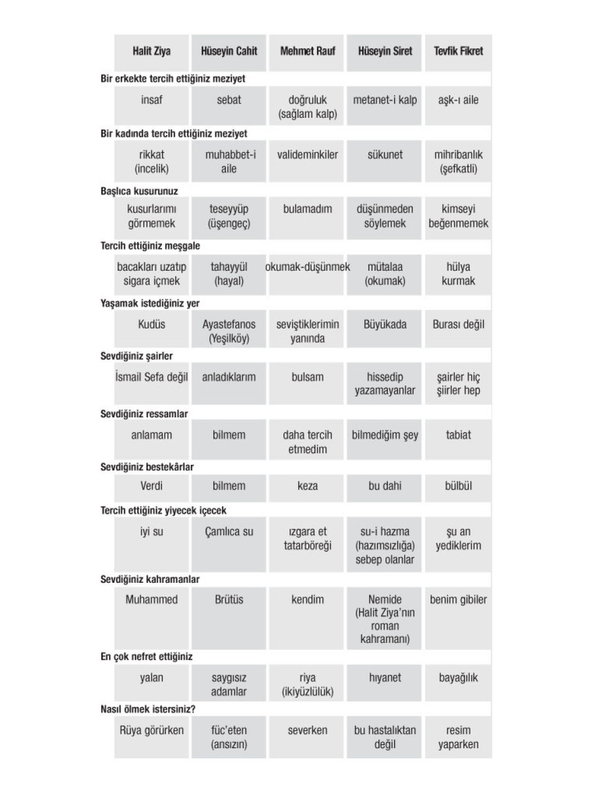

Yıl 1898...
Dünya yeni bir yüzyıla hazırlanıyor...
Osmanlı Devleti, gelen yüzyılın ne gibi siyasi-iktisadi ve kültürel gelişmelere sebep olacağının farkında bile değil...
Osmanlı münevverleri bıkkın, umutsuz...
İşte o günlerde beş Osmanlı aydını heyecanlı bir macera için kolları sıvadı...
Tevfik Fikret... 31 yaşındaydı ve Robert Kolej’de Türkçe öğretmeniydi. Daha henüz Rubab-ı Şikeste, Haluk’un Defteri, Doksan Beşe Doğru gibi eserleri yazmamıştı...
Mehmet Rauf... 23 yaşındaydı ve İstanbul Tarabya’da elçilik gemilerinin irtibat subaylığını yapıyordu. Henüz, edebiyatımızın ilk psikolojik romanı olarak bilinen Eylül’ü kaleme almamıştı...
Hüseyin Cahit (Yalçın)... 24 yaşındaydı ve Vefa Lisesi’nde öğretmenlik yapıyordu. Henüz Tanin gazetesini çıkarmamış, polemikçi, sert siyasal makaleler yazmaya başlamamıştı...
Hüseyin Kâzım Kadri... 28 yaşındaydı ve Maliye Nezareti Mektubi Kalemi’nde çalışıyordu. Henüz, “Şeyh Muhsin-i Fani” müstear adıyla, İslam’ın aydınlık yüzünü anlatan, Yirminci Asırda İslamiyet, İstikbale Doğru, Felaha Doğru gibi eserleri yazmamıştı...
Dr. Esat (Işık)... 33 yaşındaydı ve göz doktorluğu yapıyordu. Henüz, İngilizler İstanbul’u işgal etmemiş ve onu Malta’ya sürgüne göndermemişti. Gün gelecek Dışişleri Bakanlığı yapacak oğlu Hasan Esat Işık ise daha dünyaya gelmemişti...
O yıllarda bu beş Osmanlı aydınının ortak özelliği, dönemin etkili edebiyat dergisi Servet-i Fünun’da yazmaktı...
O yıllar Sultan II. Abdülhamid’in istibdat döneminin yoğun yaşandığı bir dönemdi.
Tevfik Fikret babasının sahibi olduğu Aksaray’da Ağa Yokuşu’nun alt başındaki konakta oturuyordu.
Konak haftada bir gün misafirlerini ağırlıyordu. Sohbet konusu genellikle edebiyat ve siyasetti. Ortak siyasi görüşleri şöyleydi; meşrutiyet taraftarıydılar ve Padişah’a muhaliftiler.
Özellikle Tevfik Fikret, bağıra bağıra II. Abdülhamid’i eleştiriyordu. Hafiyeler, jurnalciler duymasın diye kapılar pencereler sıkıca kapatılıyordu. Ne evdekilerin ne de misafirlerin Tevfik Fikret’e sesini alçaltmasını söyleyecek cesaretleri yoktu.
Bir misafirlik günü...
Mehmet Rauf elinde tuttuğu bir broşürle geldi. Bu broşür, konaktaki sohbetlerin seyrini değiştirecekti... Broşür İngilizceydi. Mehmet Rauf hem okuyor hem de Türkçeye çeviriyordu:
Londra’da bir dernek varmış, Yeni Zelanda adalarına göçmen götürüyormuş. Göçmenlere yüzlerce dönüm parasız toprak veriliyormuş...
Önce Yeni Zelanda’nın nerede olduğunu konuştular. Ardından broşürün de yardımıyla, bu adanın iklimini, toprakların verimliliğini vb öğrendiler.
Ve Tevfik Fikret, hep birlikte Yeni Zelanda’ya gitme teklifini ortaya attı. Heyecanlandılar. Mehmet Rauf, Hüseyin Cahit, Hüseyin Kâzım Kadri ve Dr. Esat teklife sıcak baktı.
Yıllar sonra Hüseyin Cahit anılarında bu olay için şunu yazacaktı:
Bir sosyalist cemaati halinde yaşayacaktık. Aramızda mülkiyet prensibi değil, uhuvvet (kardeşlik) prensibi hüküm sürecekti. Birbirimize karşı hakikaten bu kardeşlik hissini kalbimizde duyuyorduk.
Hüseyin Cahit (Yalçın) o günlerde Marksist’ti...
Yeni Zelanda’ya gitmek için planlar yapmaya başladılar.
Öncelikli sorun şuydu; yol parası nereden bulunacaktı?
Göz doktoru Esat Bey, Ankara’da ailesinin büyük bir çiftliği olduğunu, bunu satarak gerekli parayı temin edeceğini söyledi.
Kabul ettiler.
Dr. Esat’ı Ankara’ya uğurladılar. Tevfik Fikret’in konağında yeni yaşam üzerine sohbetler sürüp gitti.
Bu arada tartışmalar da çıkmıyor değildi: Tevfik Fikret, bir daha dönmemek üzere gitme düşüncesindeydi. Hüseyin Cahit ise, II. Abdülhamid ölür ve ülkeye meşrutiyet gelirse hemen döneceğini söylüyordu.
Tartışmaya noktayı Tevfik Fikret koydu: “Hele bir gidelim, o zaman düşünürüz!”
Ankara’dan, Dr. Esat’tan müjdeli haber beklenirken, Aksaray’daki konakta mutlu bir olay meydana geldi: Mehmet Rauf, Tevfik Fikret’in hâlâsının kızı Ayşe Sermet’e âşık oldu ve evlendiler.
O yıllar Mehmet Rauf’un bu evliliği Eylül romanında anlatacağı ve sık sık âşık olacağı pek bilinmiyordu...
Bu arada uzak diyarlarda yeni bir yaşam kurma hayali, o günlerde Hüseyin Cahit’in ilk hikâyesini yazmasına neden oldu: Hayat-ı Muhayyel.
Yeni Zelanda hayali Dr. Esat Bey’in Ankara’dan dönüşüyle son buldu: Çiftlik satılamamıştı...
Moralleri bozuldu...
Hüseyin Kâzım Kadri bir sabah Haydarpaşa’daki konağından sevinçle dışarı fırladı. Yolda giderken, “Neden olmasın” diye kendi kendine söyleniyordu. Feribottan inip, koşar adım Servet-i Fünun’a gitti ve “düş arkadaşlarına” projesini anlattı: “Bizim ailenin, Manisa Sarıçam bölgesinde çok geniş toprakları var. Yeni Zelanda’ya gidemiyorsak, burada yeni bir köy kurabiliriz. Bütün giderleri ben karşılamaya hazırım.”
Tevfik Fikret bu projeyi duyunca hemen bir kurşunkalem buldu. Köy projesi yerine, büyük bir köşk planı çizdi. Binanın ortasında ortak yaşam alanı olacak büyük salon bulunacaktı. Sohbetler burada yapılacak, yemekler burada yenilecekti. Ana binanın iki yanında iki katlı birer yatak odaları olacaktı.
Tevfik Fikret hızını alamış salon ve odaların da nasıl döşeneceğini bile anlatmaya başlamıştı. Ama birden durdu, sordu: Sarıçam denen bölge gerçekten güzel miydi?
Diğerleri göz göze geldiler, biliyorlardı ki Tevfik Fikret zor beğenen biriydi. Hüseyin Cahit’in gidip bölgeyi görmesine karar verildi.
Ancak öyle kolay değildi o günlerde İstanbul’dan kalkıp Manisa’ya gitmek. Çalıştığınız kurumdan ve polisten, geçiş tezkeresi almanız gerekiyordu!
Hüseyin Cahit, ilkini kolay aldı. İkincisi için Zaptiye Nazırı Şefik Paşa’nın huzuruna çıktı.
“Manisa’ya niçin gideceksin?”
“Efendim, orada bir çiftlik var, bakacağım, eğer oturulabilecek bir yerse ailelerimizle yerleşeceğiz.”
Nazır Şefik Paşa, tepeden tırnağa Hüseyin Cahit’i süzdükten sonra, “Sen çiftçilik yapacak adama benzemiyorsun. Doğru söyle amacın ne?” dedi ve sonra ekledi, “Kadın işi mi var?”
Hüseyin Cahit derdini anlatamadı ve sonuçta geçiş belgesini alamadı! Morali bozuk halde arkadaşlarının yanına döndü.
Tevfik Fikret yaz aylarında Anadoluhisarı’ndaki yazlığında oturuyordu. Hepsi orada buluştu. Yeni durumu gözden geçirdiler. Durum ümitsizdi.
Fakat, Hüseyin Kâzım Kadri’nin pes etmeye hiç niyeti yoktu, Hüseyin Cahit’e dönerek, “Benim geçiş tezkeremle gidersin!” dedi.
Bu yöntem o yıllarda çok tehlikeliydi. Hüseyin Cahit, yakalandığında sürgüne gönderilebilirdi. Ama düşleri bu tehlikeyi göze almaya yetti.
Hüseyin Cahit birkaç gün sonra yola düştü. Zorlu yolları aştıktan sonra Manisa Sarıçam’ı gördü ve çok beğendi.
Sevinçle İstanbul’a döndü.
Ama... Tevfik Fikret hiçbir zaman açıklamadığı sebeplerle Manisa’ya gitmekten vazgeçti...
Düş gezginlerinin lideri oydu...
Onun ödün vermez bir kişiliği vardı.
Ne yapsalar ikna edemeyeceklerini biliyorlardı.
Onlar da vazgeçti...
İçlerinden sadece, Hüseyin Kâzım Kadri, Sarıçam’a tek başına yerleşti. Özel merakı olan tarım konusunda bilgilerini geliştirmek için bir ara Almanya’ya bile gitti.
Tevfik Fikret, Yeni Zelanda ya da Manisa Sarıçam’a gidememişti ama 1901 yılında Servet-i Fünun’dan da ayrılarak, çizimlerini ve inşaatını kendi yaptığı “Aşiyan” adını verdiği Rumelihisarı’ndaki evinde inzivaya çekildi...
Hüseyin Cahit, Tevfik Fikret’e küstü ve yazmaya son verdi...
Aradan yıllar geçti...
Ve bu üç idealist adam, 23 Temmuz 1908’de II. Meşrutiyet’in ilanından sonra, birlikte Tanin gazetesini çıkardılar...
Son hayalleri, tüm Osmanlı tebaasının barış içinde yaşayacağı yeni bir dünya yaratmaktı...
Ve ne yazık ki yine hüsrana uğrayacaklardı...
Peki, bizim aydınımızın düşü yurtdışı olur da, yabancı edebiyatçının hayali Osmanlı toprakları olamaz mı?
Fransız şair Alphonse Lamartine’nin isteği Aydın Burgaz Ova’da bir çiftlikte yaşamaktı...
Fransız şair Lamartine’in Osmanlı’dan özel ricası: “Bana lütfen bir çiftlik verir misiniz?”
Tarih: 1 temmuz 1850.
Fransız şair ve devlet adamı Alphonse de Lamartine İstanbul’a geldi.
Bu ilk gelişi değildi; 18 yıl önce yine gelmişti. Fakat bu ziyareti öncesinden biraz farklıydı: Düşünü gerçekleştirdiği için Sultan Abdülmecid’e teşekkür edecekti!
Şair’in düşü neydi ve nasıl gerçekleşmişti?..
Hikâyeyi baştan anlatalım...
Lamartine Fransa’da edebiyat alanında ünlenmişti. Bir ekol yaratmıştı. Ama onun asıl isteği, hedefi, politikayla uğraşmaktı. Ve bu emeline de kavuştu. 1832 yılında İstanbul’dayken Fransız Parlamentosu’na milletvekili olarak seçildiğini öğrendi. Apar topar ülkesine döndü.
Ama burada şaşırtıcı işler yaptı; Osmanlı devleti hakkında meclis kürsüsünden olumsuz görüşler ileri sürdü. Öyle ki, Osmanlı Devleti’nin parçalanması gerektiğini iddia edecek kadar sert fikirler beyan etti.
1848 Fransız Devrimi Lamartine’nin yıldızını daha da parlattı. Geçici hükümetin Dışişleri bakanı oldu.
Ancak devrim kısa sürdü.
Aynı yıl III. Napoléon’un karşısına cumhurbaşkanı adayı olarak çıktı. Hezimete uğradı.
Lamartine’nin edebiyatçı, politikacı kimliği yanında bir de işadamı kimliği vardı. Ama mali alanda da çok başarısızdı.
İşte bu zor günlerde imdadına Osmanlı yetişecekti...
Fransız Lamartine, 1849 yılında Sadrazam Mustafa Reşid Paşa aracılığıyla Sultan Abdülmecid’e mektuplar gönderdi. Artık Fransa’dan bıkmıştı; çok sevdiği Doğu insanıyla birlikte yaşamak istiyordu!
Bu nedenle, modern yöntemlerle işleteceği bir çiftlik için imtiyaz verilmesini rica ediyordu!
Fransız Lamartine zaman içinde görüşlerini mi değiştirmişti?
Riyakârlık mıydı yaptığı? Öyleydi kuşkusuz.
Ama Osmanlı, Lamartine’nin isteğini yerine getirecekti.
Burada da bir “Osmanlı kurnazlığı” karşımıza çıkıyor aslında: Babıâli’nin bir umudu vardı; belki ileri de Lamartine Fransa’da tekrar önemli makamlara gelebilirdi!Öyle ya, Osmanlı’da durum böyleydi; sadrazamlar, vezirler, şeyhülislamlar giderler gelirlerdi...
Bu “umutla” Osmanlı yönetimi, Aydın Burgaz Ova’da toplam 38 500 dönümlük araziyi 25 yıllığına Lamartine’e verdi.
İşte yazının girişinde yazdığımız tarihte, Fransız şair, topraklarını görmek, işletme projeleri yapmak, mukavelesini imzalamak ve Sultan’a teşekkür etmek için İstanbul’a gelmişti...
İstanbul Ihlamur Kasrı’ndan Sultan Abdülmecid’in huzuruna çıkarak, teşekkür etti.
Ve topraklarını görmek üzere Aydın’a gitti.
Lamartine kendisine verilen geniş topraklara hayran oldu. Bu kadar geniş bir arazi verileceğini kendisi de tahmin etmemişti. Hemen projeler yapmaya başladı.
Burgaz Ova’da bağcılık yapıp üzüm yetiştirecek, pamuk ekecek ve Fransa’dan getireceği koyunlarla hayvancılık yapacaktı.
Bu arada doğduğu Fransa Maçon’dan 50 bağcı aileyi de Aydın’a getirecekti.
Tüm bu yatırımlar için paraya ihtiyacı vardı.
Fransa’ya gitti, para aradı. Ama Fransa piyasasından para bulamadı. Şansını İngiltere’de denedi. Londra’da tahviller çıkardı ama satamadı.
İmdadına yine Osmanlı Devleti yetişti. Lamartine’e bir öneri sundu: Siz hiç yorulmayın, toprakların gelirlerini biz toplayalım, size de senede 80 000 kuruş verelim!
Şaka gibi...
Rüşvet de diyebilir miyiz?
Neyse...
Fransız Lamartine bu teklif karşısında düşlerini erteledi. Osmanlı’nın vereceği rantı kabul etti. Belki inanamayacaksınız 1869 yılına kadar yani ölene kadar bu parayı aldı...
Kim bilir belki de bu yüzden; siyasi ve ticari alandaki başarısızlığı, edebiyat dünyasına yansımış, hak ettiği takdiri bir türlü görememiştir...
Fakat yanlış anlaşılmak istemem; aydınımızı korkak, bezgin, zavallı görünmesini arzu etmem.
Bu topraklarda hep aydın katliamı yapılmıştır.
İyi niyetli çabalar bile yok edilmiştir...
Demokrat Parti’nin kuruluş hikâyesi bunun somut bir örneğidir...
DP içinde sosyalist-liberal ittifakı
Tarih 29 nisan 1945.
Sovyetler Birliği, Berlin’e girdi.
Bir gün sonra Adolf Hitler kendini vurarak intihar etti.
O günlerde İstanbul Haydarpaşa Garı’ndan kalkan kara tren Ankara’ya bir konuk getirdi:
Solcu Tan gazetesi sahibi Zekeriya Sertel.
Gazeteci Zekeriya Sertel, Atatürk’ün uzun yıllar Dışişleri Bakanlığı’nı yapmış; İsmet İnönü döneminde pasifize edilmiş Tevfik Rüştü Aras’ın misafiriydi.
Gazeteci Sertel’in, eski Dışişleri Bakanı Aras’ın Bahçelievler’deki iki katlı evine geliş nedeni ahbap ziyareti değildi...
Bir süre önce Tevfik Rüştü Aras, İstanbul’a gelip Tan gazetesine uğramış ve sohbetleri sırasında geliş amacını açıklamıştı: “Ankara’da, tek parti ve Milli Şef İnönü’ye karşı, özgürlük ve demokrasiyi savunan yeni bir siyasal hareket ortaya çıkıyor. Senin de bizimle olmanı istiyoruz.”
Sertel, yeni partinin muhtemel kurucu önderleriyle tanışmak için Ankara’ya gelmişti..
Ankara Bahçelievler’de gazeteci Sertel’i, o dönemde CHP milletvekili olan Celal Bayar ve Adnan Menderes de bekliyordu. Evde ayrıca, Ankara Hükümeti’nin ilk İçişleri Bakanı Cami Baykurt da vardı. Aras ve Baykurt iki yakın arkadaştı ve ikisi de sosyalizme sıcak bakıyordu!
O yıllarda Celal Bayar farklı mıydı? 1921 yılında Hâkimiyeti Milliye gazetesine bakın ne demişti: “Sosyalizme karşı olanlar, ferdiyeti kuvvetli sermayesi zengin memleketler ahalisidir. Tanzimat’tan beri, elverişsiz şartlar altında Avrupa kapitalinin memleketimize imtiyazlı bir şekilde girmesinin ve iktisat kaynaklarımıza hâkim bulunmasının esef verici neticeleri göz önündedir.”
Henüz Soğuk Savaş Dönemi başlamamıştı ve Celal Bayar sosyalizmi öcü görmüyordu...
Ankara’daki gizli toplantının amacı, yeni kurulacak partinin programı ve tüzüğünü tartışmaktı. Çokpartili hayata geçilmesi konusunda hemfikirdiler. “Yarım kalan demokrasi devrimini tamamlamak” istiyorlardı.
Toplantıda en çok Menderes konuşuyor; sözlerini ağdalı sözcüklerle süslüyordu. Kendisinden yaşlı olanlar bile bazı sözcükleri anlamıyordu! Bazen tartışıyorlar, bazen gülüyorlardı. Antidemokratik buldukları bazı yasaların Celal Bayar’ın başbakanlığı döneminde çıkması üzerine, Bayar’ın, “Bu da mı benim döneminde çıkmış” demesi kahkahalara neden oluyordu.
Dile getirilmiyordu ama ilk toplantıdan itibaren partinin genel başkanlığı için iki kişi yarışıyordu: Celal Bayar ve Tevfik Rüştü Aras.
Ve o ilk toplantıda partinin adı da belli oldu:
Cumhuriyet Demokrat Partisi.
Gizli toplantılar Ankara ve İstanbul’da sürerken, CHP’nin, TBMM gündemine getirdiği toprak reformu, parti kurma çalışmalarını gizlice sürdüren liberal-sosyalist ittifakını yaraladı.
Tasarıya muhalefet edenlerin başında Adnan Menderes geliyordu.
Bir gün, Menderes Meclis’te toprak kanunu aleyhine yaptığı konuşma metnini, Tan gazetesinde basılması için Sertel’e verdi.
Sertel, toprak reformunu destekliyordu. Yazıyı basmadı.
Menderes, Sertel’i Ankara’daki evine akşam yemeğine davet etti. Sertel ile Menderes’i birleştiren sadece siyaset değildi. Dr. Edhem Vassaf, Menderes’in en yakın arkadaşıydı. Dr. Vassaf’ın eşi Belkıs Hanım ise Zekeriya Sertel’in kız kardeşiydi.
Yemekten sonra, Menderes ve Sertel çalışma odasına çekildiler. Menderes, birilerinin duymasını istemeyeceği bir ses tonuyla sordu: “Siz komünist misiniz?”
Sertel sertçe, bu sorunun yersiz olduğunu söyledi. Belli ilkeler çerçevesinde işbirliği yapacaklarını daha önce konuştuklarını, bunun dışında kişisel siyasi inancına kimsenin karışamayacağını söyledi.
Kurulacak partinin bir yayın organı olmalıydı.
Sertel, Tan gazetesinin böyle bir misyonu üstlenemeyeceğini söyledi. Tevfik Rüştü Aras, bir dergi çıkarılmasını önerdi.
O günlerde, Zekeriya Sertel’in gazeteci eşi Sabiha Sertel de bir dergi çıkarmaya çalışıyordu. Bu iki girişimi birleştirmeye karar verdiler.
Derginin ismi, Sabiha Sertel’in Tan gazetesindeki köşesinin adı olacaktı: Görüşler.
Dergi ve parti hazırlıkları gizli gizli sürerken, ABD Başkanı Roosevelt’in, “dört hürriyet” bildirgesini açıklaması, Celal Bayar, Adnan Menderes, Fuat Köprülü, Refik Koraltan’ı harekete geçirdi. Siyasal özgürlüklerin hayata geçirilmesini talep eden ve basında “Dörtlü Takrir” adıyla bilinen teklifi CHP Meclis Grubu’na sundular. Teklif reddedildi. Ancak parti içi tartışmalar son bulmadı.
Menderes ve Köprülü, “Dörtlü Takrir”in esaslarına ilişkin görüşlerini Tan gazetesinde yayımlayınca, her ikisi de CHP’den atıldı.
Gözler Celal Bayar’daydı... Bayar, Serteller’in İstanbul Moda’daki iki katlı villasında, Zekeriya Sertel’in yardımıyla milletvekilliğinden çekildiğini açıklayan istifa mektubu yazıyordu.
Evin bir diğer odasında ise, Sabiha Sertel Görüşler dergisinin son çalışmasını bitirmek üzereydi...
Liberal-sosyalist ittifakını biçen “orak”!
Tarih: 28 kasım 1945.
İstanbul Haydarpaşa Garı’ndan çıkan kara tren bu kez Ankara’ya gazeteci Sabiha Sertel’i getirdi.
Sabiha Hanım, Adnan Menderes’in evine davetliydi.
Gergindi. Dört ay çalışmış Görüşler adlı derginin tüm çalışmalarını bitirmişti. Başta Halide Edip Adıvar olmak üzere, Behice Boran, Aziz Nesin, Sabahattin Âli, Niyazi Berkes, Pertev Boratav gibi birçok aydından yazı yazacaklarına dair söz almıştı.
Celal Bayar, Adnan Menderes ve Fuat Köprülü de makale yazacaklarını belirtmişlerdi. Bu nedenle derginin kapağına, Bayar, Köprülü ve Menderes’in de aralarında bulunduğu yazar kadrosunun fotoğrafları, isimleri basılmıştı.
Dergi kapağı Cumhuriyet, Akşam ve Vatan gazetelerine ilan olarak gönderilmişti. Ancak, Bayar, Menderes ve Köprülü söz verdikleri halde makalelerini yollamamışlardı. Yapacak bir şey yoktu, ilanlar ve dergi o kapakla çıkacaktı...
Sabiha Sertel bu duyguyla girdi Adnan Menderes’in Kavaklıdere’deki evine.
Evde, Menderes, Bayar, Köprülü ve Aras vardı. Misafir odasının ortasındaki yuvarlak masada parti programına son şekli veriyorlardı.
Sabiha Hanım’ın sitemine, “Çok özür dileriz ama görüyorsunuz çok çalışıyoruz, ama gelecek ikinci sayıya mutlaka yazı vereceğiz” diye yanıt verdiler.
Sohbetten sonra, Menderes ve Köprülü İstanbul’a dönen Sabiha Hanımı tren istasyonuna kadar uğurladılar.
Sabiha Sertel’i İstanbul’da bir sürpriz bekliyordu.
Görüşler dergisi 1 aralıkta çıkacaktı. Ama dergi 29 kasımda bayilere gönderilmişti ve dergi tiraj patlaması yapmıştı. Dergi aynı gün içinde ikinci baskısını yaptı.
Sabiha Hanım eşi Zekeriya Sertel’le bu mutlu olayı kutlamak için akşam Degüstasyon lokantasına gitti. Ve orada ikinci bir sürprizle karşılaştı. Yazar Sadrettin Celal, “Haberiniz var mı, Görüşler mecmuasının başındaki ‘G’ harfini orağa benzetmişler. ‘Görüşler dergisi, orak çekiç başlığı altında çıkmış’ diye rivayetler salıyorlar ortalığa” dedi.
Sertel çifti bu dedikoduya, “öküzün altında buzağı arıyorlar” deyip güldüler. Derginin logosunu İhap Hulusi hazırlamıştı ve onun orak çekiçle, sosyalizmle hiç ilgisi yoktu. Birileri liberal–sosyalist ittifakı bozmak istiyordu.
O dönemde, Bayar ve Menderes gibi liberallerden çok solcular iktidara daha yakın görülüyordu. Çünkü dünyada sol rüzgâr esiyordu.
İngiltere’de Churchill seçimi kaybetmiş, İngiliz tarihinde ilk kez İşçi Partisi ezici bir çoğunlukla iktidar olmuştu.
Fransa’yı artık sosyalist bir hükümet yönetiyordu.
İtalya’da komünistler iktidar ortağıydı.
Yugoslavya ve Bulgaristan’da seçimleri komünistler kazanmıştı. Yunanistan’da komünistler iktidara talipti. Arnavutluk ve Macaristan’da krallıklar yıkılmış, komünistler iktidarın güçlü adayıydı...
Türkiye’de ise sosyalistler ile liberaller yeni bir parti kurma hazırlığındaydılar.
Ve birileri bu oyunu bozmak istiyordu...
Serteller, “orak çekiçli” kara propagandaya gülmüşlerdi ama Ankara’da bu konuyu ciddiye alanlar vardı.
30 kasımda, Bayar, Menderes ve Köprülü Görüşler dergisiyle bir ilgileri olmadığını, Kemalizm’den başka ideolojiye inanmadıkları açıklamasını yaptılar.
“Orak” liberal-sosyalist ittifakını ortadan biçmişti!
Serteller bu açıklamaya tepki gösterdiler.
Tevfik Rüştü Aras her iki tarafı tekrar bir araya getirmeye çalışıyordu. Ama... Bu birlikteliği bozmak için birileri de bir başka çalışma içindeydi.
3 aralık gecesi İstanbul Üniversitesi öğrenci yurtlarına yarın sabah Tan gazetesi ile Görüşler dergisine karşı gösteri yapılması talimatları verilmişti.
Tarih 4 aralık 1945.
Sabah saatlerinde öğrencilerden oluşan büyük kalabalık Beyazıt Meydanı’nda toplandı. “Kahrolsun Komünistler” “Kahrolsun Serteller” sloganlarını atarak Babıâli’ye doğru yürüyüşe geçtiler.
Cağaloğlu’na vardıklarında sol görüşlü kitaplar satan ABC ve Berrak kitabevlerini darmadağın ettiler.
Sıra da Tan gazetesi ve Görüşler dergisi vardı.
Ve binlerce kişi ellerinde taşlarla, demir çubuklarla pencereleri, kapıları, masaları, matbaa araçlarını, dizgi makinelerini yerle bir ettiler. Bazı kişiler binayı ateşe vermek istedilerse de başarılı olamadılar.
Kalabalıklar nereyi tahrip edeceklerini sanki biliyordu.
Bir sonraki saldırıyı Cami Baykurt’un Fransızca çıkardığı La Turquie gazetesine yaptılar. Orayı da yıktılar. Sonra sosyalist Esat Adil’in sahibi olduğu Yeni Dünya gazetesine saldırdılar..
Sonra... Liberal-sosyalist ittifak bir daha gerçekleşmeyecek şekilde sona erdi...
Ve sol, Soğuk Savaş Dönemi’nde benzer provokasyonlarla korkulan bir öcü haline getirildi...
Konu dergi ambleminden açıldı. Araya girip Türkiye’nin unutamadığı iki seçim afişinin doğum hikâyesini kısaca anlatmak isterim.
“Yeter! Söz Milletindir!”
Tarih: 10 haziran 1946
TBMM 21 temmuz’da erken seçim kararı aldı.
Demokrat Parti bir hafta sonra seçime katılma kararı aldı...
Kenan Akmanlar, Adnan Menderes’in halasının oğluydu.
O günlerde, eşi Lütfiye Hanım’la (-ki o da Prof. Emre Kongar’ın halasıdır) Ankara Meşrutiyet Caddesi’ndeki daire komşuları Selçuk Milar’a misafirliğe gittiler.
Selçuk Milar bekârdı ve daha henüz Mazhar Alanson’un ablası Aynur’la evlenmemişti. Misafirliğin nedeni, mimar Selçuk Milar’ı “baş göz etmek” değildi.
Kenan Akmanlar, aynı zamanda grafik sanatçısı olan Selçuk Milar’a bir teklifte bulundu. Demokrat Parti Genel Merkezi’nde propaganda ve afiş hazırlama komisyonu kurulacaktı; orada yer alabilir miydi?
Selçuk Milar kabul etti ve ertesi akşam komisyon toplantısına katıldı.15 kişilik komisyonda esnaflar, tüccarlar, mühendisler vardı ama grafik sanatından anlayan kimse yoktu!
Selçuk Milar, Adnan Menderes’in “torpiliyle” geldiği için çok saygı görüyordu ama söylediklerini kimse pek ciddiye almıyordu. Selçuk Milar, afişlerin nasıl olması gerektiğini Avrupa ve ABD afişlerinden örneklerle anlatıyor; çeşitli grafik dergilerinden seçtiklerini komisyona gösteriyordu.
Selçuk Milar on gün boyunca konuştu, anlattı, örnekler gösterdi ama komisyona derdini anlamadı. Komisyon, işçi-köylü ve şehirliyi temsil eden kolkola girmiş üç genci gösteren afişi çok beğendi. Bu üç gencin üzerine madalya içinde Atatürk’ün başını gösteren bir de fotoğraf eklediler.
Afişin altındaki slogan ise şuydu: Köylü, İşçi, Şehirli Kol Kola, Demokrat Parti.
Komisyonun afişi çok beğenmesi Selçuk Milar’ı çok kızdırdı. Ayağa kalkarak, “Bu afiş Demokrat Parti’ye yakışmaz, partiyi iktidara taşımaz” diye bağırdı. Sinirlerine hâkim olamadı. İstifa ettiğini açıkladı ve gitmek için yeni getirdiği örnek afişleri masadan toplarken... O anda... Birden bire... Sağ elini kaldırdı, parmakları bitişik halde, avucunu komisyon üyelerine gösterecek şekilde uzatarak, “Kocaman bir el yaparsınız, üzerine de, Yeter! Söz Milletindir! diye yazarsınız. İşte afiş dediğin böyle olur” dedi.
Selçuk Milar’ı sakinleştirmeye, gönlünü almaya çalıştılar. “Tamam sizin söylediğiniz afiş de güzel ama bu afiş Amerika’da geçerli olabilir. Bizim halkımız bunu anlamaz” dediler.
Selçuk Milar tek bir söz etmeden komisyonu terk etti.
O akşam Kenan Akmanlar yine komşusuna uğradı. Komisyondaki tartışmayı duymuştu. Dostunun gönlünü aldı. Yarın komisyona Celal Bayar ile Adnan Menderes’in de geleceğini ve kendisini mutlaka görmek istediklerini söyledi.
Selçuk Milar, ertesi gün parti genel merkezine gittiğinde, Bayar ve Menderes’inde aralarında bulunduğu parti üst yönetiminin komisyon üyeleriyle toplantıya başlamış buldu.
Boş bulunan bir koltuğu oturdu. Celal Bayar kendisine dönerek, “Selçuk Bey sizin afiş fikrinizi beğendik ama biraz sert değil mi?” diye sordu.
Selçuk Milar anlamıştı ki, dünkü olaydan Bayar ve Menderes’in haberi vardı. O sinirle birden bire aklına gelen afiş fikrini kendisi de çok beğenmişti. Bu nedenle cevap olarak, “Hayır Efendim, afiş hiç sert değil, bu afiş demokrasiyi anlatıyor” diye fikrini savundu.
Bayar anlattıklarını onayladı. “Peki” dedi, “Siz bu afişi bize ne zaman hazırlarsınız?”
Selçuk Milar “Yarın hazır olur” yanıtını verdi.
Heyecan içinde, eve nasıl geldiğini bilemedi. Ağzına tek bir lokma koymadan, çay içmeden sabaha kadar çeşitli kompozisyon ve eskizler yaparak çalıştı. Şafak sökerken afişi bitirdi.
Afişi odanın duvarına astı, karşısına geçip birkaç saat seyretti. Çıkan eserden mutluydu.
Saat 09.00’taki parti genel merkezindeki toplantıda afiş çok beğenildi. İstanbul’un en büyük matbaalarından birine sahip olan Alaettin Kral’a telefon edildi, genel merkeze çağrıldı.
Afişlerin basılmasıyla Alaettin Kral ilgilenecekti. Afişin orijinalini alıp İstanbul’a döndü.
Selçuk Milar afişinin prova baskısını görmek için her gün iki kez genel merkez binasına gitti. Provalar bir türlü gelmedi ve bir gün afişin tonlarca basılmış haliyle karşılaştı. Alaettin Kral afişin orijinal halini filme alıp bastırmamış, sıradan bir ressama afişi yeniden çizdirmişti. Afiş bu haliyle kötüydü.
Selçuk Milar’ın morali bozuldu. Ama Türkiye’nin dört bir yanına dağıtılan afişlerin halktan büyük bir takdir görmesi üzüntüsünü kısa zamanda yok etti.
Selçuk Milar’ın afişine tepki duyanlar da vardı...
Selçuk Milar, Milli Eğitim Bakanlığı’na bağlı Mesleki ve Teknik Öğretim Müsteşarlığı’nda görevliydi. Bir gün mesai saatinin bitmesine dakikalar kala Milli Eğitim Bakanı Hasan Âli Yücel, Selçuk Milar’ın karşısına dikildi.
“Demokrat Parti’nin afişini siz mi hazırladınız?” diye sordu. “Evet” yanıtını alınca, Selçuk Milar’ı tebrik etti ve ekledi:
“Siz devlet dairesinde çalışan bir memursunuz, sizin özel atölyeniz yok, böyle bir afişi hazırlamanız pek doğru gelmiyor bize.”
İki gün sonra, Selçuk Milar’ın Urfa’da bir şantiyeye tayini çıktı!
Selçuk Milar istifa etti.
“Yeter! Söz Milletindir!” afişi DP’ye 1946 seçimlerini kazandırmadı. DP yine aynı afişi kullanarak 1950 yılında iktidar oldu.
Ve iktidar olunca ne yaptı dersiniz; bir daha kendilerinin kullandığı gibi bir afişle karşılaşmamak için, dünyada benzeri olmayan bir yasa çıkardılar: Afişlerde çizim, resim ve fotoğraf olmasını yasakladılar!..
“Limon gibi sıkılmaya hayır!”
Tarih: 10 eylül 1987.
TBMM 29 kasımda erken seçim kararı aldı.
Sabahattin Çetin, SHP İstanbul İl Başkanlığı Kültür Komisyonu Başkanı’ydı. Başta Yaşar Kemal olmak üzere aydınlar ile SHP Genel Başkanı Erdal İnönü’yü yan yana getiren davetler veriyordu. İnönü, Sabahattin Çetin’in çalışmalarından çok memnundu. Parti Genel Sekreteri Fikri Sağlar aracılığıyla haber gönderdi: “Seçim kampanyamızı yürütecek dinamik birilerine ihtiyacımız var, ne yapabiliriz?”
Sabahattin Çetin eniştesinin metin yazarlığı yaptığı Yorum Ajansı’n Elmadağ Kahan’daki bürosunun kapısını çaldı.
Ajans seçim konusunda deneyimsizdi. Daha kurulalı 6 yıl olmuştu. Ortakların ve çalışanların hemen hemen tümü 12 Eylül 1980 Askeri Darbesi mağduru solculardı.
Yorum Ajans, SHP’yle görüşmeye gitmeden önce nasıl bir kampanya yapacaklarına ilişkin kısa bir çalışma yaptı.
Eylül ayının son haftası SHP Genel merkezi’nde toplanıldı. Toplantıda Erdal İnönü ve Fikri Sağlar gibi partinin üst düzey yöneticileri ile Yorum Ajans’ın ortaklarından Mehmet Ural ile Osman Uslu ve Sabahattin Çetin vardı.
Anlaşmaya varıldı; kampanya resmen Yorum Ajansa verildi.
Yorum Ajans seçim kampanyasını Erdal İnönü’nün güvenilirliği üzerine konumlandıracaktı. Metin Ural bu nedenle İnönü’nün tüm yakınlarıyla konuştu. Kişisel özelliklerini sordu. İnönü kötü konuşmacıydı; yavaş konuşuyor ve uzun cümleler kuruyordu. İnönü’nün imajı değiştirildi.
Yorum Ajansın üçüncü ortağı Ahmet Yaşar Somuncuoğlu görsel materyalle ilgiliydi. Partinin yeni olduğunu, yenilikçi olduğunu göstermek için parlak renkler seçti. “Oyum SHP’ye” diyen fotoğraflı afişlerde genç, güler yüzlü insanlar ve başörtülü bir kadın kullanıldı.
TRT ilk kez seçime katılan partilere 20 dakika görüntülü propaganda olanağı verdi. Ajans yaptığı kamuoyu araştırmasında halkın en büyük şikâyet konusunun pahalılık olduğunu gördü. Bu kızgınlık duygusunu harekete geçirmek üzere çalışmalar yapıldı.
Tüm bu çalışmalar SHP Genel Merkezi’yle koordineli olarak yürütülüyordu. Yorum Ajans ortakları Mehmet Ural ve Osman Uslu bu nedenle sık sık Ankara’ya gidiyordu.
Seçime 20 gün kala... Bir Ankara dönüşü... Uçakta... Birden bire Osman Uslu’nun aklına “limon gibi sıkılmak” deyimi geldi. Öyle ya, orta direk hayat pahalılıktan şikâyetçi değil miydi? Bu durumu en iyi bu deyim açıklıyordu.
Uçaktan iner inmez büroya gittiler. Fikri arkadaşlarıyla tartıştılar. O dönem SHP kampanyasına Prof. Nilüfer Göle ve Prof. Burhan Şenatalar çok destek veriyordu. Onlar da limon konseptini çok beğendiler. Ajans çalışanları arasında Ali Saydam, Sinan Çetin gibi isimler vardı; onlar da çok beğendiklerini söylediler.
Kollar sıvandı. Ajansın yakınındaki manavdan güzel limonlar alındı. Limonu sıkmak için güzel bir el arandı; o da ofis çalışanlarından biri seçildi. Fotoğraflar, filmler seçildi ve tekrar Ankara’ya gidildi...
SHP’li yöneticilerden kimse “mükemmel” demedi. Onlar ajansa güveniyorlardı. “İyi”, “beğendik” demekle yetindiler.
Ajans sahipleri biraz moralleri bozuk döndüler İstanbul’a. Kafaları karışmıştı. Morallerini bir gazeteci düzeltti: Güneri Civaoğlu.
Gazeteci Civaoğlu limon kampanyasını çok beğenmişti. “ANAP’ı sarsar” dedi.
Öyle de oldu.
Seçimlere bir hafta kala “sıkılmış limon” kampanyası patlatıldı:
“Beş Yıl Daha Bir Limon Gibi Sıkılmaya Hayır!”
“Beş Yıl Daha Bir Limon Gibi Sıkılmaya Gücünüz Var mı?”
Gazeteler limon esprisini manşetlerine taşıdı. Karikatüristlerin en iyi malzemesi limon olmuştu. Seçimin gündeminde artık “sıkılmış limon” vardı.
ANAP “limonun etkisini” azaltmak için gazetelere “Bir siyasi gaf, bir milli ayıp” diye ilanlar verdi: “Sırf bir oy uğruna, insan kendi milletine limon demez, milletini limona benzetmez, ayıptır.”
Ancak bu ilan da limon kampanyasına olumlu etki yaptı.
Ve Turgut Özal özel toplantılarında Yorum Ajans’ın bu kampanyasını övecek, “Bu çocuklarda iş var, kim bunlar” diyecekti...
“Limon kampanyası” SHP’ye iktidar getirmedi. Ama Yorum Ajansı çok büyüttü. Ajans zamanla, Fransız reklam ajansı Publicis’le ortak olup, “Publicis Yorum” adını aldı...
“Sıkılmış limon” esprisinin ünü yurtdışına taştı; Mehmet Ural Avrupa Parlamentosu’ndaki bir panele katılarak kampanyalarının başarısını anlattı.
İlginçtir, “Yeter! Söz Milletindir!” afişi 14 mayıs 1950 seçimlerinde DP’yi iktidara taşıdı. “Sıkılmış limon” konseptiyle unutulmaz bir kampanya hazırlayan Yorum Ajans ise bir 14 mayıs (1981) günü kurulmuştu...
Bu bilgilerden sonra DP ile sosyalistlerin ilişkisine devam edelim...
DP milletvekili listesinde bir sosyalist
Tarih: 7 ocak 1946.
Celal Bayar, Ankara Sümer Sokağı’ndaki –Tevfik Rüştü Aras’ın kız kardeşi Fahriye’nin eşi Dr. Cemal Tunca’nın sahibi olduğu– iki katlı binada “Demokrat Parti”nin resmen kurulduğunu açıkladı.
Gazetecilerin “Sağda mısınız solda mı?” sorusunu Adnan Menderes yanıtladı:
“Biraz, iki parmak daha solda!”
Bu açıklama DP’nin başına bela oldu. Muhalifleri, “Sovyetler’den para almaktan” tutun da “kurucuların komünist olduklarına” dair yığınla dedikodu çıkardı.
Tartışmalar sürerken TBMM erken seçim tarihini belirledi: 21 temmuz 1946 DP kolları sıvadı. Vitrinine şair Faruk Nafiz Çamlıbel ve Fenerbahçe’nin ünlü futbolcu Zeki Rıza Sporel gibi isimleri koydu...
Listede bir de sosyalist vardı...
Mehmet Ali Aybar o yıllarda İstanbul Hukuk Fakültesi’nde doçentti. Vatan gazetesinde yazdığı korkusuz makalelerle tanınmıştı. Hürriyet isteyen bu yazıları yüzünden askerlik yaptığı, İstanbul Maltepe Askeri Birliği’nden, Kayseri Tank Depo Komutanlığı’na gönderilmişti.
Aybar, susmak istemiyor, yazılarına devam etmek istiyordu. Ancak gazetenin sahibi Ahmet Emin Yalman askerliği bitene kadar yazı istemedi.
Bu arada Kayseri’de, haftada iki gün yayın yapan Doğru Yol gazetesi sahibi Osman Kavuncu, (ileri de Kayseri Belediye baskanlığı, DP milletvekilliği yapacaktır) Aybar’a yazarlık teklifi götürdü. Ardından bir başka teklif geldi..
DP il örgütünü kurmak için Kayseri’ye gelen Refik Koraltan, Mehmet Ali Aybar’la askeri karargâhta buluştu. Yazılarını çok beğendiklerini belirterek, DP’ye girmesini teklif etti. Aybar, her görüşten insanın aynı çatı altında olmasının demokrasi için iyi olmayacağını söyleyerek teklifi kabul etmedi.
DP’liler Aybar’ın peşini bırakmadı. Benzer teklifi DP’li Hulusi Köymen de tekrarladı.
Aybar, DP’ye girmeyi kabul etmedi ama DP listesinden bağımsız aday olmaya sıcak baktı.
DP, Mehmet Ali Aybar’ı Bursa üçüncü sıradan aday gösterdi. İlk iki sırada Celal Bayar ve Hulusi Köymen vardı. Ancak, 21 Temmuz 1946 Seçimleri’nde Aybar milletvekili seçilemedi.
Not: Sertel çiftinin kızı Yıldız Sertel Hanımefendi’den bir mektup aldım. Onu da sizinle paylaşmak isterim:
(...) Aslında bunlar hata da değil belki de bir izlenim sorunu.
Birincisi, Celal Bayar’ın ideolojisi: Yazınızda Celal Bayar’ın bir yazısından aktarma yapıyor ve Bayar’ın sosyalizmi öcü görmediğini söylüyorsunuz. Bu belki de doğru, zira Bayar bir süre devletçi bir hükümetin ekonomi bakanıydı.
Ancak Demokrat Parti kurulduğu sırada liberal ekonomiyi savunuyordu. Babam Zekeriya Sertel anılarında Bayar’la kurulacak Demokrat Parti’nin ilkeleri tartışılırken kendisinin devletçilikte ısrar ettiğini, Bayar’ın ise liberalizmi savunduğunu belirtiyor. Nitekim kurulan DP liberalizmi benimsemiş ve hatta Amerika’ya teslim olmuştur.
2- Gizli toplantılardan söz ediyorsunuz. Ben, o toplantıların pek o kadar gizli olduğunu sanmıyorum.
3- Dr. Edhem Vassaf, Menderes’in yakın arkadaşı değil, yakın akrabası.
4- Menderes, Sertel’e komünist olup olmadığını sorduğu vakit Sertel’in verdiği yanıt bir kaçamak niteliğinde, oysa babam gerçekten komünist değildi. Daha ziyade sol eğilimli, ama hiçbir ideolojiye bağlı olmayan bir demokrattı. Mehmet Ali Aybar onun sosyal demokrat olduğunu söylerdi. Babamın Tan gazetesinde komünist olmadığını anlatan birkaç yazısı da çıkmıştı. (...)
Aydının biçilmesi 1970’li yıllarda daha kanlı olmuştur.
Bir kırmızı karanfilin öyküsü
Tarih: 30 nisan 1977.
Yer: Ankara Mustafa Kemal Bulvarı.
Bir öğretmenler derneği olan TÖB-DER’in organize ettiği onlarca otobüs saat 22:30’da İstanbul’a hareket etti.
Otobüsler tıklım tıklım doluydu.
Her otobüsten türküler, marşlar duyuluyordu hep bir ağızdan söylenen.
Bir Mayıs, Bir Mayıs işçinin, emekçinin bayramı...
1 Mayıs Bayramı’nı kutlamak için yola düşen binlerce öğretmenden biriydi Bayram Çıtak...
Bayram Çıtak, 1940 yılında Sivas-Şarkışla Emlek Köyü’nde doğdu. Ailesi çok fakirdi. Savaş yılları yoksulluklarını daha da artırmıştı. Üç kardeştiler. Anne babasının tek umudu vardı; çocuklarını okutmak, subay ya da öğretmen yapmaktı. Bayram Çıtak, ilkokulu köyünde okudu. Öğretmen olmak istiyordu: Hasanoğlan Öğretmen Okulu’na yatılı öğrenci oldu. 22 yaşında öğretmen çıktı. İlk görev yeri Sivas Zara’ya bağlı Karacahisar köyüydü.
Zaman içinde Anadolu’nun birçok yoksul köyünde öğretmenlik yaptı. Köy çocuklarını okutabilmek için her türlü zorluğu göze aldı. Okuldan arta kalan zamanda tarlada, bahçede köylülere yardım ediyordu.
Son görev yeri Ankara Mamak Derbent İlkokulu oldu. Ataması bir hafta önce yapılmıştı. Eşi Selver ve üç oğlu, 13 yaşındaki Mete, 10 yaşındaki Metin ve 5 yaşındaki Mesut’la, Mamak’ta kiraladığı gecekonduda yeni hayatlarına başlamışlardı.
Ankara’dan kalkan otobüsler yolu yarılamıştı. Öğretmenlerin çoğu uykuya dalmıştı. Bayram Çıtak, sigaranın birini bitirip diğerini yakıyordu. Canı sıkkındı. 10 yaşındaki oğlu Metin’i düşünüyordu. Küçük Metin hastaydı. Böbrek yetmezliği teşhisi konmuştu. Haftada iki üç kez diyaliz makinesine bağlanacaktı. Bu nedenle tayinini Ankara’ya çıkarmıştı.
Hastalık acısı, oğul üzüntüsü ayrı; tek öğretmen maaşıyla bu ekonomik yükün altından nasıl kalkacağını düşünüyordu. Bu düşüncelerle ağırlaşan gözkapakları yavaşça kapandı. Uykuya daldı...
Çok zaman geçmedi, arkadaşlarının söylediği türkülere uyandı. Otobüsler İstanbul’a varmıştı..
Saat 07:30.
1 Mayıs Taksim Mitingi’ni organize eden DİSK’in buluşma noktalarından biri de Beşiktaş Barbaros Meydanı’ydı.
Saat 10:00.
Bayram Çıtak’ın da aralarında bulunduğu Ankara’dan gelen öğretmenler burada korteje katıldı.
Binlerce insan kol kola girip Taksim’e doğru yürüyüşe başladı. Önde DİSK’e mensup işçiler; arkada sırasıyla Türk Tabipler Birliği, TÖB-DER, Çağdaş Hukukçular gibi sivil toplum örgütleri ve en arkada Dev-Genç vardı.
Saat 14:30.
Kortej Taksim’e ulaştı.
Meydanda yüz bini aşkın insan bulunuyordu. Ve hâlâ meydana, her yandan oluk oluk insan akıyordu. İstanbul, tarihi mitinglerinden birine tanıklık ediyordu.
Bayram Çıtak acıkmıştı. Bir simit aldı. Yorulmuştu. Meydandaki Intercontinental (bugünkü adıyla The Marmara) otelinin önüne gitti, yere çömelip simitini yemeye başladı.
Bu sırada DİSK Başkanı Kemal Türkler konuşma yapmak için kürsüye çıktı. Saat 18:30’du. Başkan Türkler konuşmasını, meydandaki insanları, eski DİSK Sekreteri İbrahim Güzelce anısına bir dakikalık saygı duruşuna çağırarak bitirdi.
Saat 19:45.
Binlerce insan saygı duruşunda bulundu. Ortalıkta hiç ses yoktu. Birden nereden geldiği belli olmayan silahlar ardı ardına patlamaya başladı.
Ateş edenler sanki saygı duruşunu beklemişlerdi. Silah sesini duyan meydandaki binlerce insan panik halinde sağa sola koşmaya başladı.
Öğretmen Bayram Çıtak önce ne yapacağını kestiremedi. Arkadaşlarına bakındı, herkes bir yana koşuşuyordu.
O da otelin hemen yanındaki Kazancı Yokuşu’na doğru koştu. Dar sokağa ilk girenlerden biri oldu. Ama çıkamadı. Kimin getirip koyduğu bilinmeyen bir kırmızı kamyonet bu dar yolu tıkamıştı.
Ölümlerin çoğu, buradaki ezilmeler sonucu oldu. İlkokul öğretmeni Bayram Çıtak burada kaburgaları kırılmış halde bulundu. Ölmüştü...
30 yıl sonra...
Yıl: 2007.
DİSK, 1 Mayıs 1977 Katliamı’nın 30. yılını Taksim’de anmak istedi. İstanbul Valiliği izin vermedi. DİSK inat etti.
Polis, belli sayıda DİSK görevlisinin Taksim’e çıkıp anıta çiçek koymasına izin verdi. Ancak başka kimseyi Taksim’e sokmamaya kararlıydı.
1 Mayıs İşçi Bayramı’nı kutlamak ve 30 yıl önce ölenleri anmak için Ankara’dan gelen otobüsler, bu nedenle İstanbul’a sokulmadı.
Polis, otobüslerin Ankara’ya geri dönmesini istedi. Gelenler ısrarcıydı. Tartışma sürerken, otobüsten inen bir kişi, kimseye gözükmeden oradan uzaklaştı.
Ne yapıp edip Taksim’e ulaşmak istiyordu. Saatlerce yürüdü. Beşiktaş Dolmabahçe’de, polisin üzerine sıktığı biber gazı bile onu durduramadı.
Sonunda başardı, DİSK kortejine katıldı, Taksim’e ulaştı. Ve elindeki kırmızı karanfili Kazancı Yokuşu’nun bir köşesine bıraktı sessizce.
Sanki babasına kavuşmuş gibiydi. O kişi Mete Çıtak’tı... Öğretmen Bayram Çıtak’ın yaşayan iki oğlundan biri...
Bayram Çıtak’ın, İstanbul’a gelirken otobüste sabaha kadar düşündüğü 10 yaşındaki oğlu Metin, babasının ölümünden bir yıl sonra böbrek yetmezliğinden vefat etmişti...
1 Mayıs 1977’de kaç kişi öldü?
1 Mayıs 1977’de ölenler artık sadece bir istatistik mi?
Onların birer adı, hayatları ve yaşam hikâyeleri yok mu?
54 yaşındaki Ermeni vatandaşımız Garabet Ahyan’dan 17 yaşındaki Jale Yeşilnil’e; 20 yaşındaki polis memuru Nazmi Arı’dan Rum vatandaşımız 57 yaşındaki Aleksandros Konteas’a kadar, ölenlerin tümünün bir öyküsü var kuşkusuz.
Ve bu yaşam öyküleri yazılmalı birer birer.
Ama... Bırakın hayat hikâyelerinin yazılmasını; 1 Mayıs 1977’de kaç kişinin öldüğünü bile bilmiyoruz...
Ne hazin!
1 Mayıs 1977’de kaç kişinin öldüğünü bilmiyoruz. Bu nedenle herkes bir sayı uyduruyor. Genellikle rakamlar 34 ile 42 arasında değişiyor!
Devlete göre sayı 34. Soruşturmayı yürüten altı savcı yardımcısından oluşan kurul bu sayıyı vermektedir. Keza iddianamede de aynı sayı verilmektedir. Devlete göre ölenlerin isimleri şöyle:
Hasan Yıldırım, Niyazi Darı, Kadir Balcı, Nazmi Arı, Hikmet Özkürkçü, Garabet Ahyan, Sibel Açıkalın, Ömer Narman, Ali Sidal, Mehmet Ali Genç, Hüseyin Kırkın, Aleksandros Konteas, Kadriye Duman (Kocamış), Kahraman Alsancak, Hatice Altun, Mehmet Ali Elmas, Kenan Çatak, Ercüment Gürkut, Leyla Altıparmak, Mahmut Atilla Özbelen, Rasim Elmas, Bayram Çıtak, Jale Yeşilnil, Nazan Ünaldı, Hamdi Toka, Hacer İpek Saman, Ramazan Sarı, Diran Nigiz, Bayram Eyi, Ziya Baki, Ahmet Gözükara, Meral Cebren (Özkol), Mültezim Oltulu, hüviyeti meçhul 35 yaşlarında bir erkek.
DİSK’in kayıtlarına göre ise ölü sayısı 36. İlginçtir DİSK’in Taksim’de öldüğünü açıkladığı Ali Yeşilgül, Mustafa Ertan, Yücel Elbistanlı, Tevfik Beysoy, Bayram Sürücü, Özcan Gürkan ve Hülya Emecan adlı isimlere savcılık iddianamesinde yer verilmemişti.
Keza savcılık iddianamesinde olan Ali Sidal, Hatice Altun, Ramazan Sarı, Mültezim Oltulu ve kimliği meçhul kişi de DİSK listesinde yoktu!
Yani DİSK listesinden 7 kişi iddianamede, iddianamedeki 5 kişi de DİSK listesinde yoktu. Her iki listedeki isimler toplandığında ölü sayısı 41 oluyor. Bitmedi.
Katliamdan 15 gün sonra çıkan Devrimci Yol dergisi, ölü sayısını 27 olarak verdi. Verilen 26 isim yukarıda var. Ancak her iki listede, yani iddianamede ve DİSK kayıtlarında olmayan bir isim vardı: Mehmet Ali Kol. O halde ölü sayısı 42 kişiydi.
Peki dönemin gazeteleri ölü sayısını kaç kişi vermişti: Hürriyet: 34, Milliyet: 34, Cumhuriyet: 34, Tercüman: 34, Günaydın: 39, Son Havadis: 38, Hergün: 40, Dünya: 39, Milli Gazete: 40, Politika: 35.
30 yıl sonra TV’lerde ve gazetelerde herkes ayrı bir sayı veriyor. Ve ne yazık ki biz hâlâ kaç kişinin katledildiğini tam olarak bilemiyoruz!...
Kaç kişinin öldüğünü bilmediğimiz gibi, 1 Mayıs 1977 provokasyonunun neden yapıldığını da pek tartışmıyoruz...
30 yıllık derin sır
Tarih: 5 nisan 1977
Yer: TBMM.
Meclis, 5 haziran 1977 tarihinde erken seçim yapılması kararını aldı. Seçime katılacak tüm partiler yollara düştü. İktidar olmasına kesin gözüyle bakılan CHP’nin mitingleri nedense hep olaylı geçiyordu.
– CHP Genel Başkanı Bülent Ecevit’i taşıyan otobüs, her gidilen yerde saldırılara uğruyordu. 26 nisanda Niksar’daki CHP mitingine ateş açıldı. On kişi yaralandı.
– 27 nisanda Gümüşhane Şiran’da CHP konvoyuna ateş açıldı. Seçim otobüsünün camları kırıldı. 28 nisanda Erzincan’daki CHP mitingine ateş açıldı. Yedi kişi yaralandı. Bu arada DİSK, seçimlerde CHP’yi destekleme kararı aldı.
– 1 Mayıs’ta Taksim Meydanı’nda toplanan binlerce insanın üzerine uzun namlulu silahlarla ateş açıldı. Savcılık iddianamesine göre 5’i kurşunla olmak üzere 34 kişi öldü.
“Birileri” erken seçimin yapılmasını istemiyordu. CHP’nin tek başına iktidar olması “bazı çevreleri” rahatsız ediyordu.
– 21 mayısta Malatya’da CHP mitingi sırasında bomba patladı. Paniği, kürsüden ayrılmayıp halkı sakinleştiren Ecevit önledi.
– 27 mayısta Mardin’de sağ-sol çatışmasında 4 kişi öldü.
– 29 mayısta İstanbul Yeşilköy Havalimanı ve Sirkeci Garı’nda valiz içine bırakılan saatli bombalar ardı ardına patladı. 5 kişi öldü, 41 kişi yaralandı.
Aynı gün Ecevit’e İzmir Çiğli Havaalanı’nda suikast teşebbüsünde bulunuldu. Mehmet İsvan ayağından yaralandı. Ecevit, silahların gölgesinde seçim çalışması yapıyordu. Bütün bu olayların bir de psikolojik harbi vardı:
31 mayıs 1977 tarihli Tercüman gazetesinde “Almanya’da kurulduğu” bildirilen “Türkiye Sosyalist Devrim Konseyi” (TÜSDEK) imzalı bir bildirinin haberi yayımlandı. Bildiri, “Grevler 1977 seçim öncesi 39 BS, 4 KK, 63 BKL eylemleriyle istenilen düzeye ulaşamazsa, süratle TH-4, DD-6, MEK-4 ve DİSK 19, 23, 27 eylemleri uygulamaya alınacaktır” gibi, şifreli izlenimler veren 11 maddeden oluşuyordu.
Bu arada terör, kan almayı sürdürüyordu. 1977 yılının ilk üç ayında terörden ölen insan sayısı 59 iken, seçim kararının alındığı nisandan haziran ayı başına kadar 133 kişi ölmüştü!
Bitmedi. CHP’nin 3 haziranda Taksim’de yapacağı mitingden önce, Başbakan Süleyman Demirel, Ecevit’i uyardı: “Taksim’e gitme, sana suikast yapılacak!”
1 haziranda, Türk Silahlı Kuvvetleri’nde sürpriz bir emeklilik gerçekleşti. Kara Kuvvetleri Komutanı Orgeneral Namık Kemal Ersun, ağustos şûrası beklenilmeden emekliye sevk edildi!..
İstanbul Göztepe Yeşilçeşme Sokak’taki bir ev, nisan ayı boyunca hareketli gecelere tanıklık etmişti. Ev sahibi, ordu kökenli eski bir emniyet müdürü olan Rafet Kaplangı’ydı. Kaplangı ile Orgeneral Ersun uzun yıllar silah arkadaşlığı yapmışlar; ordu içindeki cunta Silahlı Kuvvetler Birliği’nde birlikte çalışmışlar; iki kez darbe teşebbüsünde bulunan Kurmay Albay Talat Aydemir’i desteklemişlerdi.
1977 yılında ise Ecevit’in tek başına iktidar olmasının, Türkiye için iyi olmayacağını düşünüyorlardı! Genelkurmay, cuntacı ekibi tasfiye etti. Ecevit, haziranda Taksim’e çıktı, büyük katılımlı, coşkulu bir miting yaptı. İki gün sonra seçimler gerçekleşti.
CHP tek başına iktidar olmaya yetecek kadar milletvekili çıkaramadı. Cuntacılar seçimi engelleyememişlerdi, ama “merkezdeki oyları korkutarak” CHP’nin gerekli oyu almasına engel olmuşlardı!..
Ve Türkiye üç yıl sonra büyük bir tsunamiyle, “emir komuta zinciri dahilinde” yapılan bir askeri darbeyle karşılaşacaktı: 12 Eylül 1980.
Bu arada TÜSDEK ve bildirisine ne oldu derseniz? Öyle bir örgüt, öyle bir bildiri hiçbir zaman olmamıştı...
Bugün de örneklerini gördüğümüz gibi hepsi koca bir yalandı.
Evet bizim tarihimiz “acılar tarihidir” bir yerde.
Evlatlarımızı bir bir hoyrat, acımasız oyunlara kurban etmişizdir.
Sadece sivilleri mi?
Ankara’da silahların susmadığı gece...
Onlar, genç subaylar ve Harbiyelilerdi.
Kendilerine “Kemalist Subaylar” adını vermişlerdi.
İdealisttiler. 27 Mayıs 1960 İhtilali’nin “yolundan çıkarıldığını” düşünüyorlardı. 22 Şubat 1962’de ihtilale teşebbüs ettiler. Başaramadılar.
Ancak 15 ay sonra yine bir ihtilal girişiminde bulundular.
Parola: “Harbiyeli Aldanmaz”dı.
Parolayı bilmeyen subaylar tek tek gözaltına alınıyordu.
Ankara o gece silah seslerinden sabaha kadar uyumadı.
O gün Ankara’da ihtilalci bir süvari Binbaşı bakın neler yaşadı...
Tarih: 21 mayıs 1963.
Yer: Ankara.
Gece yarısı başlayan silah sesleri susmak bilmiyor...
İhtilalci Süvari Birliği ile iktidar yanlısı Muhafız Alayı, Ankara’nın göbeğinde çatışıyor.
Hava Kuvvetleri’ne bağlı jetler alçaktan uçuyor, ihtilale destek veren Kara Harp Okulu’na dalışlar yapıyor.
Yollarda terk edilmiş tanklar var.
Cadde üzerinde ölüler ve yaralılar görülüyor.
Gelen ilk rakamlara göre ölü sayısı 8. Ölenlerin arasında Albay, Binbaşı rütbesinde subaylar var. Ölümlerin çoğu uçakların, ihtilalci yanlısı sanıp Muhafız Alayı üzerine ateş açması sonucu olduğu meydana geldiği söyleniyor..
Neler oluyordu?...
Bellerinde tabancalar, ellerinde makineli Thompson ve ekmek torbası içinde el bombaları bulunan ihtilalci iki subay, Kavaklıdere’deki Alman Büyükelçiliği’nin çevresini saran demir parmaklıkları aşıp bahçeye atladılar.
Çaresiz kalmışlardı; Muhafız Alayı onların bulunduğu yerdeki her yolu kontrol altına almıştı.
Ya çarpışacaklardı ya teslim olacaklardı.
Mehmetçik’e silah sıkmak yerine ölmeyi tercih ederlerdi.
Ya da...
Alman Büyükelçiliği’nin bahçesine atladılar. Sessizce büyük bahçeyi geçip, ana binanın kapısını çaldılar. Kapıyı açan Alman görevli karşısında elleri silahlı iki subayı görünce korktu.
Subaylar büyükelçiyle görüşmek istediklerini söylediler.
Kısa bir süre sonra Büyükelçi Dr. Gebhardt von Walther geldi. Subaylar kendilerini tanıttı: Biz ihtilalci subaylarız. Başarılı olamadık. İltica talep ediyoruz!
Alman Büyükelçi Walther, hükümetiyle temas kurduktan sonra yanıt verebileceğini söyledi.
Beklemeye başladılar.
Alman elçiliğine gelmeleri tesadüf değildi; büyükelçilik müsteşarı ata binmeyi seviyordu; Süvari Alayı’na gelip sık sık ata biniyordu; bu nedenle tanışıyorlardı. İki ihtilalci subay da süvariydi.
Kısa bir zaman sonra Büyükelçi Walther geldi.
Kararı açıkladı; ellerinde silahlar ve subay üniformalarıyla geldikleri için iltica istekleri kabul edilmemişti!
Subaylar, elçilikten çıktıkları takdirde öldürüleceklerini söylediler. Başta elçi olmak üzere Alman diplomatlar ne yapacaklarını bilemiyorlardı. Hiç ilgileri olmadıkları bir askeri ihtilalin ortasında kalmışlardı.
Büyükelçi Walther, subayların başına bir şey gelsin istemiyordu. “Size sivil elbiseler verelim ve arka bahçeden çıkmanızı sağlayalım” teklifinde bulundu.
Ama tek şartı vardı: Yakalandıklarında elbiseleri kendilerinden aldıklarını açıklamayacaklardı.
Subaylar söz verdi, ihtilalci sözü!
Elçinin verdiği elbiseleri giyip arka bahçeden çıkıp gittiler... Arka sokaklardan ilerleyerek Dikmen sırtlarına geldiler.
İki subaydan daha rütbeli olanı, kendini yalnız bırakmak istemeyen diğer subay, Süvari Üsteğmen Mustafa Karazeybek’e son emrini verdi: “Yollarımız burada ayrılıyor. Sen az bir cezayla kurtulursun, benimle kalırsan ölürsün. Hiç ısrar etme, hadi Allah yardımcın olsun” deyip koşarak uzaklaştı...
Türk Silahlı Kuvvetleri, Kara Harp Okulu dışında her yere hâkim olmuştu. Subayların hepsi teslim olmuştu; direnen sadece gencecik Harp Okulu öğrencileriydi.
İhtilalin lideri Albay Talat Aydemir yakalanmıştı. Güvenlik güçleri her yerde ihtilalin ikinci adamını, yani onu arıyordu.
Dikmen yamaçlarındaki bir bağ evine sığındı. Yorgundu. Bir kenara kıvrılıp uyudu.
Uyandığında gece olmuştu.
Ne yapacağını düşündü. Teslim olmak istemiyordu. Birden tabancasını şakağına dayadı. İntihar etmeyi düşündü. Gözlerinin önüne karısı Esma ve çocukları Gülderen, Ömer, Öner ve Semra geldi.
Vazgeçti. Teslim de olmayacaktı.
İstanbul’a gitmeyi, yağ ticareti yapan yakın dostunu bulup, onun yardımıyla yurtdışına çıkmayı düşündü.
Toparlandı, elini yüzünü yıkadı.
Bağ evinden çıktı, karanlıkta koşar adım yürümeye başladı.
Sabaha kadar yürüdü.
Gün ışırken Atatürk Orman Çiftliği yanındaki tren istasyonuna ulaştı. İstanbul yönüne giden yük treninin bir vagonuna atladı. Aksilik, tren bulunduğu vagonu bir sonraki istasyonda bırakacaktı.
Bu kez şansını otobüsle denemeye karar verdi.
Yürüyerek Ankara Asfaltı’na çıktı. Gelen otobüsü durdurdu. En arka sıraya oturdu. Bolu’ya kadar geldi.
Ama burada şansı yine döndü: Arama vardı.
Yanında hüviyeti yoktu. Erler otobüsten indirdiler. Üzerine aradılar, tabancasını buldular.
Onu hemen komutanları Üsteğmen’in yanına götürdüler.
Üsteğmen, onu tanımıştı.
O, Süvari Binbaşı Fethi Gürcan’dı...
Yani ihtilalin ikinci adamı...
Tarih: 27 haziran 1964.
Yer: Ankara Mamak Cezaevi.
Saat gece yarısına geliyor...
Binbaşı Fethi Gürcan hücre zincirinin açılmasıyla uyandı.
Hücresini askerler doldurmuştu.
Nereye götürüldüğünü öğrenmek istedi. Açıklama yapılmazsa gelmeyeceğini tekrarladı o tok sesiyle.
“Sizi başka cezaevine naklediyoruz.”
İnanmadı. Direndi, zorla pijamasıyla hücresinden alındı. Aynı gerekçeyle, Talat Aydemir de hücresinden alınıp götürülmüştü..
Fethi Gürcan cezaevinin vizite odasına getirildi. Yanından eksik etmediği kısa ve ucu kıvrık ağızlığıyla sigara içmesine izin verildi.
Bu arada hücresinden getirilen kıyafetini giydi...
Arkadaşlarıyla vedalaşmak istediğini söyledi.
Önce Binbaşı Osman Deniz arkasından da Üsteğmen Erol Dinçer’le kucaklaştı. 22 Şubat 1962 İhtilali’nde Erol Dinçer’le birlikte Çankaya Köşkü’ne yapılan baskında da birlikteydiler.
Ağlamamaya çalışıyorlardı.
“Arkadaşlara selam” dedi usulca.
Dışarıda iki ambulans vardı.
Birine Binbaşı Fethi Gürcan’ı diğerine Albay Talat Aydemir’i bindirdiler. İki aracın da istikameti, idam sehpalarının hazırlandığı Cebeci’deki Ankara Merkez Cezaevi’ydi. Kaç siyasi idama tanıklık etmişti ve daha da edecekti Cebeci’deki cezaevi...
Binbaşı Fethi Gürcan cezaevi müdürünün odasına getirildi.
İnfaz kararını soğukkanlılıkla dinledi.
Ailesine mektup yazdı:
Canım karıcığım ve yavrularım,
Size şerefimden başka bir miras bırakamadığım için üzgünüm. Bu emanetimi sonu kadar muhafaza edeceğinizden eminim...
21 Mayıs 1963 İhtilali’ne teşebbüs edenler hakkında iki mahkeme görevlendirilmişti.
Mamak’ta 1 No’lu Sıkıyönetim Mahkemesi 151 subayı yargılarken, Harp Okulu’nda kurulan 2 No’lu Sıkıyönetim Mahkemesi 1 459 Harbiyeli’yi yargıladı.
İhtilalci 21 Mayısçılar, Mamak’ta kurulan 1 No’lu Sıkıyönetim Mahkemesi’nde yargılandı. Genç Subaylar’dan, 7 kişi idam, 29 kişi müebbet, 11 kişi 15 yıl, 5 kişi 12 yıl, 2 kişi 8 yıl, 2 kişi 6 yıl, 13 kişi 5 yıl, 24 kişi 4 yıl 2 ay, 4 kişi 1 yıl, 2 kişi 10 ay, 6 kişi 3 ay ceza aldı.
Harbiyelilerden ise 75 kişi 4 yıl, 91 kişi 3 ay hapse mahkûm oldu.
Evet, mahkemeden yedi idam kararı çıktı. Ancak Yargıtay üç idam kararını bozdu, dördünü onayladı.
Mahkeme kararından sonra hükümlüler Mamak’tan alınıp Çorum, Elazığ, Malatya gibi sivil cezaevlerine gönderildi. Mamak Cezaevi’nde sadece dört idam mahkûmu kaldı: Albay Talat Aydemir, Binbaşı Osman Deniz, Üsteğmen Erol Dinçer ve Binbaşı Fethi Gürcan.
Ölüm cezaları TBMM gündemine geldi.
Meclis, Üsteğmen Erol Dinçer dışındaki üç idamı onayladı.
İdam edilecek kişi sayısının üç olması yeni bir tartışma yarattı: Meclis’in, Adnan Menderes, Fatin Rüştü Zorlu ve Hasan Polatkan’ın idamlarına karşılık üç subayın asılmasını istediği konuşuluyordu! Yani, üçe üç!..
O dönemde TBMM çatısı altında Senato da bulunuyordu. 1961 Anayasası’na göre, Meclis kararını Senato’nun onaylama ya da bozma hakkı vardı.
Senato, “üçe üç” yorumlarından rahatsız olmuştu; Osman Deniz ve Fethi Gürcan hakkında verilen kararı bozarken Talat Aydemir’i onadı.
Binbaşı Gürcan idamdan kurtulmuştu.
Ancak son kararı yine Meclis verecekti.
Ve Meclis Osman Deniz’i idamdan kurtarırken, Talat Aydemir’le birlikte Fethi Gürcan’ın da idam edilmesine tekrar karar verdi.
Son söz, 27 Mayıs İhtilali’nin komutanı Cumhurbaşkanı Cemal Gürsel’indi. Gürsel idam kararlarını onadı...
Binbaşı Gürcan ailesine yazdığı mektubu bitirip savcıya verdi.
Ceplerini boşaltmasını istediler. Cebinden 235 kuruş ve iki paket asker sigarası çıktı. Son isteği sigara içmek oldu.
Bu arada Savcı Binbaşı Turgut Akan’ı görünce sinirlenip bağırdı: “Ben ihtilalciyim. Beni sizin darağaçlarınız korkutmaz. Sizin adaletinize güvenmiyorum.”
Savcı Binbaşı Turgut Akan, Binbaşı Gürcan’a mahkemede söylediklerini hatırlattı: “Diyorsunuz ki, beni serbest bırakın ben yine ihtilal yaparım. Benim giremeyeceğim garnizon, harekete geçiremeyeceğim karargâh yoktur. İdamınız için bu sözler yeterli değil midir?”
Binbaşı Gürcan geri adım atmadı. “Gerçeği söyledim ben. Hiç kıvırtmadım. Kimseye yalvarmadım. Ne yaptımsa vatanım için yaptım. Eğer başarılı olsaydık, Binbaşı rütbesiyle tekrar orduya dönecektim, benim mevki rütbe istemediğimi çok iyi biliyorsunuz.”
Savcı Binbaşı Turgut Akan odadan çıktı.
Binbaşı Gürcan, sigarasından son bir nefes çekti. Ayağa kalktı. Beyaz idam gömleği geçirildi, kıyafetinin üzerine.
Saat 03:30.
Sandalyeye çıktı.
Samanpazarı’nda lokantacılık yapan cellat, ilmiği Binbaşı’nın boğazına geçirdi.
Kafasını kaldırdı; son kez gökyüzüne baktı; kim bilir belki de jetleri bekliyordu. Ne jetler ne tanklar ne de ihtilalci arkadaşları geldiler, onu kurtarmaya.
Yapayalnızdı...
“Vatan-millet sağ olsun” deyip kendini boşluğu bıraktı...
Ölüme giderken üzerinde Alman Büyükelçiliği’nden aldığı kıyafet vardı. Zaten gardırobundaki tek elbisesi de oydu. Elbise alacak hiç parası olmamıştı. Ve ölene kadar da Büyükelçi Walther’e verdiği, “ihtilalci sözü”nü tutmuş, elbiseyi ondan aldığını kimseye söylememişti...
Fethi Gürcan’ın idam edildiği haberini alan Çorum, Elazığ, Malatya gibi cezaevlerinde yatan idealist ihtilalciler, sanki anlaşmışlar gibi hep bir ağızdan Harbiye Marşı söylemeye başladılar:
Yıldırımlar yaratan bir ırkın ahfadıyız
Tufanları gösteren, tarihlerin yâdıyız
Kanla irfanla kurduk, biz bu Cumhuriyeti
Cehennemler kudursa, ölmez nigâhbanıyız...
İsim isim... Sonra neler oldu?..
Fethi Gürcan
Cebeci Mezarlığı’na defnedildi. Eşi Esma 1993 yılında öldüğünde kapısının zilinde hâlâ “Fethi Gürcan” yazıyordu.
Kızı Gülderen babası cezaevindeyken çalışmaya başladı. Oğlu Ömer ODTÜ Elektrik Mühendisliğini bitirdi. Uzun yıllar TRT’de çalıştı. Halen Süvari adlı dergiyi çıkarıyor.
Diğer oğlu Öner de mühendisti; uzun yıllar Siemens’te çalıştı. 2004 yılında vefat etti. Babasını anlattığı Ben İhtilalciyim adlı kitabı ölümünden bir yıl sonra basıldı.
En küçük Sema diş doktoru oldu.
Binbaşı Gürcan’ın çocukları babalarıyla aynı siyasi kaderi paylaştılar: Gülderen 1987’de üç ay siyasi tutuklu olarak Buca Cezaevi’nde yattı. Ömer Gürcan 12 Eylül 1980 Askeri Darbesi’nden sonra babasının dava arkadaşı Erol Dinçer’le birlikte “ordu içinde örgütlenmek” suçuyla tutuklandı, sekiz ay babasının yattığı Mamak Cezaevi’nde kaldı. Ve en küçükleri Sema da yedi ay Metris Cezaevi’nde tutuklu kaldı.
Gürcan kardeşler Ankara’da yaşıyor...
Talat Aydemir
İdam edilmek üzere Binbaşı Gürcan’la birlikte Ankara Merkez Cezaevi’ne getirildi. Ancak avukatı infazı durdurdu. Fakat bir hafta sonra 5 temmuz 1964’te saat 02:50’de infaz gerçekleştirildi.
Albay Aydemir’in bir hafta sonra idam edilmesini sebebi, Binbaşı Gürcan’ın idamına askerlerin nasıl tepki vereceklerini görmek miydi; bilinmez...
Albay Aydemir idamına kadar anılarını yazdı. Anıların ilk cildi, Binbaşı Gürcan’ın küçük çocukları Öner ve Sema’nın koynuna sokularak cezaevinde çıkartıldı. İkinci cildi askerler buldu ve halen anıların bu sayfaların nerede olduğu bilinmiyor.
İlginçtir, Albay Aydemir, hücresinde son olarak Fransız devrimci Gracchus Babeuf’un Devrim Yazıları adlı kitabı okuyordu. Kitap Aydemir’in hücresinde bulunduktan sonra, tüm ülkede toplatılıp, yasaklanacaktı!
Albay Aydemir mezarının Harp Okulu bahçesinde olmasını vasiyet etti. Henüz bu vasiyeti yerine getirilmedi.
Eşi Şadan 2001’de vefat etti. Kızı Tülin, ihtilal öncesinde Teğmen Atilla Altugan’la nişanlıydı. Ancak Teğmen Altugan’ın müebbet cezası alması ve sonraki acı olaylar yüzünden evlenemediler. Tülin Hanım bir daha hiç evlenmedi ve 2004’de vefat etti.
Oğlu Metin Aydemir, babası idam edildiğinde Hava Harp Okulu’nda öğrenciydi. Babası yüzünden okuldan atıldı, Danıştay’a dava açtı, okula geri döndü. Sonra kendi isteğiyle ayrıldı. Özel sektöre geçti. İsviçreli eşi Yolande Delacuisine’le Datça’da yaşıyor.
Erol Dinçer
Akşehir ve Ankara Merkez Cezaevinde yattı. 26 aralık 1967 affıyla kurtuldu. Petrol Ofisi’nden emekli oldu. Hayatını Ankara’da sürdürüyor. Kızı Aylin Atilla, Çankaya Köşkü’ndeki Atatürk Müzesi’nin müdiresi. Yani, tarihin cilvesi, babasının ihtilal gecesi kuşattığı Çankaya Köşkü’nde görev yapıyor.
Osman Deniz
Sinop ve İstanbul Üsküdar Toptaşı Cezaevi’nde yattı. Afla çıktı. Bir oğlu iki kızı var. Oğlu ekonomist, kızlarının biri eczacı diğeri kimyager. Anılarını Parola: Harbiyeli Aldanmaz adlı kitapta yayımladı.
Hayatını İstanbul’da sürdürüyor.
Mustafa Karazeybek
Müebbete mahkûm oldu. Afla çıktı. Cezaevine girdiğinde altı aylık evliydi. Cezaevinde iken bir oğlu oldu. Bu oğul gün geldi büyüdü ve bugün Türk Silahlı Kuvvetleri’nde Albay rütbesiyle görev yapıyor.
Üsteğmen Karazeybek, cezaevinden çıktıktan sonra uzun yıllar Çalışma Bakanlığı’nda görev yaptı. Emekli olunca İzmir Seferihisar’a yerleşti. Ve bu ilçede CHP İlçe Başkanlığı yaptı! İnönü’ye karşı ihtilal planlayan Üsteğmen Karazeybek zamanla CHP İlçe başkanı olacak siyasi olgunluğa ulaşmıştı. Siyasetle ilgisini hiç kesmedi, son olarak elinde Türk bayrağıyla İzmir mitingine katıldı. Hayatını İzmir’de sürdürüyor.
Harp Okulu Öğrencileri:
Çoğu hakkında beraat kararı çıktı. Ama okula alınmadılar. Bu nedenle bugün TSK’de 1963-1964 mezunu yoktur. Okuldan atılan Harbiyelilerin hemen hepsi sivil hayatta başarılı oldu.
Talat Aydemir’den sonra Harp Okulu Komutanlığı’na Namık Kemal Ersun (1963-1968) getirildi.
İlginçtir MHP’ye yakınlığıyla bilinen N. Kemal Ersun 1977’de, Kara Kuvvetleri Komutanlığı sırasında, üçü general 200 subayla birlikte darbe hazırlığı içinde olduğu iddiasıyla apar-topar emekliye sevk edildi.
Namık Kemal Ersun da Talat Aydemir gibi bir harekete mi geçecekti?
Bilinmez. Sadece tahmin yapabiliriz.
Ama bana göre Harp Okulu komutanlarının arasında en ilginç isim A. Cemal Özkan’dı!.
Cemal Özkan ihtilal girişiminde bulunmadı ama yaptığı bir hareket TSK’yı şoke etti. Emekli olur olmaz N. Erbakan’ın MSP’sine katıldı!...
Aslında şaşılacak bir şey yok; ABD patentli, komünizmle mücadelenin en önemli unsunu dindi. O nedenle Harp Okulu’na namazında niyazında bir komutan getirivermişti!
Neyse...
Ordu müdahalelerinde “suçu” hep askerlere atarız. Peki siviller bu konuda çok mu masumdur? Hiç “şımarıklık” yapmamış mıdır?
Örneğin, hep askerin “balans ayarı”ndan bahsederiz de, sivillerin “balans ayarı”nı görmemezlikten geliriz...
28 Şubat 1997 tarihi, siyasi tarihimize “postmodern darbe” diye geçti. Bugüne kadar askerlerin sivil yönetimlere müdahaleleri konuşuldu, tartışıldı. Peki, siviller Türk Silahlı Kuvvetleri’nde hiç “darbe” yapmadılar mı?
İşte, Bayar ile Menderes’in gerçekleştirdiği Cumhuriyet tarihinin ilk “postmodern darbe“sinin öyküsü.
İşte Demokrat Parti’nin “balans ayarı”:
6 haziran 1950 darbesi!..
Önce bir iki hatırlatma yapayım:
14 mayıs 1950.
Genel seçimler yapıldı. Demokrat Parti sandıktan birinci parti olarak çıktı.
22 mayıs 1950.
Celal Bayar Türkiye Cumhuriyeti’nin 3. cumhurbaşkanı oldu.
Ve aynı gün DP Hükümeti Adnan Menderes tarafından kuruldu.
Cumhuriyet tarihinin en önemli sivil hareketinin olduğu, bu geçiş döneminde, Ankara’da bir dedikodu alttan alta konuşulmaya başlandı:
“Askerler darbe yapacak!”
“Yüksek Askeri Şûra üyeleri toplantı yapıyor.”
“Komutanlar, Çankaya Köşkü’ne çıkıp İnönü’yle görüştüler.”
Sivil-asker herkes gergindi.
Gözler Milli Şef İsmet İnönü’ye çevrildi.
İsmet Paşa, siyasi kulisleri hareketlendiren “Ordu’yu tahrik ediyor” iddialarına cevap verme ihtiyacı bile hissetmedi.
Genelkurmay Başkanı Orgeneral Nafiz Gürman, Celal Bayar’ın evine gitti, güvence verdi: “Ordu seçim sonuçlarına saygılıdır.”
2 haziran 1950.
Menderes Kabinesi Meclis’ten güvenoyu aldı.
Ankara’da tedirginlik sürüyordu...
Üstelik Başbakan Menderes’in güvenoyunu alır almaz, “ezanın Arapça okunabileceğini” söylemesi tansiyonu hayli yükseltmişti.
Kimi çevreler, askerlerin artık müdahele edeceğinden emindi.
6 haziran 1950.
Beklenenin tersi oldu. Celal Bayar ile Adnan Menderes Türk Silahlı Kuvvetleri’nde büyük bir tasfiye hareketine başladılar.
Ordu’nun üst komuta kademesi tırpanlandı.
Genelkurmay Başkanı Orgeneral Abdurrahman Nafiz Gürman, Hava Kuvvetleri Komutanı Orgeneral Zeki Doğan, Deniz Kuvvetleri Komutanı Oramiral Mehmet Ali Ülgen, Jandarma Genel Komutanı Korgeneral Nuri Berköz, Genelkurmay II. Başkanı Orgeneral İzzet Aksalur, 1. Ordu Komutanı Orgeneral Asım Tınaztepe, 2. Ordu Komutanı Orgeneral Muzaffer Tuğsavul, 3. Ordu Komutanı Orgeneral Mahmut Berköz gibi üst düzey komutanlarla birlikte toplam 15 general ve 150 albay emekliye sevk edildi!
Emekli edilenler arasında Askeri Şûra üyeleri Orgeneral Kâzım Orbay, Orgeneral Salih Omurtak gibi komutanlar da vardı.
Cemal Tural, Kami Akman, Cavit Çevik gibi Albaylar, vekaleten tümen komutanı yapıldı.
Bu tür uygulamalar TSK’da ilk kez oluyordu!..
DP Hükümeti, neden böyle büyük bir tasfiye operasyonu yapmıştı?
“Bir gün Başbakanlığa bir Albay geldi, Adnan Menderes’le özel bir konuşma yaptı, üst düzey subayların darbe hazırlığı içinde olduğunu söyledi ve TSK’da büyük tasfiye hareketi böylece başladı...”
Söylenen buydu.
Halbuki kazın ayağı öyle değildi!..
Bayar ve Menderes, Ordu içindeki “İnönücü Paşalar“ı tasfiye etmek istemişti.
Peki niye?
“Ordu’da İnönücülük” ne anlama geliyordu?
DP’nin kurulmasını, seçime girmesini, hükümet olmasını İsmet İnönü sağlamamış mıydı?
Ordu’da Atatürk’ü, İnönü’yü sevmeyen bir subay olabilir miydi?..
TSK tasfiyeleri ardında iki eski subay vardı. İkisi de seçimlerden kısa bir sure önce TSK’dan istifa etti.
İkisi de üniformalarını çıkarır çıkarmaz, DP’den aday olup, meclise girdi. Bunlardan biri; emekli Kurmay Albay Seyfi Kurtbek diğeri ise emekli Korgeneral Fahri Belen’di!.
Fahri Belen hemen Bayındırlık bakanı yapılmıştı zaten.
Seyfi Kurtberk ise askeri kıyım operasyonunudan sonra sırasıyla Ulaştırma ve Milli Savunma bakanlığına getirilecekti!
Burada bir soruya ihtiyacımız var:
Bayar ve Menderes, bu iki emekli askere “sivil rütbeleri” ardı ardına neden verdi?
Sorunun yanıtı sekiz yıl öncede gizli..
Yıl 1942. İkinci Dünya Savaşı’nın en sıcak günleri...
Seyfi Kurtbek o zaman Binbaşı. Birinci Ordu İkmal Şubesi’nde görevli. Binbaşı Kurtbek’in adı, İsmet Paşa’ya karşı yapılacak askeri darbenin lideri olarak geçiyor!
Darbeyi yapacak ekip kendine “Hücum Ordusu” adını vermişti!..
“Hücum Ordusu” aralarına katılması için kime teklif götürdü dersiniz?
Dönemin 2. Ordu Komutanı Korgeneral Fahri Belen’e!
Ancak Belen bu teklifi önce reddetmiş ama kapıyı tam manasıyla da kapatmamıştı.
Korgeneral Belen’in bu yapılanma içinde yer aldığını düşününler onu Ankara Temyiz Mahkemesi İkinci Reisliği’ne atadılar.
Kurtbek kurtulmuştu.
Tesadüf mü diyelim!..
Ve yine soralım, “İnönücülük neydi?”
İnönücülük, İkinci Dünya Savaşı’na katılmamaktı...
Gazeteler emekli Albay Kurtbek’i, Enver Paşa’ya benzetiyorlardı; TSK’yı topyekûn değiştireceğini yazıyorlardı. Milli Savunma Bakanı Kurtbek bu kez “Ordu’da reform” projesi hazırladı.
Teklifini Bayar ve Menderes’e kabul ettirdi.
Menderes, Bakan Kurtbek’i öve öve bitiremiyordu. Hatta işi daha da ileri götürüp, Sultan III. Selim’den esinlenerek bu projeye “İkinci Nizam-ı Cedid” adını verdi.
Ancak teklif DP’de ayrılıklara neden oldu.
En güvendikleri paşa, emekli Korgeneral Bahri Belen, 28 ekimde bakanlıktan istifa etti ve projeyi TSK’daki arkadaşlarına söyledi.
Askerler gerildi.
İsmet İnönü gelişmelerden rahatsızdı, “Hiç kimse kendine göre bir ordu yapamaz” diye ilk sert çıkışını yaptı.
DP Hükümeti bu “cerrahi projeyi” uygulayamadı.
Bu proje ve ardından Kurtbek’in TSK’daki tüm generalleri hiçe sayan tutum içine girmesi, Ordu içinde DP aleyhine bir havanın doğmasına neden oldu!
6 haziran darbesinde, tasfiye edilmeyen tek kuvvet komutanı, Kara Kuvvetleri Komutanı Orgeneral Nuri Yamut oldu. Üstelik Orgeneral Yamut, Genelkurmay Başkanı yapıldı.
Kara Kuvvetleri Komutanlığına getiren Orgeneral Kurtcebe Noyan, DP’nin “balans ayarı“nın ideolojik yönünü ortaya çıkarıyor.
Kurtcebe Noyan Paşa Nakşibendi Küçük Hüseyin Efendi’nin müridiydi! Noyan Paşa, teğmen rütbesindeyken komutanı Orgeneral Fevzi Çakmak tarafından Küçük Hüseyin Efendi Dergâhı’na götürülmüş ve şeyhe intisap bağlanmıştı!
“İnönücülük” tanımının ne olduğu yavaş yavaş ortaya çıkıyor gibi...
Bayar-Menderes, TSK’da “postmodern darbe” yaptıktan sonra, 1950 yılının o yaz günlerinde, şaşırtıcı bir kararın altına da imza attılar: Türk Ordusu savaşmaya Kore’ye gidecekti!..
“İnönücülük” neydi?
Savaşa katılmamak mı?..
İki soruyla yazıyı noktalayalım: 28 Şubat 1997 kararları, AKP’nin doğmasına ve hükümet olmasına mı yol açtı? Tartışılır.
Peki 6 haziran 1950’deki tasfiyeler, 27 Mayıs 1960 Askeri Müdahalesi’ne giden yolun başlangıcı mıydı? Evet.
Size ilginç bir olay aktaracağım. Ama önce bazı bilgiler sıralamama izin veriniz:
Demokrat Parti’nin ilk Genelkurmay Başkanı Orgeneral Nuri Yamut’tu. Orgeneral Yamut dört yıl görevde kaldı, sonra DP milletvekili olarak Meclis’e girdi. 27 Mayıs 1960 Askeri Müdahalesi’nden sonra yargılanmak üzere Yassıada’ya götürüldü. Orada vefat etti...
Orgeneral Yamut’tan sonra Orgeneral Nurettin Baransel Genelkurmay başkanı oldu. Bir yıl görev kaldı. Ama askeri müdahaleye kadar hep Yüksek Askeri Şûra üyeliği yaptı. 27 Mayıs’ta emekli edildi.
DP döneminin üçüncü Genelkurmay başkanı Orgeneral Hakkı Tunaboylu oldu. 1957 yılına kadar görevde kaldı. Tunaboylu, 1958’de vefat ettiğinde büyük bir törenle Cebeci Şehitliği’nde toprağa verildi.
DP dönemi Genelkurmay Başkanlarını yazmaya devam edelim: Ekim 1957-ağustos 1958 döneminin Genelkurmay Başkanı Orgeneral Feyzi Mengüç’tü.
DP döneminin son Genelkurmay Başkanı Orgeneral Rüştü Erdelhun’du. 27 Mayıs 1960 Askeri Müdahalesi’nden sonra Yassıada’ya götürüldü. İdama mahkûm oldu; cezası ömür boyu hapse çevrildi. 1964 yılına kadar cezaevinde kaldı.
Yukarıdaki bilgilerden sonra, gelelim asıl olayımıza:
12 Eylül 1980’de yönetime el koyan Milli Güvenlik Konseyi, 10 kasım 1981’de Devlet Mezarlığı yapılması kararı aldı. Kurtuluş Savaşı’na katılan subaylar ve cumhurbaşkanları buraya defnedilecekti.
Devlet Mezarlığı 30 ağustos 1988’de açıldı.
Hangi komutanların defnedileceğine Genelkurmay karar verdi.
DP dönemine kadar Genelkurmay başkanlığı yapmış tüm komutanların mezarları buraya nakledildi. Sadece mareşal Fevzi Çakmak’ın mezarı ailesinin istediği üzerine Eyüp Sultan’da Nakşibendi Küçük Hüseyin Efendi’nin mezarının yanında kaldı.
DP döneminin Genelkurmay başkanları Devlet Mezarlığı’na alınmadı.
Diyeceksiniz ki, onlar Kurtuluş Savaşı’na katılmamışlardır belki?
Hayır katıldılar.
Nuri Yamut 4 ocak 1920; Nurettin Baransel 1 mart 1921; Hakkı Tunaboylu 31 temmuz 1921; Rüştü Erdelhun 2 nisan 1921’de Anadolu’ya gizlice gelerek Milli Ordu’ya katılmışlardı.
DP’nin emekli ettiği Orgeneral Nafiz Gürman 8 şubat 1921’de Milli Ordu’ya katılmıştı. Diğerlerine gore Ankara’ya daha geç geldi. Ama Gürman Devlet Mezarlığı’na defnedildi.
Diğerleri niye yoktu?
Devlet Mezarlığı’na gömüleceklerle ilgili kanuna göre, bu mezarlıkta bulunacak Kurtuluş Savaşı komutanlarının savaşta asgari tümen komutanlığı yapmış olması gerekiyor. Yasa öyle diyor!
Ama Devlet Mezarlığı’na defnedilen Salih Omurtak, Nuri Yamut’la aynı dönemde Milli Ordu’ya katılmıştı. Rütbeleri aynıydı. Ama Yamut alınmadı.
DP’nin emekli ettiği Gürman ve Omurtak gibi paşaların mezarları Devlet Mezarlığı’na getirilirken, DP dönemi Genelkurmay başkanları neden nakledilmemişti?
Hani diyebilirsiniz ki, “Ama onların bazıları yargılandı, hüküm giydi?”
1943’te Van’ın Özalp ilçesinde 33 köylünün kurşuna dizilmesi emrini verdiği için Orgeneral Mustafa Muğlalı, 20 yıl hapis cezası aldı. Orgeneral Muğlalı’nın naaşı Devlet Mezarlığı’nda!
Peki Kurtuluş Savaşı’nın önde gelen subaylarından Orgeneral Asım Gündüz niye mezarlıkta yok?
1880 Kütahya doğumlu, Harp Akademisi’nde Mustafa Kemal Atatürk’ün ve Ali İhsan Sabis’in sınıf arkadaşı olan Asım Gündüz, daha önce Şehzade Ömer Faruk Efendi’yle (Halife Abdülmecid’in oğlu) gittiği İnebolu’ndan bir kere geri çevrildikten sonra, 1921’de Albay rütbesiyle Kurtuluş Savaşı’na katılmış, Atatürk’ün isteğiyle Batı Cephesi (İsmet İnönü) Kurmay başkanı olmuş, bu görevdeyken Sakarya Savaşı’nda bulunmuş, Büyük Taarruz’un planlarını hazırlamış ve yürütmüş (İnönü’nün planı yerine, kendi yaptığı değişiklik Atatürk tarafından kabul edilmiş), Büyük Taarruz sonrasında general olmuştu.
Madem yasa öyle diyor; o halde Asım Gündüz Paşa niye mezarlıkta yoktu? Yoksa yazdığı kitaplarda sürekli İsmet İnönü’yü eleştirdiği için mi? Neyse...
Sonuç: Bu işlerin unutulmuşlukla, hapislikle, rütbeyle aslında pek ilgisi yok. İşi kılıfına uydurabilirsiniz fakat amacını gizleyemezsiniz.
27 Mayıs 1960’da üstteğmen, yüzbaşı rütbesinde olan askerler, 1988’de Genelkurmay’ın üst tepesindeydi.
DP dönemini yakından yaşamışlardı. Yani...
Yanisi şu: “Asker unutmaz”!
Unutmamışlardı...
Herkes magazin haberlerini eleştiriyor.
Eleştiri zamanla magazin düşmanlığına dönüştü.
Bu “televole kültürü”nden kitlelerin nefretinin haklı sebepleri de yok değil hani.
Örneğin:Manken oyuncu Eylem Şenkal, şair Hasan Hüseyin Korkmazgil’in kızı mıydı?
Mankenin, büyük şairin kaçamak aşkından çocuğu olduğu iddia edildi! Günlerce bu saçma soru tartışıldı.
Korkmazgil ailesinin özel yaşamı darmadağın yerlere saçıldı. Büyük ozan ve ailesi, sansasyonel haberlere “malzeme” yapıldı.
Haksızlık değil mi bu? Haksızlık değil mi, aslında onların romanlara, filmlere konu olacak aşkına?
Gelin size, şair Hasan Hüseyin ile öğretmen Azime’nin tertemiz aşk hikâyesini anlatayım. Bu aşka leke sürmeye çalışanlar utansın.
Tarih 3 haziran 1963.
Yer: Uşak.
Akşam saatleri...
30 yaşındaki Azime Karabulut, Uşak Lisesi’nde edebiyat öğretmeniydi.
Evliydi. Eşi Hulusi ilköğretim müfettişiydi, bir aydır evinden uzaktı. Eşme’deki okulları denetliyordu.
İki çocukları vardı, oğulları dört yaşındaki Ufuk ve kızları iki yaşındaki Barış.
Çocukların karnını doyurup uyuttuktan sonra bahçeye çıktı Azime. Türlü türlü kuşlarla bezeli yörük kilimine bağdaş kurup oturdu. İçi sıkkındı. Neden olduğunu bilmiyordu. Kalktı, kuyudan su çekip çiçeklerini suladı.
Saatler gece yarısını gösteriyordu. Hâlâ uykusu yoktu. Evin salonundaki radyoyu açtı, sürekli kanalları değiştirdi.
Birden...
Kanallardan birinde bir haber: Büyük Türk şairi Nâzım Hikmet öldü...
Donup kaldı.
Kendine gelince bahçeye zor attı kendini. Çocukluğundan beri şiirlerini her yerde arayıp okuduğu büyük şair ölmüştü işte. Sessizce ağlamaya başladı. Öksüz kaldığını hissetti.
O anda aklına, son dönemlerde sık sık okuduğu, korkusuzluğunu Nâzım Hikmet’e benzettiği bir şairin adı geldi: Hasan Hüseyin.
Hasan Hüseyin adını ilk, 1959 yılında Dost dergisinin şubat sayısında yer alan “Ağustos Şiiri”nde görmüştü.
Azime Öğretmen, o gece, ayın ve yıldızların altında Hasan Hüseyin ve Nâzım’dan şiirler okudu.
Şafak sökmeye başlayınca korktu; ya Nâzım Hikmet gibi, Hasan Hüseyin’i de yok ederlerse, ya sustururlarsa?
Kızı Barış’ın sesiyle kendine geldi. Sabah olmuştu.
Çocuklarıyla kahvaltı yaptı.
O gün okulda ders yılı sonu sınavları vardı. Okula gitti. Acısını konuşacak kimsesi yoktu.
Eve dönerken kararını verdi, Ankara’ya gidecekti, Hasan Hüseyin’i görecekti. Hiç tanımadığı, yüzünü görmediği, kim olduğunu bilmediği bir şairin elini tutacak, ona yalnız olmadığını söyleyecekti.
Bir de merakı vardı, kanını tutuşturan sıcaklığı yaratan bu şiirlerin arkasındaki adam kimdi?
Hemen o akşam gidecekti, gitmeliydi, yarın geç olabilirdi...
Barış’ı omzuna aldı, Ufuk’un elinden tutup tren istasyonunun yolunu tuttu. Kanatlanmış gibiydi.
5 haziran sabahı Ankara’daydı. Ankara kocaman bir kent. Hasan Hüseyin’i nasıl bulacaktı?
Solcu şairi kim bilirdi; olsa olsa Türkiye İşçi Partililer.
Polise sordu, “TİP Genel Merkezi neredeydi?” Polis tarif etti.
Parti binasından içeri girerken heyecanlandı; saçlarının dibi, burnunu ucu terledi.
Barış kucağında, Ufuk yanındaydı. Partililer bu manzara karşısında şaşırdı. Şairin nerede olduğunu bilemediklerini söylediler.
Tam çıkacakken, adını sonradan öğreneceği şairin yakın arkadaşı Kemal Çiftler’le karşılaşması hayatının yönünü değiştirecekti. Hasan Hüseyin’in iki hafta önce Ankara’dan gitmişti. Ne zaman geleceği belli değildi.
Azime, tren istasyonunun yolunu tuttu, Uşak’a döndü.
Temmuz ayının sonu, 27 temmuz.
Hasan Hüseyin’den mektup vardı.
Azime Karabulut merhaba!
Mektup beş sayfaydı.
Sana ve senin gibi duyup düşünenlere binlerce selam. Sizlere layık olamamak korkusuyla titrediğimi duyuyorum. Ah, ne iyisiniz ne yiğitsiniz sizler...
Azime şaşkındı. Hem mektuba hem de coşkun bir sel gibi akan mektuptaki dizelere.
Heyecandan ağladı.
Hemen oturup yanıt yazdı. Bir de oğlu ve kızıyla çekilmiş fotoğrafı koydu zarfa.
Yanıt gecikmedi. Üstelik o da bir fotoğraf göndermişti. Azime, Hasan Hüseyin’i o fotoğrafta gördü ilk; gür beyaz saçları, basık izlenimi veren burnu...
Heyecandan titriyordu. Yanıtını beklemeden ardı ardına mektuplar yazdı.
Hasan Hüseyin de ilgisiz değildi.
Şairin ikinci mektubu “Sevgili Azime” diye başlıyordu.
Üçüncü mektubunun tarihi 7 ağustos 1963’tü. Şair mektubunu saat 03.00’te kaleme almıştı.
Ve mektup, “Benim Azimem!” diye başlıyordu...
Seni sevdim, seviyorum. Seni anlayarak seviyorum. Bunu bugün söylüyorum sanma. Ben sevmem böylesi laflar etmeyi. Hele, hiç sevmem mektup yazmayı. Seni seviyorum diyorum, anlıyorsun değil mi? Bu benim için zor bir itiraf...
Sen biraz yarınımsın benim. Biraz değil yarınımsın Azime. Sana Azimem diyorum anlasana! Seni anlayarak seviyorum Azime. Düşün ki yüzünü görmedim daha. Kimseden de sormadım seni. Seni kendi sözlerinle tanıyorum, bir de yolladığın resimden...
Geç mi kaldık? Yoo... Bu da bizim gerçeğimiz.
Şairin son mektubundan sonra Azime bir yol ayırımına geldi. Kaçışı yoktu, koşa koşa polis karakoluna gitti. Telefon sadece karakolda vardı. Sesini duymak istiyordu sevdiği adamın.
Akis dergisini aradı; Hasan Hüseyin dergide redaktör olarak çalışıyordu. 20 dakika bekledi, telefonun bağlanmasını.
Sonunda bağlandı.
Kendini su içinde hissetti; terden sırılsıklamdı. Korkuyordu “ya sesim çıkmazsa?”
Toparlandı hemen:
“Sonunda konuşuyor muyuz, senin sesin mi bu?”
“Evet, benim, ben Hasan Hüseyin Korkmazgil.”
“Bu kadar sıcak mıydı sesin?”
Ufak bir kahkaha sesi. O sıcak gülüş aklını başından aldı Azime’nin. Ama yine de kontrolü kaybetmek istemiyordu; şiirini, yazdıklarını yıllarca izlemek başka, giderek sevmek de başkaydı, ama...
Evliydi, iki küçük çocuğu vardı ve 30 yaşındaydı.
Şair, “Atla gel, çocuklarını yanına al gel, yeni bir hayat kuralım” diye ısrar ediyordu.
Fısıltıyla “düşüneceğim” diye telefonu kapattı Azime. Ter içindeydi. Bitkindi. Eve dönerken, gömlek cebindeki şairin fotoğrafını çıkarıp baktı. Ağladı. Hasan Hüseyin’i sevmekle, şimdiye dek sahip olduğu sevgileri yitirecek miydi?
Birkaç gün Azime ne mektup yazdı ne telefon etti. Şair Hasan Hüseyin ise mektup yazmayı sürdürdü. “Gel” diyordu hep. “Gel birlikte düşünelim.”
Azime çocuklarını düşünüyordu. Kocasını düşünüyordu. Anlayabilecek miydiler bu aşkı. Kocası, onuruna yedirip de “Haydi git” diyebilecek miydi? Ya babalar, anneler, akrabalar... Göze almak kolay mıydı, çekip gitmeyi?
Günler boyu kendini kırlara attı. Deliler gibi dolaştı akarsu kıyılarında, pınar başlarında.
Ürpererek uyandığı rüyalar gördü.
Artık dayanamıyordu. Kararını önce ailesine açmaya karar verdi.
Kardeşleri ilkokul öğretmenleri Necati, Ömer, Mustafa ne olursa olsun yanında olduklarını söylediler. Babası pek sesini çıkarmadı. Annesi, “İnsanın başına kar da yağar, boran da savrulur” dedi. Yüreklendi.
Hemen koşup telgraf çekti sevdiğine: “Geliyoruz!”
17 ağustos 1963.
Yer:Ankara Tren İstasyonu.
Azime’nin kalbi duracak gibi. Annelerinin içindeki yangından habersiz çocuklar sevinçliydi, yine Ankara’ya geldikleri için.
Tren istasyona girdi.
Azime’nin yüreği kıpır kıpır; şiirle başlayıp mektupla devam eden bir sevdanın peşinden koşup Ankara’ya geldiğine inanamıyordu. Üstelik daha yüzünü bile görmemişti sevdiceğinin...
İşte gördü onu Azime; gri kabarık saçları, genç enerjik yüzlü, ince bedenli bir adam telaşla tren vagonlarına bakıyor.
Emindi, “kesin bu o” dedi içinden.
El sallarken, utanarak seyretti aşkını; ince dal gibi boylu poslu bir adamdı şair.
Azime telaşlıydı, bu kez iki elini de sallamaya başladı. Hah o da gördü işte.
Göz göze geldiler...
Tren istasyonunun lokantasına oturdular.
Çocuklar kendi aralarında oynuyordu.
Sessizliği Azime bozdu:
“Yalnız mısın?”
Hasan Hüseyin güldü; “Ara sıra Hollandalı bir kızla...”
Azime’nin yüzü düştü. Şair ekledi, “Hiç canım... Çilli bir kız işte!”
Gün boyu Ankara’yı gezerek sohbet ettiler.
Azime çocuklarla Ulus’taki Buhara Otel’e yerleşti.
Sohbetleri sabaha kadar otel lobisinde de sürdü.
Ertesi gün yine buluştular. Birbirlerini tanımaya çalışıyorlardı. Azime henüz eşinden ayrılmadığı için, o ilk ziyarette Hasan Hüseyin’in elini bile tutmadı.
Birkaç gün sonra Uşak’a döndü. Okuldaki görevini sürdürdü. Bu arada zor bir süreç sonunda eşinden boşandı.
Sadece evinde değil, Uşak’ta da sorunlar çıktı. Edebiyat öğretmeninin bir solcu şaire âşık olması halk arasında yer yer öfkeli çıkışlara neden oldu.
O, aşkının arkasında dimdik durdu.
Uşak’ta sorunlarla boğuşurken, 10 haziran 1964 günü hayatını değiştirecek teklifi aldı. Hasan Hüseyin evlilik teklif etti.
Aynı gece çocuklarla yine Ankara’nın yolunu tuttu.
11 haziranda Altındağ Evlendirme Memurluğu’nda evlendiler. Törende sadece beş arkadaşları vardı...
Azime çocuklarını alıp Ankara’ya yerleşti.
Bir yıl sonra oğulları Temmuz doğdu..
Ve Azime, eşi Hasan Hüseyin ve çocukları Ufuk, Barış ve Temmuz’la kirletilmemiş mutlu bir hayat yaşadı.
Azime Korkmazgil’in aşkı bugün hâlâ ilk günkü heyecanla sürüyor...
Şimdi soruyorum size, böylesi bir aşkı kirletmeye kimin hakkı var?
Portre: Şair Hasan Hüseyin Korkmazgil 376 gün yoğun bakımda kaldı
4 mart 1927 tarihinde Sivas Gürün’de doğdu.
Annesi Gülşan. Babası, 1898 doğumlu Nalbantoğlu Şükrü, Birinci Dünya Savaşı’nda Kafkas Cephesi’nde savaştı ve Ulusal Kurtuluş Savaşı’na katıldı. İstiklal Madalyası vardı. Kurultay İlkokulu’nda hademelik yapıyordu.
Şairin yedi kardeşi vardı.
Tek okuyan sadece o oldu. İlkokulu babasının hademelik yaptığı okulda okudu. Ortaokula gidemedi; Ziraat Bankası şubesinde getir götür işlerinde çalışmaya başladı. 20 kasım 1979’da öldürülen Dr. Necdet Bulut’un babası bankanın müdürüydü. Hasan Hüseyin’le yakından ilgilendi. Parasız yatılı okul sınavlarına girmesini sağladı.
Sınavın yapıldığı Sivas’a gitmek için, komşularından ödünç alınan ayakkabıyla 60 km yolu yürüyerek gitti.
Kazandı, Niğde Ortaokulu ve sonra Adana Erkek Lisesi’nde okudu.
Okulda dünya edebiyat klasikleriyle tanıştı. Şiir yazmaya başladı.
Gazi Eğitim Enstitüsü’nü bitirip Türkçe öğretmeni oldu.
K. Maraş Gökşin’e öğretmen olarak atandı.
Nâzım Hikmet şiirlerini okuduğu için ihbar edildi, 1951’deki TKP davasına dahil edildi. Üç yıla mahkûm oldu. Bütün kamu hakları elinden alındı. Elbistan ve Nevşehir cezaevlerinde yattı.
Cezaevinden çıktıktan sonra ekmek parası kazanmak için İstanbul’a gitti. Bu kez askere alındı; üniversite mezunu olmasına rağmen er olarak 27 ay askerlik yaptı.
Askerlik dönüşü baba ocağına döndü. Kahvelerde karakalem portre ressamlığı yaparak, tabela boyayarak ve okuryazar olmayan ailelerin asker mektuplarını yazarak geçimini sağladı.
Şiirden hiç kopmadı. İlk şiiri 1959’da Dost dergisinde çıktı. Ayrıca yazdığı iki oyun radyoda piyes oldu.
27 Mayıs 1960 Askeri Müdahalesi’nden sonra, “Türkiye artık değişti” diyerek Ankara’ya yerleşti. Akis dergisinde düzeltmen redaktör olarak çalıştı. Basın-İş Sendikası’nın genel sekreterliğini yaptı.
Doğan Avcıoğlu’nun çıkardığı Yön ve TİP’in yayın organı Sosyal Adalet dergisinde makaleler yazdı.
İlk kitabı Kavel 1963 yılında çıktı. Yeditepe Şiir Ödülünü kazandı.
Sadece şiir değil, mizah öyküleri de yazıyordu.
1966 yılında Kızılırmak kitabından dolayı yargılandı. Beraat etti.
1968’de Forum dergisini satın aldı. Ancak dergi uzun ömürlü olamadı.
1969 Seçimleri’nde Çorum’dan TİP milletvekili adayı oldu. Kazanamadı. Partide “güler yüzlü sosyalizmin” öncüsü Mehmet Ali Aybar’a yakındı.
1973 yılında çıkardığı Acıyı Bal Eyledik şiir kitabıyla daha da ünlendi.
Şiirleri Nâzım Hikmet’in yazdıklarıyla karşılaştırıldı. Nâzım’a hiç söz söylemedi ama Fazıl Hüsnü Dağlarca’yı sevmediğini açıkça söylüyordu. Ahmet Muhip Dranas’ın şiirlerini beğeniyordu.
1983 yılında evinde çalışırken beyin kanaması geçirdi. 6 ay hastanede 6 ay evde yoğun bakımda kaldı.
Yakın arkadaşı beyin cerrahı Dr. Yücel Kanpolat ilgisini arkadaşından hiç eksik etmedi.
Azime Korkmazgil bir gün bile kocasının başından ayrılmadı.
Ancak kurtarılamadı. 26 şubat 1984’te hayata gözlerini yumdu.
Mezarı, Ankara Karşıyaka Mezarlığı’ndadır...
Hasan Hüseyin gibi omurgalı aydınlarımız, üzerlerine soru işaretleri oluşturarak yok edilmek isteniyor.
Hasan Hüseyin bu içi boş tartışmalardan alnının akıyla çıkmıştır yine. Aksi söz konusu olsaydı ne olurdu sanki? Hasan Hüseyin’in şiirleri yara mı alırdı sanıyorsunuz? Saçmalık.
Ne bileyim işte, Yaşar Kemal’in aşkları onun büyük yazarlığına gölge mi düşürür sanıyorsunuz? Aksine. Onu daha da büyütür...
Neden magazin gibi hayatın renklerinden, hoşluklarından bahseden bir gazetecilik öç alma mekanizmasına dönüştürüldü.
Magazin kötü değildir, ancak içeriği giderek yozlaşmaktadır. İnsanların özel hayatlarının hoyratça kullanılması magazin değildir.
Magazin insan yaşamının süsüdür. Son dönemdeki deyimiyle “seviyeli” olursa...
Bunu birçok biyografi, anı kitabında da görebiliriz.
Yaşar Kemal’in aşkları
Gülriz Sururi’nin Kıldan İnce Kılıçtan Keskince kitabını okumamıştım. Doğan Kitap yeni baskısını yapınca görme fırsatı buldum. Kitabın hem içeriğinin zenginliği hem de tatlı üslubu beni hayretler içinde bıraktı.
Evet, Gülriz Hanımefendi benim nazarımda “usta yazar mertebesine” ulaşıverdi.
Arkasından, birinci kitabın devamı Bir An Gelir’i de bir çırpıda okudum. İkinci kitap da benzer güzellikteydi.
Her iki kitap da, özellikle tiyatro dünyasına ait bilmediğim onca, tatlı acı olayı öğrenmemi sağladı.
Gülriz Sururi yazarken hiç sakınmıyor. Ne güzel. Kitapta Yaşar Kemal’le de ilgili bir anısını kaleme almış.
Gülriz Hanım daha gencecik bir tiyatrocu.
Bir gün Taksim’den dolmuşa biniyor. Bir genç sürekli kendisine bakıyor, hatta ileri gidip biraz da sıkıştırıyor.
Gülriz Sururi telaşla dolmuştan iniyor, o genç de arkasından. Birkaç adım atıyor ki, boylu boslu genç adam arkasından, “Hişt, hişt küçükhanım tanışabilir miyiz?” diyor.
Esmer delikanlı olumsuz yanıt alınca da, öyle hemen pes etmiyor. Ancak “polis çağırırım” sözünü işitince takibe son veriyor.
Gülriz Sururi, kendi deyimiyle bu “Anadolulu çapkının” adını sonradan öğreniyor: Yaşar Kemal.
Hoş, tatlı bir anı. Keyifle okudum.
Yaşar Kemal’le ilgili benzer bir anıyı, Mualla Eyuboğlu Anhegger’in Hitit Güneşi (Doğan Kitap) adlı kitabında okuyunca ne yalan söyleyeyim biraz şaşırdım.
Yaşar Kemal, Sabahattin Eyuboğlu ile Bedri Rahmi Eyuboğlu’nun kızkardeşi Mualla Eyuboğlu’na âşık olmuştu. Hem de ne aşk!
Yaşar Kemal’i, ben Hasanoğlan’dan Ankara’ya Sabahattin Ağabeyimi ziyarete gidip gelirken tanıdım. Ağabeyim tanıştırdı bizi. O zaman Göğceli derdi kendisine. Daha Yaşar Kemal olmamıştı. Tertemiz yürekli, mütevazı bir gençti. O yıllar âşık oldu bana.
Cumhuriyet gazetesinin yeni muhabiri Yaşar Kemal, aşkı Mualla Eyuboğlu’na röportajlar için gittiği Doğu ve Güneydoğu’dan mektup üstüne mektup gönderiyor o yıllar:
Seni çok seviyorum.
Konuşamayacak, yedi yaşında bir çocuk kadar utanacak kadar. Sevmek çok iyi bir şey. Dünyada bundan daha iyisi olamaz. Bana öyle geliyor. Ben sevgiden daha tatlı şey bulamadım dünyada.
Ben seni seviyorum. Bunun ömrümün sonuna kadar devam etmesini istiyorum. Buna sende yardım edersen çok iyi olur...15 mayıs 1951, Diyarbakır.
Yaşar Kemal gibi bir edebiyatçı aşkına şiirler de yazmaz mı?
Sen benim yüreğimin sıcaklığına dayanamazsın/ Yakar kavurur da kül eder sevdiğim/ Kül eder. /Ama benim derdim çaresiz/ Halim yaman/ Sevdan beni öldürür/ Sevdan beni deli eder. (4 haziran 1951.)
Sonra ne olur? Sonra, Yaşar Kemal aşkına karşılık bulamaz.
Mualla Eyuboğlu Robert Anhegger’le birlikte olmaya karar verir. Yaşar Kemal son mektubunu yazar. Tabii hitap da artık değişmiştir:
Mualla, kardeşim,
Mektuplarımı hazırla bir gün aldırırım. İstersen bendekini gönderirim sana. Ne yapalım sağlık olsun. Selam kardeşim. Sana hiç gücenmedim.
Gerek mektuplar, gerekse Mualla Eyuboğlu’nun Yaşar Kemal değerlendirmesi edebiyat dünyasında hayli büyük polemiklere neden olacak gibi gözüyor:
Tilda’yı Yaşar’la evlenmesinden çok önce ortak Yahudi arkadaşlarımız vasıtasıyla tanıdım. Çok hoş bir hanımdı, çok bilgiliydi. Hakiki İstanbul burjuvazisindendi. Doktor bir kocası vardı. Afrika’da görevliydi. Tilda yalnız yaşardı İstanbul’da. Çok sık görüşürdük o sıralar. Yaşar’la evlenmelerinden sonra hiç görüşemedik maalesef. Çok zarif bir hanımdı Tilda. Benim tam zıddımdı yani. O kadar değişik tipleriz ki. Sonradan çok düşünmüşümdür, Yaşar’ın bana duydugu şey, sahiden aşk mıydı diye. Tilda’yla evlenen bir adam nasıl olur da beni beğenir diye. Belki benim memlekete hizmet idealizmiyle yanıp tutuşmamdan etkilenmiştir biraz. Belki de benimle evlenerek Sabahattin Ağabeyimden dolayı bazı çevrelere daha kolay girebilirim diye düşünmüştür. Eh, ne bileyim, İstanbul’daki belli çevrelere girmenin özlemini duyardı işte. Kolay mı canım onun için, Çukurova’dan kalkıp gelmek buralara ve bir yazar olarak tutunmaya çalışmak. Yaşar dünya çapında bir edebiyatçı olmasını Tilda’ya borçludur. Kitaplarının yabancı dillere tercüme edilmesinden, bütün o beynelmilel ilişkilerin kurulmasına kadar...
Başta da söylediğim gibi ben anı okumaya bayılıyorum...
Yaşar Kemal sonunda aşkına kavuştu: Tilda Hanım’la evlendi.
Ancak Tilda Kemal Tilda, 17 ocak 2001 tarihinde vefat etti. Yalnızlığa dayanamayan Yaşar Kemal bir yıl sonra, 1 ağustos 2002’de, Ayşe Semiha Baban’la evlendi.
Şimdi bu magazin haberi çirkin mi?
Üstelik bu, özel hayat yaşayanlar tarafından kaleme alınmış.
Madem magazin haberleri yazıyoruz; devam edelim.
Üstelik kimi zaman magazin haberleri öğretici de olabilir...
Örneğin...
Kokain tutkusunun yok ettiği ünlü karıkoca
Son dönemlerde, televizyon ünlüleri “kokain âlemi”nde yakalanıyor.
Türklerin kokainle tanışması ne zaman, nasıl oldu?
Osmanlı döneminde burundan çekilen bir tür uyuşturucu olan enfiye, serbestti. Esrar içilen kahvehaneler vardı. Ama kokain bilinmezdi.
Kokaini Türklere, Bolşevik Devrimi’nden kaçan Beyaz Ruslar’ın alıştırdığı iddia ediliyor.
İşte Beyaz Rus bir dansözün kokainle tanıştırdığı dönemin ünlü sanatçısı Ferdi Tayfur ve kendisi gibi sanatçı olan eşi Melek Kobra’nın hazin hikâyesi...
Yıl 1933.
Gülriz Sururi üç yaşındaydı.
Ve annesi Suzan’a ilişkin unutamadığı bir kare resim vardı hayatında:
Kadıköy’de, İskele ile Moda arasında dar sokaklardan birinde küçük bir ev hatırlıyorum. İlk anılarım olacak bunlar. Evde annem, sarı uzun saçları çözülmüş yatakta. Ben koynundayım. Karşısında, divanda Melek Teyzem. Annemin evde gördüğüm tek arkadaşı o. Annem ile Melek Teyzem, ayaklarını havaya kaldırıp çıplak bacaklarını seyrediyorlar. Ayaklarına bakıyor, kıkır kıkır gülüyorlar. Annem beni bir öpücüklere boğuyor, bir Melek Teyzemin kucağına top gibi atıyor. Ben de gülüyorum. Çok seviyorum annemi, beni öpen Melek Teyze’yi...
İstanbulluların, Yıldız Sineması’nın kapısında kuyruklar oluşturduğu Ayşe Opereti’nde, “Ayşe”yi Gülriz Sururi’nin annesi Suzan; “Neşe”yi ise Melek Teyzesi oynuyordu.
Suzan ve Melek iki arkadaş değil kardeştiler sanki.
Ancak bu mutluluk kısa sürdü.
Primadonna Suzan Lütfullah o yıl safrakesesinin patlaması sonucu hayata veda etti. Daha 23’üne yeni basmıştı...
Elinden tutup tiyatroyla, dansla ve eşi Lütfullah’la (Sururi) tanıştırdığı yakın arkadaşının ölümü Melek’i derinden etkiledi. Günlerce kendine gelemedi. Çareyi babası, devrin ünlü bestekârı Muhlis Sabahattin (Ezgi) buldu...
Muhlis Sabahattin Ezgi, o yıllarda sadece operetlere değil, Muhsin Ertuğrul’un yönettiği filmlere de müzik yapmaya başlamıştı.
Melek’i, Muhsin Ertuğrul’un yönettiği ve Nâzım Hikmet’in senaryosunu yazdığı Söz Bir Allah Bir filminin kadrosuna aldırdı.
Melek, oyunculuğu ve güzelliyle dikkat çekti hemen. Sinemaya parıltı getirmişti.
Zaten daha önceki yıllar güzellik yarışmalarına katılmıştı. Dereceye girememişti ama kuzeni Keriman Halis bırakın Türkiye’yi, dünya güzeli seçilmişti.
İlk filminde başarılı olan Melek’e aynı yıl yine sinema oyunculuğu teklifi geldi. Yönetmen ve senarist aynıydı: Muhlis Ertuğrul ve Nâzım Hikmet. Filmin adı Milyon Avcıları’ydı.
Ve bu film Melek’in hayatını değiştirdi.
Filmin kadrosunda bulunan ve Valentino’ya benzeyen Ferdi Tayfur’a âşık oldu...
Ferdi Tayfur 1904 yılında Çanakkale’de doğdu. Babası Boğazlar Komutanı Miralay Hüseyin Tayfur; annesi ise aslen Alman olup Müslümanlığı kabul etmiş Aliye Hanım’dı.
Miralay Hüseyin Tayfur, Osmanlı Ordusu’na top almak için gittiği Almanya’daki bir baloda tanışmıştı Aliye Hanım ile...
Üç çocukları oldu: Hayri, Ferdi ve Adalet (Cimcoz).
Ferdi Tayfur, Askeri Rüştüye öğrencisiyken 1916 yılında annesinin memleketine gitti. 1924 yılına kadar Berlin’de kaldı. Parasızlık nedeniyle mühendislik öğrenimi yarıda bırakıp Türkiye’ye döndü. Şark Demiryolları’nda memur olarak işe başladı.
Maceracı bir ruhu vardı. Sürekli iş değiştirdi. Varna’da bir gemide tayfalık yaptı. Sofya’da dolandırıldı! İstanbul’da sinema artisti oldu.
Ve film çekimi sırasında karşılaştığı Melek’e vuruldu...
Aynı yıl evlendiler.
Çok mutluydular. Birbirlerinden hiç kopmuyorlardı.
Ferdi Tayfur, eşinden ayrılmamak için, kayınpederi Muhlis Sabahattin’in yazdığı bir oyunla, oyuncu olarak turneye bile çıktı.
İstanbul davetlerinin vazgeçilmiş iki siması oldular. Gösterişli bir hayatları vardı. Kız kardeşi Adalet Cimcoz da onlardan bir yıl önce dönemin ünlü avukatı Mehmet Ali Cimcoz’la evlenmişti. İki çift çok eğleniyorlardı.
Ama... Bazen... Ferdi Tayfur çok enerjik oluyordu. Uyumuyordu. Yemek yemiyordu. İçki içiyor, ama sarhoş olmuyordu.
Bir süre sonra aynı durumlar Melek’te de görülmeye başladı.
Mesele anlaşıldı: Ferdi Tayfur evlenmeden önce Beyaz Rus bir dansöz kadın sayesinde kokainle tanışmıştı. Ve zamanla eşi Melek’i de bu yalancı dünyaya çekmişti.
Karıkoca kokainmandılar!
İlginçtir, bugün film ve dizi sektöründe parasını peşin alanlar sadece dublaj sanatçılarıdır. Bir gün merak ettim, sordum; “Neden dublaj sanatçıları paralarını peşin alıyorlar?”
Öğrendim:1930’lu yıllarda, yabancı filmleri, Mahmut Moral yönetimindeki Darülbedayi (İstanbul Şehir Tiyatrosu) sanatçıları seslendiriyordu.
Zamanla sanatçıların konuşmaları doğal gelmemeye başladı. Dublaj yönetimi, o dönemde İpekçiler’in İpek Filmi ile yakın ilişkide olan Nâzım Hikmet’e görev verdi.
Türk dublaj sanatının rönesansını başlatan Nâzım Hikmet’in bir şartı vardır: Dublaj yapanlar paralarını peşin alacak!
“Nâzım Hikmet Yasası” bugün hâlâ geçerlidir!
Nâzım Hikmet çeşitli meslekten kişileri dublaj sanatçısı yaptı. Bunlardan ikisi de Ferdi Tayfur ve eşi Melek’ti. Evde hep dublajdan söz ediyorlardı.
İlginç ses tonu ve kendine özgü vurgularıyla Ferdi Tayfur kısa sürede “dublaj kralı” oldu.
Melek’in ilk dublaj yaptığı film, Doktor Moro’nun Adası’ydı. İkinci filmi, King Kong’du. “Fay Fray”i seslendirecekti. Hastalandı. Ferdi Tayfur, Toprak Mahsulleri Ofisi’nde mütercim olarak çalışan kız kardeşi Adalet Cimcoz’u önerdi.
Ve bu rastlantı, Türk sinemasının en usta dublaj sanatçılarından birinin doğmasına neden oldu...
Melek ve Ferdi Tayfur çok çalışıyorlardı. Işıksız loş odalarda, sabah dokuzda başlayıp akşam saatlerine kadar süren dublaj onları çok yoruyordu. Canlılığı ve neşeyi sadece kokainde buluyorlardı. Kokainin dozajı her geçen gün artıyordu. Bazen iş yapamaz hale geliyorlardı.
Aldatıcı ve alçaltıcı bir hayata koşar adım gidiyorlardı.
Adalet Cimcoz, bu işe el koydu. Ama ne yaparsa yapsın ikisini de kurtaramadı. Öyle ki, bazen kendine gelsin diye ağabeyini arkadaşlarıyla Tophane’ye gönderiyordu. Buradaki izbe yerlerde, bakır kaplara konmuş kokainin bir nefesi 25 kuruştu!
Sadece köhnemiş yerlerde değil, Beyoğlu’ndaki Petrograd Pastanesi’nin üst katının küçük iki odasında kokain âlemleri yapılıyordu.
Kokain İstanbul’a yayılıyordu...
Kokaine para yetmiyordu.
Âşık çiftin arasına uyuşturucu parası girdi. Ve bir de bu hayatın getirdiği yasak ilişkiler...
Melek’in Şekerci Hacı Bekir’le yakınlığı Ferdi Tayfur’u çıldırttı. Her gün kavga ediyorlardı. Boşandılar.
Ayrı evlerde ayrı odalarda uyuşturucu kullanmaya devam ettiler.
Yetenekleri körelmekteydi... Sinema teklifleri de seyrekleşmişti.
Melek, babasının Ozan Opereti’nde görev aldı. Sonra, Darülbedayi kadrosuna alındı. 20 mart 1937’de sahnede, “Kral Lear” İn kızı “Regan” rolünü oynarken ağzından kan geldi. Veremdi.
Uyuşturucu vücudunu yok etmişti; 6 aralık 1939’da hayata gözlerini kapattı.
“Lorel ve Hardy” tek başına özgün sesiyle seslendiren Ferdi Tayfur, zamanla eroine de bulaştı. Onun da ömrü uzun olmadı. Uyuşturucu tedavisi gördüğü Bakırköy’de, 21 mart 1958’de yaşama veda etti.
Bakırköy’de uyuşturucudan ölen tek sanatçı Ferdi Tayfur değildi...
İkinci vaka: Afife Jale-Selahattin Pınar
Eroinin bağımlılığı, Afife Jale-Selahattin Pınar evliliğini nasıl yok etti? Ünlü bestekâr Selahattin Pınar’ın, büyük aşk yaşadığı eşi, sahnelere çıkan ilk Türk sanatçı Afife Jale için bestelediği bu şarkının trajik hikâyesi...
İkisi de 1902 İstanbul doğumluydu.
İkisi de ailelerinin karşı çıkmalarına rağmen, evlerini terk edip, yaşam biçimi, kurtuluş alanı olarak gördükleri sanatı seçtiler...
Afife, İstanbul Kız Sanayi Mektebi’nde okuyordu. Osmanlılarda Türk ve Müslüman kadınların sahneye çıkması yasaktı. O, yine de 1918 yılında “Jale” adıyla Darülbedayi’ye başvurdu. Kabul edildi. Ailesi bunu duyunca sert tepki gösterdi. Babası kızına “Fahişe mi olacaksın” diye bağırınca evi terk etti.
Afife Jale, Darülbedayi’de stajyer oyuncu kadrosuna alındı.
Yeniden doğmuştu; anne babası, kulis ve sahneydi.
1919’da Hüseyin Suat’ın Yamalar adlı oyununda, “Emel” rolünü oynayacak Eliza Binemeciyan’ın Paris’e gitmesiyle şans ona güldü.
Böylelikle Afife Jale, Kadıköy’deki Apollon Sineması’nda sahneye çıkan ilk Müslüman Türk kadını oldu.
Ancak bir Türk kızının sahneye çıkması ortalığı ayağa kaldırdı. Afife Jale hep direndi. Ama Darülbedayi yöneticileri onu tiyatronun kadrosundan çıkarmak zorunda kaldı.
Tiyatrosuz kalması Afife Jale’yi sarstı. Kaçışı haplarda ve uyuşturucuda aramaya başladı.
Hap, esrar, zamanla yerini eroine bıraktı. Bu arada sahneye çıkmak için elinden gelen çabayı gösterdi.
Adını değiştirdi. Çeşitli kumpanyalarla Anadolu’ya gitti. Karşısına zorluklar çıkarıldı. Kurtuluşu hep uyuşturucuda aradı.
1923’ten sonra Türk kadınları Atatürk’ün emriyle sahneye çıkmaya başladı. Afife Jale mutluydu. Artık kötü günlerin geride kaldığını düşünüyordu.
Ama o uyuşturucuyu bırakmak istiyor, bu kez uyuşturucu onu bırakmıyordu! Sağlığı bozuldu. Sahnede ayakta duramıyordu. Tiyatroya veda etmek zorunda kaldı.
İşte o zor günlerinde Kuşdili Çayırı’nda, Hafız Burhan’ın konserinde sanatçıya tamburuyla eşlik eden Selahattin Pınar’la karşılaştı.
Selahattin, babası Denizli milletvekili Sadık Bey’in iyi bir öğrenim görmesi için gönderdiği İtalyan Ticaret Okulu’nu yarıda bırakmıştı. 12 yaşında ut, 17 yaşında tambur çalmayı öğrenmişti.
Babasının sürekli “benim oğlum çalgıcı olacak” şeklindeki “aşağılamalarına” dayanamayıp bir gün, “hayır sanatkâr olacak” deyince evde kavga çıkmış ve babasının üzerine yürümesi sonucu evi terk etmişti.
Yeni evi, daha sonra “Üsküdar Musiki Cemiyeti” adını alacak olan “Darü’l-Feyz-i Mûsıki”ydi. Annesi babası artık musikiydi. Musiki üstatlarından dersler aldı. Bestekâr oldu. Ünlü sanatçıların kadrolarında yer almaya başladı.
Afife Jale, “Türk müziğinin aristokratı” Selahattin Pınar’ın naifliğinden, kibarlığından, temiz giyiminden, güzel ve esprili konuşmasından etkilendi. Duyguları karşılıksız değildi.
Evlendiler.
Fatih Camii’nin karşısındaki bir apartman dairesine yerleştiler. 27 yaşındaydılar ama çocuk gibiydiler. Evde saklambaç oynuyorlardı. Ut, tambur tınısı; şarkılar, şiirler evlerinden hiç eksik olmuyordu.
Fakat, mutluluk kısa sürdü.
Çünkü... Afife Jale bazen odasına kapanıyor, saatlerce çıkmıyordu.
Selahattin Pınar, bir gün kapının anahtar deliğinden içeriye baktı.
Afife Jale koluna eroin şırınga ediyordu!
Uyuşturucu bulmak için bir eczacıyla da ilişki kurmuştu!
Selahattin Pınar karısına âşıktı. Her tutkulu insan gibi kendini aldattı. Afife Jale’yi kurtarmak isterken uyuşturucu bataklığına saplandı.
Afife Jale, eşinin daha kötü bir hale gelmemesi için ona yalvardı, “Ne olur boşa beni, terk et beni.”
Selahattin Pınar hiç yanaşmadı ayrılığa. Afife Jale hep zorladı.
Ve 1935’te boşandılar.
Selahattin Pınar aşkını hiç unutamadı. Karşılıksız aşkı ve ayrılık acısını anlatan unutulmaz bestelerini bu dönemde yaptı: “Nereden sevdim o zalim kadını”; “Anladım sevmeyeceksin beni sen nazlı çiçek”...
Korkusuz kadın Afife Jale, sokaklarda beş parasız intihar etmek ister gibi yaşadı.
Darülbedayi’deki dostlarının yardımıyla, Bakırköy Akıl Hastanesi’ne yatırıldı. 1941 yılının 24 temmuz günü öldü.
Cenazesinde dört kişi vardı, onlar da tabutu taşımak için gelmişlerdi.
Zamanla mezar yeri bile kayboldu.
Ama o silinmedi. Efsane oldu. Artık biliniyor ki: O, Türk kadının sahneye çıkması için kendi hayatını feda etmişti...
Selahattin Pınar, Afife Jale’nin ölümüyle yıkıldı. Daha da içine kapandı. Ardı ardına besteler yaptı.
“Gecenin matemini aşkıma örtüp sarayım”...
6 şubat 1960’ta Todori’nin Meyhanesi’nde ölene kadar Afife Jale’yi unutamadı...
Sanatçı özel insandır.
Ve ancak sanatsal üretimiyle değerlendirilmelidir.
Özel hayatlarında hangi sanatçı bizden farklı olabilir ki...
Eşlerinin gözünden ünlü edebiyatçıların ev halleri
Sermet Sami Uysal, 1954 yılında Cumhuriyet Gazetesi için ünlü edebiyatçıların tek tek kapılarını çaldı ve onların eşleriyle anket yaptı. Eşleri tanınmış edebiyatçıları bakın nasıl anlatıyor.
Hadiye Güntekin (Reşat Nuri Güntekin’in eşi)
“Kocam öğretmenimdi”
Reşat Nuri Bey’i evlenmeden önce mi tanıyordunuz?
Evet, Erenköy Kız Lisesi’nde hocamdı.
İlk gördüğünüzde üzerinizde tesiri ne oldu?
Kendisini, zeki, zarif bir insan buldum.
Bu izdivaçta aşk mı anlaşma mı başrolü oynadı?
Herhalde his.
Eşiniz ne zaman yazar?
Gece 12’den sonra başlar. Bazen dörde beşe kadar sürer.
Çalışırken bir şey içer mi?
Evet sigara ve kahve.
Batıl itikatları var mıdır?
Zerre kadar.
Bilhassa hoşlandığı şey?
Sükûnet.
En beğendiniz tarafı?
O kadar çok ki. Bir defa karakterine hayranım. Sonra zeki ve insan.
Beğenmediğiniz tarafı var mı?
Eğlenmekten hoşlanmayışı.
Eşiniz çok duygusal mıdır?
Evet.
Evde elinden ne iş gelir?
Eve ait ufak tefek marangozluk işleri, elektrik tamiri filan gibi şeylere eli yatkındır. Canı istediği zaman çok güzel spesiyal yemekler yapar.
Azize Çamlıbel (Faruk Nafiz Çamlıbel’in eşi)
“Vapur seyahatini çok sever”
Ne zaman evlendiniz?
1931’de. İkimizde Ankara Lisesi’nde öğretmendik.
Eşiniz ne zaman yazar?
Kahvaltı etmeden sabahtan öğleye kadar çalışır.
Çalışırken alışkanlıkları?
Çok sigara içer. Konuşmak istemez. Bir şey sorulursa kızar.
Ne gibi hususiyetleri vardır?
Gezmeyi, bilhassa vapur seyahatini sever. Kır kahvelerinden de hoşlanır. Ve iyi yapılmış yemeği sever.
Gece eğlenceleri?
Hayır mecbur olmadıkça öyle yerlere gitmeyiz.
Ev işlerinde size yardım eder mi?
Daha şu gaz sobasını bile yakmayı bilmez.
Kızdığınız tarafı?
Sigara içmesi.
Leman Ataç (Nurullah Ataç’ın eşi)
“Kumar oynamasına kızarım”
Nurullah Ataç:
Siz sormadan ben söyleyeyim, evde içki içmeme kızarlar.
Leman Ataç:
Kumar oynamana da kızarız. Ayrıca sık sık “Sıhhatimle bu kadar alakadar olmayın bıktım usandım sizden” diye bağırır.
Ne zaman evlendiniz Leman Hanım?
28 sene oluyor (1926).
Nurullah Ataç köşesinden bağırır:
Leman, yengemin ablasının kızıdır.
Leman Hanım eşiniz en çok neyi sever?
Kavgayı.
Nurullah Ataç gülerek söze karışır:
Ben aksi kanaatteyim, asıl bizim hanım sever kavgayı.
Leman Hanım eşinizin batıl inançları var mıdır?
Ah sadece gâvurum der gezer!
Nurullah Ataç:
Gâvur değil dinsizim.
Leman Hanım eşinizin hoşlandığı şeyler?
Sofrasının çok kalabalık olmasını ister.
Hoşlanmadığı şey?
Temizlik.
Nurullah Ataç: Doğru, evlenmeden önce hiç yıkanmazdım, şimdi altı ayda bir yıkanıyorum.
Eşiniz ev işlerinde size yardım eder mi?
Ne gezer.
Çalışırken ne yapar?
Bol kahve içer.
Çalışırken en sevdiği şey?
Yatakta makine ile yazı yazmak.
Nuriye Öğütçü (Orhan Kemal’in eşi)
“Eşimin kadınlara fazla bakmasını sevmem”
Ne zaman evlendiniz?
1937. İkimizde iplik fabrikasında çalışıyorduk.
Eşinizin yazarken hususiyetleri nedir?
Daldığı zaman dünya yıkılsa umurunda olmaz. Çok sinirli olur. Zaman zaman gece ikide kalkıp çalışır. Bazen sabahtan akşama yazı yazdığı olur.
Çalışırken bir şeyler içer mi?
Çayı kahveyi çok sever. Çalışırken yarım saat arayla kahve pişirip getiririm. Sonra yanında sigara bol olacak.
Eşiniz nelere sinirlenir?
Bütün bayağılıklara, olduğundan fazla görünmeye, aşırı derecede boyanmaya, gece eve geç gelince kızılmaya, nereye gidip geldiğinin sorulmasına, radyoda alaturka şarkının lüzumundan fazla çalınmasına.
En beğendiğiniz tarafı?
Ailece çok sıkıntı çektik, fakat bizim ekmeğimizden kesip hiçbir zaman içkiye para vermedi. Yazdığından mutlu olunca neşeli olunca top oynar, beni de kaleye diker, fakat ne cam kalır ne çerçeve, ama ben bu halinden çok memnun olurum.
Hoşunuza gitmeyen tarafı?
Birdenbire kızması, eve geç dönmesi, kadınlara fazla bakması.
Eşinizin elinden başka iş gelir mi?
Hayır, gelmez.
Orhan Kemal:
Niye iyi salata yaparım.
Nuriye Hanım:
Aman aman bir salata yapacağım diye mutfakta ne temiz tabak ne de bıçak bırakır...
Sabiha Rıfat (Oktay Rıfat’ın eşi)
“Evin koltuk sandalyelerini eşim yaptı”
Eşinizle nasıl tanıştınız?
Ankara’da Karadeniz yüzme havuzunda tanıştık.
Evlendikten sonra değişen huyları oldu mu?
Ufak tefek, mesela eskiden çayı sevmezdi; çaya alıştı.
Değişmeyen huyları:
Rakı, rakıdan kesemedim.
Batıl itikatları var mı?
Hayır.
Oktay Rıfat:
Elhamdülillah dindar değilim. Allah’a inanmam.
Sabiha Hanım eşiniz en çok neyi sever?
Şimdi en çok içkiyi seviyor. Akşam ufak bir tepsi içinde meze hazırlatıp, iki üç kadeh içmeye bayılır. Dostları sohbete sever. Sinemaya filan gitmez.
Evde size yardım eder mi?
Hayli marifetlidir. Evvela iyi marangozdur. Misafir odasındaki masa, koltuk ve sandalyeleri eşim yapmıştır. Sonra birinci derecedeki aşçı kadar mükemmel yemek pişirir. Musluk tamir eder, soba kurar...
General Aziz Zorlutuna (Halide Nusret Zorlutuna’nın eşi)
“Namaz kılar”
Eşinizle hayatınızı ne zaman birleştirdiniz Paşam?
1926’da. Birbirimize görmeden, Allah’ın emri Peygamberin kavliyle evlendik.
Paşam eşiniz ne zaman yazı yazar?
Her zaman. Bazen benimle konuşur, sizinle konuşur, bir taraftan da şiir yazar. Yemek yaparken bile şiir yazdığı olur.
Halide Nusret:
Yaa. Yemek yakarken yazdıklarım? Bazen öyle dalarım ki hiçbir şeyin farkına varmam.
Eşinizin yazı yazarken özelliği Paşam?
Yanında daima sekiz on tane yontulmuş kurşunkalem olacak.
Paşam, evde eşinizin elinden ne iş gelir?
Güzel yemek yapar. Sonra beş vakit namaz kılar.
Münire Dranas (Ahmet Muhip Dranas’ın eşi)
“Çıplak ayakla dolaşır”
Eşinizle ne zaman evlendiniz?
1940 yılında, Çocuk Esirgeme Kurumu’nda teyzemle birlikte çalışıyorlardı.
Ne zaman yazı yazar?
Ekseriya gece çalışır. Bazen zamanı unutup sabaha kadar yazdığı olur.
Çalışırken neler içer?
Çok sigara içer ve biraz da kahve.
Alkol?
Çalışırken alkol kullanmaz.
Eşiniz kolay şiir yazar mı?
Önce şiirlerini kolaylıkla yazar ama sonra uzun müddet üstünde uğraşır.
Batıl itikatları var mıdır?
Benim gibi elimden makas almaz. Sonra pazartesiyi uğurlu sayar.
Nelerden hoşlanır?
Sükûneti sever. Çok sinirlidir. Sonra alaturka şarkı okunurken radyonun fazla açılmasına sinirlenir.
Evde marifetleri var mı?
Yemek yapar, son zamanlarda başladı. Ama yaptığı yemekler bildiğimiz cinsten değil, kendi icatları.
Başka hususiyetleri?
Kediyi çok sever. Sonra evde çıplak ayakla dolaşmaktan zevk alır.
Gençler Nasıl Evlenmelidir: Görücülük mü? Görüşücülük mü?
Kadın dergisi Süs, üçüncü sayısında (30 haziran 1923) dönemin ünlülerine şu soruyu yöneltiyor; gençler eski usulde görücü usulüyle mi, yoksa ailelerinin izniyle tanışarak mı evlenmelidirler?
Sakın karıştırmayın, “görüşücülük” bugün anladığımız anlamda flört değildi.
Yakup Kadri (Karaosmanoğlu): Tabii görüşmeyle... Fakat resmi sathi değil, tam, uzun ve samimi bir görüşmeyle...
Reşat Nuri (Gültekin): Parklarda, mesirelerde, fazla tenha mahallerde olmamak ve ahbaplığı ileri götürmemek şartıyla görüşücülüğe taraftarım.
Hüseyin Cahit (Yalçın): Neticesi evlenmeye çıkacak olduktan sonra hepsi bir. Hangi tarikle evlenirsek evlenelim, emin olunuz ki ceryan-ı vakıa değişmeyecektir.
Falih Rıfkı (Atay): Zannederim ki bu suali sormak için tam on beş sene geciktiniz. Görücülük harem efsanelerine karıştı.
Fazıl Ahmet (Aykaç): Hiçbir suretine taraftar değilim azizim.
Hamdullah Suphi (Tanrıöver): Evleneceklerin kendi gözleri mütemmiz güzelliği, farkı, şekli diğer gözlerden daha iyi fark eder.
Mahmut Esat (Bozkurt): Görücülükle de olsa görüşücülükle de olsa işin sonu mutlak hır gür olmayacak mı? Benden paso.
Hüseyin Rahmi (Gürpınar): Görüşe görüşe olduğu halde tam on sene dayak yedim. Ya görücülükle olsaydı acaba şimdi ne yapardım ve kim bilir neredeydim.
Şükufe Nihal: İptidai terbiyemiz kat’i bir vahdet ve inzibat altına alınmadıkça, ne görücülük ne de görüşücülükle!
Ünlü yazarların bilinmeyen yönleri
Bu anket, edebiyatımızın beş önemli ismiyle, Halit Ziya Uşaklıgil, Tevfik Fikret, Mehmet Rauf, Hüseyin Cahit Yalçın ve Hüseyin Siret’le, Osmanlı döneminin en önemli edebiyat dergisi Servet-i Fünun’da 5 aralık 1899’da yapılmıştır.

Sizce milli şair kimdir?
Açıkgöz gazetesi yazarlarından Nusret Safa Coşkun, 1938 yılında dönemin ünlü edebiyatçılarına, “Milli bir edebiyat yaratabilir miyiz?” başlıklı anketinde sekiz soru yöneltiyor. Bunlardan biri de “Sizce milli şair kimdir?” sorusudur...
Yakup Kadri Karaosmanoğlu:
Mehmed Âkif ve Nâzım Hikmet’tir.
İsmail Hakkı Baltacıoğlu:
Şiirden hoşlanmam, durup dururken bazı insanların çarpık konuşmasına şaşar kalırım.
Halit Ziya Uşaklıgil:
Cevap yok.
Kâzım Mami:
En eskilerden tutunuz da en yenilere kadar bütün Türk şairler ne olursa olsun milli şairdirler; fakat mesela yenilerden Mehmed Âkif ve Nâzım Hikmet Türk şairleri olduğu halde milli değillerdir.
Ercüment Ekrem Talu:
Benim dilimle bana munis gelen duyguları terennüm etmiş olan şairdir. Mevcutlarının içerisinde bir müze parçası gibi duran Abdulhak Hamit’i ayıracak olursak bana bu hazzı verebilen Yahya Kemal, Mehmed Âkif, Faruk Nafiz Çamlıbel, ve Orhan Seyfi Orhon’dur.
Selami İzzet Sedes:
Mehmet Emin Yurdakul’dur.
Mehmet Emin Yurdakul:
Cevap yok.
Necip Fazıl Kısakürek:
Her iyi şair milli şairdir.
Peyami Safa:
Cevap yok.
Vâlâ Nurettin:
Maksim Gorki’nin romanları ve tiyatroları sosyalist temayüllü olmakla beraber nasıl mükemmel bir Rus edebiyatı ise, komünist Barbüs nasıl Fransızca, bizde milli edebiyatın dışına atılmak istenen Nâzım Hikmet de birçok eserinde o derece mükemmel milli edebiyat numuneleri vermiştir sanıyorum.
Savaş ne zaman bitecek?
Gazeteci Reşat Mahmut 1942 yılında, Babıâli’nin önde gelen isimlerine, İkinci Dünya Savaşı’nın ne zaman, nerede ve nasıl biteceğini sordu. Sonra aldığı yanıtları, Harp Ne Zaman Bitecek? adlı kitabında toparladı.
İşte dünün başyazarları, fikir adamları vb ankete verdikleri yanıtlar:
Nadir Nadi:
Harp karada yapılır ve bu harp de –eğer günün birinde biterse– ancak karada bitebilir.
M. Zekeriya Sertel:
Ya 1943’te bitecek, ya 1948’e kadar sürecek.
Hüseyin Cahit Yalçın:
Savaş Almanya üzerinde, havada bitecek.
Peyami Safa:
Cihan harbinin içinde bulunduğumuz safhası ne bazılarımızın ümit ettikleri gibi pek kısa, ne de bazılarımızın korktuğu gibi pek uzun sürebilir. Kısa süremez; çünkü, hiç değilse, önümüzdeki kışın ve onu takip edecek yazın harp içinde geçeceğini gösteren mutlak işaretler önündeyiz. Uzun süremez; çünkü buna ne Mühverin, ne de zaferi sürüncemede aradığı zannedilen demokrasilerin tahammülü vardır. Askeri sebeplerden çok evvel her iki tarafı da kıvrandıran iktisadi sebeblerin harbi felce uğratacağına şüphe etmem. Kaldı ki, askeri bakımdan da cihan harbi kat’ı safhasına girmiş bulunuyor.
Necmettin Sadak:
Harp ne zaman bitecek? Bunu bilmek için peygamber olmak lazımdır. Ben bilmediğim gibi, Almanya’da bile bu meseleyi birçok defalar birçok selahiyetli kimselere sordum; kimse bilmiyordu.
Burhan Felek:
Savaş evvela Avrupa’da bitecek. Avrupa’da bittikten sonra Aksayı Şark (Uzak Doğu) meselesi halolacaktır.
Necip Fazıl Kısakürek:
Bence harp son safhasına erişmiştir. Bu harbin üç büyük safhası vardır. Birincisi Mihverin başlangıçta demokrasiyaları üst üste devirdiği ve İngiltere karşısında durakladığı devre. İkincisi İngiltere’yi yenemeyen Mihverin Sovyet Rusya üzerine yöneldiği ve hem Sovyet Rusya’yı tam manasıyla çökertemediği, hem de demokrasiyaları yenebilmek imkânını kaybettiği devre. Üçüncüsü ise, Sovyet Rusya hedefinde körleştirilmiş Mihver kılıcının demokrasiyalar tarafından kırılacağı devre olacaktır. Bu görüş manzumesine nazaran harbin 1943 içinde mes’ut bir sona ermesi, hesap, mantık indinde kuvvetli bir ihtimal temsil eder.
Sadri Ertem:
Savaş Avrupa’da biter.
Yunus Nadi:
Savaş Akdeniz Ortaşark’ta biter.
Nizamettin Nazif Tepedelenli:
Bu harp bu gidişle daha uzun surer. Eğer Rusya ve Almanya bu harbe, geçen umumi harpteki millet kadrolarıyla, yani sınıfları tasfiye edilmemiş başı bozuk milletler halinde girmiş olsalardı, geçen harpte oldugu gibi Kronştat’ta Rus neferleri ve Kiel limanındaki Alman filosu isyan eder, dahilde bunlara istikamet verecek politikacılar bulunur ve bir sulh başarılabilirdi. Fakat şimdi bir ihtilal ve bozgunluk, ne Almanya’dan ve ne de Rusya’dan beklenmemelidir. Her iki hasım hayret verici bir soğukkanlılıkla çarpışmaktadır ve bugün iki tarafta da en ufak bir bezginlik alameti yoktur. Bir bezen varsa seyircilerdir.
Ömer Rıza Doğrul:
Bu harp çok uzun sürecektir, diyorum.
Cemal Nadir Güler:
Bütün cephelerde harp biter. Yalnız, yeryüzünde barışın teessüs etmeyeceği bir yer varsa, bizim Babıâli caddesidir. Çünkü, nasıl olsa, laakal senede bir edebi münakaşa çıkacaktır!
Sonuç:
Ne başyazarlar, ne de fikir adamları, sadece karikatürist Cemal Nadir Güler haklı çıktı!...
Bizler hep göz önünde olan sanatçıların, siyasilerin özel yaşamlarını aslında pek bilmeyiz.
Tabii özel yaşam deyince gazete ve televizyonlardaki magazin proğramları aklınıza gelmesin hemen.
Halbuki bu özel hayatları bildiğiniz zaman o kişinin tarih içindeki rolünü bile daha iyi anlıyorsunuz.
Örneğin İsmet İnönü’nün devrimci kişiliğinin oluşmasında Klasik Batı Müziği’nin ne derece katkısı vardı?
Klasik Batı müziğine tutkulu bir devlet adamı
Tarih: 28 şubat 1911
İstanbul’dan hareket eden Hamidiye Kruvazörü’nün rotası, “Kafir Köpekler” dediği Türkler’e karşı “cihat” ilan eden Zeydi İmamı Yahya Hamideddin ile Muhammed İdris’in ayaklandığı Yemen’di.
Geminin yolcuları isyanı bastırmakla görevli 40 tabur piyade, 10 dağ bataryası, 1 hafif obüs bataryası, 10 bölük makineli tüfek ile seçkin bir kurmay heyetten oluşan Osmanlı Ordusu’ydu.
Ahmed İzzed Paşa’nın emrindeki subaylar arasında, Türkiye’nin gelecekti Genelkurmay başkanlığını yapacak Salih Omurtak, başbakanlık görevinde bulunacak Rauf Orbay, Milli Savunma, Milli Eğitim bakanlıkları yapacak Saffet Arıkan ve Türkiye Cumhuriyeti’nin kurucusu, “İkinci Adam” İsmet İnönü gibi seçkin subaylar vardı.
Kısa zamanda isyan bastırıldı.
Ancak Osmanlı’nın başındaki tek bela Yemen’deki gerici ayaklanma değildi.
İtalyanlar Trablusgarp’a saldırdı. Yemen’deki Cibana Limanı’nı topa tuttular. Bu saldırı sonucunda, San’a-Huveyde Demiryolu inşaatını yapan Fransızlar işlerini yarıda bırakıp, eşyalarını satarak ülkelerine döndü.
Sattıkları eşyalar arasında bir gramofon ile plaklar vardı. Bu gramofon ve plaklar aralarında İsmet İnönü’nde bulunduğu genç Osmanlı subaylarının müzik hayatlarını derinden etkileyecekti...
Gramofonon yaşamında nasıl bir değişime yol açtığını İsmet İnönü Hatıralar’ında şöyle anlatmaktadır:
Yemen’de müzik ihtiyacına derin hasretler içindeydik. Gramofon bize bulunmaz bir nimet geldi. Akşam üzeri karargâhtan yattığımız eve geldiğimiz vakit hep beraber gramofon başına koşardık. Plakları tecrübe ederdik. Senfoni, arkasından opera parçası, serenat...
İşitmediğimiz, bilmediğimiz parçaların gürültüsüne dayanamayarak makineyi bırakırdık. Ertesi akşam aynı tecrübe devam ederdi. Bu zorla ağır plakları dinlemeye tahammül çok uzun günler sürmüştür. Yavaş yavaş alışkanlık hasıl oldu. Benim hayatıma Batı musikisinin terbiyesi böylece Yemen’de girmiştir.
İçimizde en istidatlımız Saffet Arıkan’dı. Bizden çok evvel anlamaya başlar görününce, ‘Erzincan’da öğrenmiştir’ diye yapmadığımız şaka kalmazdı.
Alay edilerek, kahkaha atılarak dinlenen klasik müzik zamanla İsmet İnönü ve arkadaşlarının vazgeçemeyecekleri tutku haline geldi.
İsmet İnönü’nün ilk klasik müzik dinleme dönemi 1913 mart ayında sona erdi; İstanbul’a döndü.
Kulaklarındaki rahatsızlık Yemen’de artmıştı. Hem tedavi hem de bilgi ve kültürünü geliştirmek için Avrupa’ya gitmek istedi. Genelkurmay İstihbarat Daire Başkan Yardımcısı arkadaşı Kâzım Karabekir’le birlikte Genelkurmay’dan bir ay izin aldılar.
Operayla bu Avrupa gezisi sırasında Berlin’de tanıştı.
Berlin Büyükelçiliği Ataşemiliteri Hasan Cemil Çambel, İsmet İnönü ve Kâzım Karabekir’i operaya götürdü.
Klasik Batı müziğini ilk kez kendi çağdaş mekânı olan konser salonunda dinleyecekti.
İsmet İnönü Hatıralar’ında operayla tanışmasını şöyle anlatmaktadır:
En ehemmiyetli işimiz operaya gitmek oldu. O ne dikkatli, ne telaşlı bir şeydi operaya gitmek. Saat 8’den evvel orada bulunduk. Wagner’in bir operası oynanıyordu. Müzik başlayınca bizim Yemen mektebinin musiki terbiyesi hafızamda canlandı. Arkadaşlarıma, ‘Biz bunları Yemen’den biliriz’ diye övünüyordum.
Bununla birlikte ilk görüşümde oyunun uzun sahnelerinden yorulmuştum. Nihayet son sahne geldi, kapıdan giren sanatkâr müzikle söylemeye başladı ve tahmine göre, yürüyüp oda nihayetine varınca oyun bitecekti. Sanatkâr yüksek sesle rolünü yaparak odanın ortasına kadar geldi ve perde kapandı. Yalnız kapıdan, odanın ortasına gelinceye kadar yarım saatten fazla zaman geçmişti. Canımızı zor dışarı attık!
İsmet İnönü anlamıştı ki, klasik Batı müziği ancak çok dinlenerek sevilebiliyordu. Yıllar sonra yakın çevresine şöyle diyecekti: “İnatla dinlemezseniz sevemezsiniz. Bir kere sevdiğiniz zaman da vazgeçemezsiniz.”
Modern insan, yeniliklere ve değişime açık biri olmalıydı. Müzik konusunda kendini geliştirmek istiyordu. Bu nedenle hiç pes etmedi.
Aslında İnönü ve arkadaşlarının klasik Batı müziğinde ısrar etmelerinin sebebini o dönemin siyasal koşullarında aramak gerekiyor.
II. Meşrutiyet evresi Osmanlı’nın kültür hayatında bir “Rönesans” etkisi yarattı.
İsmet İnönü gibi modernleşme taraftarı Osmanlı genç subaylarının yüzü bu nedenle Batı’ya dönüktü.
Medeniyetin, çağdaşlığın göstergesi, evrensel çoksesli müzik doğal olarak genç subayların tercihi oldu.
13 nisan 1916. İstanbul.
İsmet İnönü evlerinin karşısındaki komşularının kızı Mevhibe Hanım’la evlendi.
Görevli olduğu 2. Ordu’nun Trakya’dan Diyarbakır’a sefer emri çıkarıldı.
Genç evliler 21 gün beraber olabildi. İsmet İnönü yeni görevine gitmeden önce eşine bir hediye aldı.
Hediye, 30 altın verilerek alınan bir duvar piyanosuydu! Klasik Batı müziği sevgisini eşine de aşılamak istiyordu.
Hemen müzik öğretmeni bir Rum madam tutuldu.
İsmet İnönü, Birinci Dünya Savaşı’nda Kafkas ve Suriye cephelerinde savaşırken, eşinin piyano dersiyle hep meşgul oldu. Mektuplarında derslerin nasıl gittiğini hep sordu:
28 nisan tarihli mektup:
İsmet’in Meleği, Mevhibesi,
Piyano dersi hesapça iki oluyor. Kim bilir ne güzel çalıyorsun. Fildişleri üzerinde ince parmakların benim kalbimin senin cazibene kapılmış hayranlığımı teganni (şarkı söylüyor) ediyor ki; yoksa iftirak (ayrılma) eleminin feryatlarını mı işitiyorsun? İkisi de var Mevhibe, inan.
9 mayıs tarihli mektubunda, “Piyanoda terakki ettin (ilerledin) mi?” diye soruyordu. 4 haziran tarihli mektubunda ise yine benzer soru vardı: “Piyanodan memmun musun?”
Mevhibe Hanım ne yazık ki piyano çalmayı pek beceremiyordu. Kulağı alaturkaya eğimliydi.
4 temmuz tarihli mektubunda İsmet İnönü tavsiyede bulundu:
Yalnız piyanoyu alaturkaya çevirdiniz Mevhibeciğim. Halbuki ben notaya bakılarak her türlü alafranga havanın çalınabilmesini pek arzu ederim. Piyanonun sebeb-i icadı budur. Bidayette gürültülü ve sıkıntılı gelecek alafranga havalara alıştıktan sonra musikinin yalnız orada bulunduğunu sen de anlayacaksın, ruhum. Yazdıklarından alaturka ve alafrangayı beraber ilerletmek istediğinizi anlıyor isem de herhalde notadan ve her havayı çalabilmek işine az ehemmiyet verdiğinizi görüyorum. Bunu tecviz etmenizi rica ederim. Yeni mualliminiz nota ile her şeyi çalabiliyor mu? Alafranga musikiye aşina mıdır? Lütfen emek çektiğine ve zahmet ettiğine göre tam olsun iki gözüm.
2 eylül tarihli mektubunda, Mevhibe Hanım piyanoyu bırakmasın diye alaturka çalmasına razı olduğunu yazdı:
Piyano dersleri alaturka ve alafranga diye üzülüp duruyorsun. Nasıl kolayına geliyorsa öyle öğren. Fakat sık sık değiştirme ki vakit beyhude geçmesin. Ben alafranga öğrenesin fikrindeyim. Artık nasıl ediyorsa öyle kalsın. İnşallah hepsini öğrenirsin.
Mevhibe Hanım’ın müzik sevgisi çocukluğunda evde dinlediği geleneksel çalgı ve şarkılarla başlamıştı. Kulağı bu müziğe yatkındı.
Ama o da zamanla eşi gibi klasik Batı müziğine alışacak ve çok sevecekti.
İnönü çifti, Ankara’da her cuma akşamı Cumhurbaşkanlığı Senfoni Orkestrası’nı dinleyecekti.
Ankara Talat Paşa Bulvarı’ndaki konser salonunun birinci sıra sol bloktaki iki koltuk üzerinde “İsmet İnönü” ve “Mevhibe İnönü” yazmaktadır...
Viyolonsel dersi alan bir başbakan
İsmet İnönü yıllarca inat etmiş ve sonunda klasik Batı müziği hayranı olmuştu.
Parmaklarının katılaştığı ve çalmanın zorlaştığı bir yaşta; 50 yaşında viyolonsel çalmak istedi. “Bir erkeğin ağlayışıdır” denen ve insan sesine en yakın sesleri veren viyolonsele karşı özel bir ilgisi vardı. Öyle ki, Türkiye’ye dünyaca ünlü bir viyolonselist geldiğinde bütün işini gücünü erteleyip konserine gidiyordu. Tutkunu olduğu viyolonseli daha yakından tanımak istiyordu.
İlk dersi Cumhurbaşkanlığı Senfoni Orkestrası’nın (CSO) viyolonsel sanatçılarından Edip Tezer’den aldı.
İkinci öğretmeni ise Hitler Almanya’sından kaçan ve Türkiye’de viyolonsel ekolünün temelini atan David Zirkin’di.
Ankara’da Pembe Köşk’ün giriş katında yaverlerin yanındaki ikinci odada çalışıyorlardı.
Kulakları ağır işittiği için viyolonseli biraz özeldi; tahta akort kulakları sökülüp yerine metal vidalı kontrabas kulakları takılıydı. Bu değişikliğin nedeni, müzik aleti bir kez akort edildikten sonra kaymaları önlemekti.
İsmet İnönü’nün viyolonsel kursları bir yılı aşkın sürdü.
Öğrenmiş miydi? Hayır. Ama öğrenemeyeceğini zaten kendisi de biliyordu.
50 yaşından sonra bir müzik enstrümanı çalınamayacağını söyleyenlere şöyle diyordu: “Ben de biliyorum bu yaştan sonra çalgı öğrenemeyeceğimi. Ama parmaklarımın tellere teması, tellerin titreşimini hissetmek, bu şekilde ses tonlarının çıkışını anlamak beni çok mutlu ediyor.”
Öğretmeni David Zikrin de merak edenlere, “İsmet Paşa viyolonseli göğsünde hissetmekten büyük zevk alıyor” diyecekti.
İsmet İnönü’nün bu viyolonseli Pembe Köşk Müzesi’nde sergilenmektedir.
İsmet İnönü çocuklarına klasik Batı müziği sevgisini onlara konserlere götürerek verdi.
Eşi Mevhibe Hanımın piyano çalmasını çok istemişti. Ama olmamıştı. Şimdi aynı isteği kızı Özden için duyuyordu.
1938 yılında kızına Steinway bir duvar piyanosu aldı.
Müzik öğretmeni tuttu. Özden Hanım’ın ilk müzik öğretmeni, Cumhuriyet kuşağı sanatçılarından Ferhunde Erkin’di.
Dersler İnönü ailesinin yeni taşındığı Çankaya Köşkü’nde verildi. Küçük Özden piyanoyu çalabiliyordu ama istenilen düzeyde değildi.
İsmet İnönü bu derslere bazen gelip izlerdi. Genelde pek memnun değildi. Ama yine de yüreklendirici konuşmalar yaptı. Özden’e sürekli moral verdi. Ama olmadı. Özden Hanım da istenilen düzeyde piyano çalmayı başaramadı.
Ama o da annesi ve babası gibi klasik Batı müziğine hayranlık duydu. CSO konserlerine kaçırmamaya çalıştı.
İsmet İnönü için Türkiye’nin her evladı kendi çocuğu gibiydi. Bu nedenle, “Harika Çocuklar Yasası”nı çıkardı. İdil Biret’leri, Suna Kan’ları ülkemize kazandırdı.
Harika Çocuklar Yasası’nın çıkmasına ilginç bir olay neden olacaktı...
Yıl 1945.
O yıllar Ankara’nın en popüler ikilisi piyanist Nâzım Fenmen ile kemancı Orhan Borar’dı.
İsmet İnönü, Fenmen-Borar resitalini dinlemeye gitti.
Konserden sonra Nâzım Fenmen tekrar sahneye çıktı. “Sizlere bir süprizim var” diyerek sahneye 3-4 yaşlarında küçük bir kızı çıkardı.
Küçük kız piyanonun başına geçti; Bach ve Beethoven’den birer parça çaldı. Başta İsmet Paşa olmak üzere herkes bu küçük kıza hayran oldu.
Bu ayakları piyanonun pedallarına bile yetişmeyen kızın adı, ünlü sanatçımız İdil Biret’ti.
Mozart gibi özel bir kulağa sahip olan bu yetenekli küçük kızı Paris’e göndermek gerekiyordu.
İşte İsmet İnönü, yetenekli Türk çocuklarının Avrupa’da eğitim alması için çıkardığı yasanın ilk kıvılcımı, Ankara’da bu olay sonunda çakıldı.
Peki aradan bunca yıl geçtikten sonra biz ne yapıyoruz; Türkiye’yi dünyada temsil eden Fazıl Say gibi sanatçılarımızı hor görmeye çalışıyoruz.
Evrensel değerler üzerine “mahalle baskısı” kurulmasına ses çıkaramıyoruz.
Bilmiyoruz ki, Fazıl Say’ın Türkiye’den gitmesi geleneksel toplumdan modern topluma doğru evrilmenin sona ermesidir...
Bilmiyoruz ki, klasik Batı müziği uyutmaz, uyandırır!
Bizim kültürel tarihimizde kilise müziği olarak bilinen Klasik Batı Müziği’nin pek yeri yoktu.
Muasır medeniyetler seviyesine ulaşmanın önemli ayaklarından biri de klasik müzikti. Geçiş hayli sıkıntılı oldu.
Öyle ki İstiklal Marşı’mızın söylenişinde de hayli sıkıntılar yaşadık ve hâlâ da yaşıyoruz...
Hatalı plak kaydı yüzünden İstiklal Marşı’nı yıllardır yanlış söylüyoruz!
Türkiye tarihinin sözleri herkes tarafından büyük çoşkuyla okunan, ama bestesi hep eleştirilen başka bir eseri var mı acaba?..
Besteci Osman Zeki Üngör’e göre tartışmalar, İstiklal Marşı’nın ilk plak kaydını yapan, Sahibinin Sesi adlı müzik şirketinin yanlış kaydından kaynaklanıyor. Nasıl mı?...
Tarih: 10 eylül 1922.
İstanbul, Şişli’de Uğurlu Apartmanı’nın 4 numaralı dairesinin kapısı hızlı hızlı vuruldu.
Kapıyı yumruklayan ilkokul öğretmeni İhsan Bey, telaşlıydı.
Ev sahibi; Muzika-i Hümayun şefi, öğretmeni Osman Zeki (Üngör) Bey ile misafiri Talim Terbiye Heyeti Üyesi Haydar Bey merakla kapıya koştular.
İhsan Bey müjdeyi kapıda verdi: “Türk Süvarileri İzmir’e girmiş.” Üçü de gözyaşlarına hâkim olamadı...
Osman Zeki Bey çoşkuyla salondaki piyanosunun başına geçti. Sevinçten elleri titriyordu. Tuşlara dokunmaya başladı...
İki arkadaşı piyanodan yükselen melodiyi şaşkınlıkla dinliyordu...
Yeni bir marş doğuyordu...
Osman Zeki Bey Şişli’deki evinde iki gün daha çalıştı, bestesini bitirdi. Hemen arkadaşlarına koştu. Hepsi çok beğendi.
Mesleki “onayı” almak için, bestesini Viyana Konservatuvarı’na gönderdi. On gün sonra yanıt geldi; eser orijinaldi...
Osman Zeki Bey notalarını çantasına koyup Ankara’nın yolunu tuttu...
2 ekim 1922. Ankara.
Büyük Kurtarıcı Mustafa Kemal’in İzmir’den dönüşü büyük bir törenle kutlanıyor.
Osman Zeki Bey, o gece yarısı Ankara’da Mustafa Kemal’in huzurunda çaldı.
Mustafa Kemal marşı çok beğendi. Osman Zeki Bey’i ekibiyle birlikte Ankara’ya davet etti.
Osman Zeki Bey, “Memmuniyetle Paşam!” dedi ama içine de bir korku düştü. Sultan Vahideddin hâlâ padişahtı ve İstanbul’daydı. Ya arkadaşları korkup gelmezse?
İstanbul’a gitti, Ankara davetini orkestra arkadaşlarına çekinerek söyledi. Korktuğu gibi olmadı, hepsi kabul etti...
Milli Marş Ankara’da artık orkestra eşliğinde çalınıyordu. Ama bu sadece Ankara çevresiyle kısıtlıydı! Çünkü ortada bir karışıklık vardı.
Her bölgenin Milli Marş’ı söyleyiş biçimi değişikti!.. Bu karışıklığın sebebi savaş koşullarından kaynaklanıyordu.
İstiklal Marşı Meclis tarafından 12 Mart 1921’de kabul edildi. Sıra marşın bestelenmesine gelmişti.
Yarışmaya 24 besteci davet edildi. 24 besteci Mehmed Âkif’in şiirini farklı farklı besteledi.
Söz jürideydi.
Ancak savaşın her geçen gün kızışması üzerine yarışma sonuçlandırılamadı. Ve bir karmaşa doğdu.
Örneğin 24 besteciden biri olan Ahmet Yekda Bey, bestesini Trakya bölgesine söyletmeye başladı!
Bir diğer yarışması İsmail Zühdü Bey ise bestesini Ege bölgesine yaydı.
Ali Rıfat Bey’inki ise Trabzon ve havalisinde söylenmeye başlandı.
İstanbul, Trabzon ve Doğu Anadolu’da Ali Rıfat (Çağatay) Bey’in Acemaşiran makamında söylüyordu Milli Marş’ı...
Bu karışıklık üç yıl sürdü.
Yıl 1924.
Ankara’da, Milli Eğitim Bakanlığı’nda bir kurul oluşturdu.
Ali Rıfat (Çağatay) Bey’in bestesi beğenildi.
Beste pek marşa benzemiyordu, Türk müziği etkisindeydi, acemaşiran makamındaydı!
Neden Ali Rıfat (Çağatay) Bey’in bestesi seçilmişti?
Ali Rıfat Bey, Mısırlı Abbas Halim Paşa’nın kızkardeşi Prenses Zehra Hanım’la evliydi.
Mısırlı Abbas Halim Paşa, Mehmed Âkif’in yakın dostu ve hamisiydi; bir etki söz konusu muydu?
Öyle ya Mehmed Âkif’in yazdığı “Köse İmam” adlı şiiri de Ali Rıfat Bey bir perdelik operet yapmıştı. İyi ilişkileri vardı yani.
Neyse konumuz bu değil, dağıtmayalım...
Alaturka tarzda icra edilen Ali Rıfat Bey’in bestesi, 1924’den 1930 yılına kadar çalınıp söylendi.
1930 yılında milli marşın bestesi değiştirildi. Alaturka üslubun yerini modern Batı müziği aldı.
O yıllarda Ankara’da Cumhurbaşkanlığı Senfoni Orkestrası’nın şefliğini yürüten Osman Zeki Üngör’ün, yıllar önce Şişli’deki evinde bestelediği marş kabul edildi.
Türkiye’de, 1930 yılından günümüze; 77 yıldır Osman Zeki Üngör’ün bu bestesi söylenmektedir.
Ama 77 yıldır da bir tartışma sürüp gitmektedir....
“Marş cenaze marşı gibi, temposu çok ağır.”
Besteye yapılan eleştirilerin odağında buna benzer cümleler vardı. Osman Zeki Üngör de bu eleştirilere katılıyordu.
Ama haklı bir gerekçesi vardı.
Şöyle ki: Sahibinin Sesi, İstanbul’da ünlü bir müzik şirketinin adıydı. Şirketin üç ortağından Kayseri kökenli Vahram Gesaryan, İstiklal Marşı’nı plağa kaydetmek istedi. Bu nedenle besteci Üngör’le bir anlaşma imzaladı.
İngiltere’den getirilen ses teknisyenlerinin kontrolünde, besteci Üngör orkestra eşliğinde Milli Marş’ı stüdyoda icra etti.
Fakat aksilik oldu; marş plağın aynı yüzünün yarısını doldurabildi.
Şirket yöneticileri devreye girdi; plağın dolması için bir marş daha çalınmasını istediler.
Besteci Üngör yanaşmadı. Ortam gerilince bir teklifte bulundu:
“Marşı biraz ağır çalalım, böylece plak dolar. Sonra çalınırken gramofon biraz hızlıya ayarlanır, olur biter!”
Besteci Üngör kendi edip kendi bulmuştu; marş çalınırken, gramofonun hızıyla ayarlama yapılacağını kim düşünebilirdi ki?
Doğal olarak, Milli Marş plağa okunan bu ağır temposuyla Türkiye’ye yayıldı. Radyolar bile aynı yavaşlıkta çalmaya başladı.
Besteci Üngör sağa sola koştu derdini anlatmaya çalıştı: “Ben, Şişli’deki dairemde besteyi yaparken gözümünün önünde İzmir’e dörtnala giden süvariler vardı; ama bu marş çok yavaş çaldırılıyor, yanlıştır, yazıktır, yapmayın!”
Ama iş işten geçmişti. Orkestralar bile artık plaktaki tempoyla çalıyordu...
İşin garibi, Osman Zeki Bey sadece plak şirketini kabahatli bulmadı. İsim vermeden sitem ettiği bir kişi daha vardı; İstiklal Marşı’nı orkestraya uyarlayan Ermeni besteci Edgar Manas!..
Üngör, 1958’de öldü ama tartışma hâlâ sürüyor.
Bestedeki en büyük hatanın prozodiye (sözler, heceler ve müziğin uyumu) olduğu iddia edilmektedir.
Örneğin:
Korkma, sönmez bu şafak/larda yüzen al sancak/; (Hatalı - kelime bölünüyor)
Sönmeden yurdumun üstünde/ tüten en son ocak. (Doğru - kelime bölünüyor)
O benim/ milletimin/ yıldızıdır parlayacak; (Doğru)
O benim/dir, o benim milletimindir/ ancak. (Hatalı - kelime bölünüyor)
Beethoven’in 9. Senfonisi’nin son bölümünün ilk üç kıtasına bakıldığında hiçbir bölünme olmadığı görülüyordu.
O Freunde, nicht diese Tone!
Sondern laßt unsangenehmere
anstimmen und freundenvollere!
Freude, schoner Gotterfunken,
Tochter als Elysium
Wir betreten Feuertrunken
Himmlische, dein Heiligtum
Deine Zauber binden weider
Was die Mode streng geteilt
Alle Menschen werden Bruder
Wo dein sanfter Flugel weilt.
Wem der große Wurf gelungen,
Eines Freundes Freund zu sein,
Wer ein holdes Weib errungen,
Mische seinen Jubel ein!
Ja, wer auch nur eine Seele
Sein nennt auf dem Erdenrund!
Und wer’s nie gekonnt, der stehle
Weinend sich aus diesem Bund
Evet, müziğin en temel kuramlarından biri sözler ile müziğin kelimeyi ikiye bölmemesiydi.
Konservatuvarda daha birinci sınıfta öğretilen prozodiye göre bu çok büyük bir hataydı.
Bugün bunu bu şekilde besteleyen konservatuvar öğrencisi sınıfını geçemeyeceği de bir gerçekti. Zeki Üngör, dönemin Cumhurbaşkanlığı Senfoni Orkestrası’nın şefiydi; böyle büyük bir müzisyen bunu nasıl göremezdi?
Tartışmalara inat İstiklal Marşı, ulusal direnişin ve bağımsızlık ülküsünün simgesi olmayı bugün de sürdürüyor...
Evet, işte bu yazdıklarım magazin haberleridir.
Kim bu haberlerden şikâyetçi olabilir.
Magazin haberleri insan haklarına aykırı olmamalıdır. Yaşamın “sosu” olmalıdır; ama kimseyi incitmeden, üzmeden...
Osmanlı devlet adamı Halil Şerif Paşa adını hiç duydunuz mu?
Pek sanmam.
Betül Mardin’in dedesi!
Ama biz Halil Şerif Paşa’yı bu akrabalık ilişkisi nedeniyle gündeminize getirmeyeceğiz...
Halil Şerif, 1832 yılında Kahire’de doğdu.
Babası, bu Osmanlı kentinin hükümdarı Kavalalı Mehmed Ali Paşa’nın sağ kolu Mehmed Şerif Paşa’ydı.
Kavalalı Mehmed Ali Paşa, Osmanlı’nın en ilerici devlet adamlarından biriydi; Fransa’dan getirdiği uzmanlar sayesinde birçok yeniliğe imza attı.
Halil Şerif ilköğrenimini bu modern atılımlarının etkisiyle Fransız okullarında yaptı. Batı düşüncesiyle burada tanıştı; sanata merak sardı.
Kısa aralıklarla gittiği Paris’ten tablolar almaya başladı. Ancak bunlar pek önemli eserler değildi.
Zamanla resim piyasasını ve sanat çevrelerini yakından öğrendi. Öyle ki, 1855’te Paris’teki Exposition Universelle’deki Mısır Sergisi’nin sorumluluğunu yaptı.
23 yaşında gözünün hastalığı nedeniyle gittiği Paris’te yaşamını değiştirdi.
O tarihlerde Paris’te olan devrin Sadrazamı Ali Paşa’ya acilen bir metnin çevirisi gerekiyordu. Sefarettekiler kısa sürede çeviriyi yapacak eğitimden yoksundular; tercüman arandı ve Halil Şerif bulundu.
Halil Şerif çeviriyi hemen yaptı.
Sadrazam, Halil Şerif’in Fransızcasını çok beğendi. “Gel seni sefir yapalım” dedi.
Halil Şerif, nisan 1856 ile mart 1861 yılları arasında Atina Elçiliği’nde kâtip oldu. Bu arada Kırım Savaşı sonrasında yapılan Paris Kongresi Antlaşması’nda görev yaptı. Bu görevleri sırasında resim almayı hep sürdürdü.
Eylül 1861-ocak 1864’te Petersburg’da “orta elçi” olarak görev yaptı. Çar II. Aleksander’le dostluğuna rağmen, Paris’i çok özlediği için görevinden ayrıldı.
Paris’e gitti. Zengin mahallelerinden (şimdiki Opera Binası yakınındaki) Rue Taitbout’daki malikâneyi Lord Hertford’dan kiraladı.
Halil Şerif Paşa giderek ünlendi ve Paris sosyetesine dahil oldu. Bu renkli hayat Osmanlılar arasında Halil Şerif Paşa’ya, “Süslü Şerif” adının verilmesine yol açtı. Paris gazetelerinin köşe yazarları ise onu “Osmanlı dandy’si” diye sıfatlandırıyordu.
Çok bonkördü; örneğin Figaro gazetesine para yardımı yaptı. Kumara ve kadınlara karşı zaafı vardı.
“Grand Monde’daki en soğukkanlı kumarbaz” unvanına sahipti.
Cömertliği sayesinde kadınları baştan çıkarıyordu.
Provence’ta küçük rollere çıkan ve oyun yazarı Marc Fournier’in sevgilisi Jeanne de Tourbey’e âşık oldu. Evlendiler.
Halil Şerif Paşa, Jeanne de Tourbey sayesinde Gustave Flaubert, Saint Beuve, Ernest Renan, Emile Olivier gibi ünlü yazarlarla tanıştı.
Saint Beuve sayesinde, resimde realizmin öncüsü Gustave Courbet’nin atölyesine gidip gelmeye başladı.
Bırakın bir Müslüman olarak resim almasının Parislileri şaşırtmasını; Halil Şerif Paşa aynı zamanda tartışmalar yaratan Courbet’nin çıplak kadın resimlerini bile almaktan hiç çekinmiyordu. Örneğin bunlardan biri de kadının cinsel organını gösteren ve bugün Türkiye’deki hiçbir yayın organının basmaya cesaret edemeyeceği Dünyanın Kaynağı adlı tabloydu!
Sanatsal değeri olan her tabloyu alıyordu. Koleksiyonu giderek zenginleşiyordu. Örneğin, dünyanın en ünlü ressamlarından E. Delacroix’in altı tablosuna sahipti. Bunların içinde en değerlisi, 40 000 franga aldığı Liege Başpiskoposunun Katli adlı tabloydu. Sanatsal değerleri tartışılmaz bu tabloların bugünkü toplam değeri yaklaşık bir milyar dolardır!
Halil Şerif Paşa genellikle, Delacroix gibi Doğu’nun yaşamını konu edinen, Jean Auguste Dominique Inges’in Türk Hamamı, Theodore Chasseriau’nun Arap Süvarilerinin Dövüşü, Prosper Marilhat’ın Kahire’de Bir Sokak Resmi gibi oryantal resimleri topluyordu.
Backhuysen, Boucher, Huysum, Watteau gibi “eski”lerden; Corot, Courbet, Decamps, Delacroix, Diaz, Inges, Isabey, Rousseau, Troyon gibi çağdaşlardan topladığı tabloları Fransa’nın önde gelen resim tüccarı Paul Durand Ruel’in galerisinde topluyordu. Eserlerin tümü Fransız resim antolojisine giren tablolardı.
1867 yılında Paris’e gelen Sultan Abdülaziz’in ilk ziyaret yerlerinden biri de Halil Şerif Paşa’nın tablolarının sergilendiği Exposition Universelle’di.
Gösterişli davetler, lüks hayat ve özellikle kumar zamanla Halil Şerif Paşa’yı ekonomik olarak zora soktu. İstanbul’dan tekrar görev istedi, büyükelçi olmak istiyordu. 1867’de görev istemek için gittiği İstanbul’da görüştüğü devlet adamlarının hepsinin bir şartı vardı: “O çıplak resimleri İstanbul’a getirme!”
Dünya resim sanatında “ilk Müslüman koleksiyoncu” unvanına sahip Halil Şerif Paşa’nın, 1868 ocak ayında tablolarını satışa çıkardığı haberi L’Artiste dergisinde çıktı.
Fransızların ünlü edebiyatçısı Theophile Gautier satış kataloğuna şunları yazdı: “Her resim dikkatle seçilmiş. Aralarında bir tane bile kötü resim, tek bir sahte inci yok. Her sanatçının en saf elmaslarından biri burada.”
Tüm tablolar müzayedede satıldı. Halil Şerif Paşa, bugün değeri milyar dolar edecek 109 tabloyu sadece 638 000 franga sattı!
Halil Şerif Paşa satış sonrası müzayedeciye şu sözleri söyleyecekti: “Hayat ne garip; kadınlar beni aldattı, kumar yıktı ve resimlerim ise büyük paralar getirdi.”
Tablolar satılınca Halil Şerif Paşa’ya Viyana Büyükelçiliği verildi.
Eşi Jeanne de Tourbey ve iki yaşında kızı Leyla Şerife’yle yeni görev yerine gitmek istedi. Eşi kabul etmedi. İddiaya göre ya Cezayirli zengin bir Arap’la ya da aşırı milliyetçi bir Fransız kontuyla kaçtı.
Halil Şerif Paşa, kızı Leyla Şerife’yle Viyana’ya gitti.
Eylül 1872’ye kadar Viyana büyükelçiliği yaptı.
Daha sonra 5 ay, eylül 1872-mart 1873 tarihleri arasında Hariciye nazırlığı (Dışişleri bakanlığı) görevinde bulundu.
Meşrutiyet taraftarıydı. Namık Kemal gibi Jön Türkler’e maddi yardımlarda bulundu.
1876 yılında da beş ay Adliye nazırlığı (Adalet bakanlığı) yaptı. Bir yıl sonra bu kez Paris’e “büyükelçi” unvanıyla gitti.
Ancak Paris’teki görevi uzun sürmedi. Eylül 1877’de görevden alındı.
İki yıl sonra da, Sultan II. Abdülhamid’in cülus alayında at üzerindeyken güneş çarpması sonucu vefat etti.
Aradan yıllar geçti.
Halil Şerif Paşa’nın kızı Leyla Şerife, Kahire’de yaşıyordu. Babasının İstanbul’daki malları için dava açtı. Davaya bakan hukukçu Muhammed Arif Mardin’di. Hukuk sohbetleri evlilikle sonuçlandı.
Torun Betül Mardin, büyükannesini hiç unutamadı ve kızına Leyla Şerife adını verdi. Bir de aile geleneğini sürdürmek istercesine, yıllardır Türk ressamların tablolarını topluyor.
Halil Paşa’nın eserleri bugün dünyanın hangi müzelerinde
– Halil Şerif Paşa’nın Fransız eşi Jeanne de Tourbey’in portesini ressam Amaury Duval yaptı. Bu tablo Paris d’Orsay Müzesi’ndedir.
– Jean Auguste Dominique Inges’in Türk Hamamı, Paris Louvre Müzesi’ndedir.
– Gustave Courbet’in Yıkanan Kadın adlı tablosu, New York Metropolitan Sanat Müzesi’nde, Dünyanın Kaynağı, Paris Orsay Müzesi’nde ve Uyuyan Kadınlar ise Paris’te Petit-Palais’dedir.
– Gerard Terboch’un Mektup Yazdıran Subay tablosu Londra Ulusal Galeri’dedir.
– Eugene Delacroix’in; Liege Başpiskoposunun Katli tablosu ile Cezayirli Kadınlar tablosu Paris Louvre Müzesi’nde, Tasso Aya Anna Ferrora Akıl Hastanesi’nde tablosu ise bugün Zürih’teki özel Bührle Koleksiyonu’nda, Tom O’Shanter’i Cadılar Kovalarken adlı tablosu Nottingham Castle Müzesi’nde, ve Savaş Talimi Yapan Arap Süvariler ise Montpellier Fabre Müzesi’ndedir.
– Theodore Chasseriau’nun Arap Süvarilerinin Dövüşü tablosu Cambridge, Massachusetts Fogg Art Müzesi’ndedir.
Dünyanın ünlü müzelerinde sadece Halil Paşa’nın sahip olduğu tablolar yok.
Paris’te adlarına müze bulunan Osmanlı tüccarları Camondo Ailesi’nin tabloları bakın bugün nerelerde?
Önce bu eserlerden birkaç örnek vereyim:
14 adet Monet
11 adet Degas
8 adet Sisley
7 adet Manet
5 adet Cezanne
3 adet Renoir
2 adet Pissarro.
Sadece bunlar değildi. Toplam bağışladığı sanat eseri adedi 804’tü.
Bırakalım hepsini sadece yukarıda yazdığım tabloların ederinin kaç lira olduğunu tahmin edersiniz?
Fazla zorlamayın kendinizi ben söyleyeyim; bu tablolara sahip olsaydınız Türkiye’nin en zengin kişisi olurdunuz!
Bu dünyanın en pahalı eserlerini Paris müzelerine bağışlayan kişi bir Osmanlı ailesiydi: Camondolar!..
Camondolar 1492’de İspanya’dan kovulan Yahudi Sefarad ailesiydi.
Önce Venedik’e yerleştiler.
Fakat baskılardan bunalıp İstanbul’a geldiler. Ailenin zenginleşmesinde büyük paya sahip olan Abraham Salomon Camondo, 1795’te İstanbul’da doğdu.
Kardeşi Isaac’le birlikte banka kuran, bankerlik yapan, devlete borç para veren Abraham Camondo, zamanla Osmanlı’nın en zengin kişisi oldu. Reformcu bir kimliği vardı. Yahudi cemaati içinde laik ve liberal bir çizgiyi benimsiyordu. Bu nedenle modern okullar açılmasına önayak oldu.
Ancak bu reformcu çizgileri nedeniyle başta Hahambaşı Avigdor olmak üzere dindaşlarıyla ayrı düştü.
Osmanlı iktidarının modern eğitim konusunda kendilerine pek destek vermemesi üzerine kızıp 1870 yılında Paris’e göçtü.
Ne var ki, Abraham Camondo, Paris hayatını pek sevemedi. Ölünce kendisinin İstanbul’a gömülmesini vasiyet etti. 1889’da ölünce vasiyeti yerine getirildi. Sultan II. Abdülhamid’in katıldığı bir törenle İstanbul’da toprağa verildi. Ne yazık ki Hasköy’deki mezarı bugün harabe halindedir!
Geride yetişkin üç evlat bıraktı: Behor, Nesim ve Rebecca.
Gelelim resim meselesine:
XIX. yüzyıl sonu Paris sosyetesinin önemli isimlerinden Kont Isaac de Camondo, Nesim Camondo’nun oğluydu. İstanbul doğumluydu.
Ailesinden miras olarak; bankalar, bankerlik kuruluşları, Paris’teki şirketler, büyük bir servet ve asalet unvanı (kontluk) yanında çok büyük de bir sanat eserleri koleksiyonu kalmıştı.
Birçok şirketin başında olan ve serveti dillere destan olan Isaac Camondo, aynı zamanda 1891’den beri İstanbul Başkonsolosu’ydu.
Yıllardan beri Louvre Müzesi’nde sergilenmek üzere tablolar alıp müzeye bağışlar yapan Isaac Camondo, 1907 yılında koleksiyonunun 804 parçadan oluşan büyük bir kısmını Louvre’a bağışlamaya karar verdi.
Manet, Degas, Monet, Cezanne, Sisley, Van Gogh, Corot gibi ressamların eserlerinin de bulunduğu 130 kadar resim ile 400 kadar Japon baskı koleksiyonunu şartlı bağışlıyordu.
El yazısı vasiyetnamesinde belirttiği koşul, Louvre’un bütün eserleri eksiksiz sergilemesi ve koleksiyonun elli yıl onun adını taşıyan özel bir salonda sergilenmesiydi. Bu koşulu önce tuhaf karşılayan Fransa Milli Sanatlar Kurulu, vasiyetin altında yatan gerçeği sonradan fark etti.
O güne kadar, herhangi bir ressamın eserinin Louvre’da sergilenebilmesi ancak ölümünden on yıl sonra gerçekleşebiliyordu. Isaac Camondo müze yönetimi tarafından kabul edilen bu koşuluyla, o zamanlar ünlü olmayan ve çok eleştirilen empresyonist ressamların tablolarını daha yaşarlarken Louvre’da sergilenmelerini sağlamıştı.
Isaac’ın vasiyeti ölümünden sonra kuzeni Moise tarafından gerçekleştirildi. Louvre Müzesi’nde “Camondo Salonu” adını alan özel bölüm, dokuz yıllık bir inşaattan sonra 1920 yılında resmen açıldı. Eserlerin bir bölümü zamanla sergilenmek üzere Orsay gibi müzelere de verildi.
Bugün Paris’te Monceau Parkı’nın kenarında, bu zengin Yahudi ailenin yaşadığı eski bir konak “Camondo Müzesi” haline getirildi.
Bir gün yolunuz düşerse mutlaka uğrayınız. Çıkış kapısının kenarında duvara monte edilmiş madeni levhayı okuyunuz. Levhada Camondo ailesinin 1942 yılında Auschwitz Kampı’nda yok edildiği yazılıdır!
Camondo adını bugün yaşatan servetleri değil, sanatın gücü olmuştur!
Paris’ün ünlü müzelerini gezerken “bizden giden” tabloları bir başka gözle bakınız lütfen!..
Bu kadar resim konuşupta bizden birinden bahsetmek olmaz:
Fransa’da düşkünler evinde son bulan sıra dışı bir hayattan...
Sıradışı bir hayat: Fikret Mualla
Tarih: 19 temmuz 1967.
Yer: Fransa Nice, Mane Düşkünlerevi.
Yaşamı boyunca –sarhoş değil ve aklı yerindeyse– her sabah yaptığı gibi erkenden kalktı.
Odayı üç kişi paylaşıyordu. Mecbur kalmadıkça, iki Fransız’la pek konuşmuyordu. Yüzlerce yaşlı hastanın bulunduğu bu eski ve karanlık binada yapayalnızdı Fikret Mualla.
Annesi öldükten sonra hayatı boyunca hep yalnızdı zaten, tek başınalığı kendi tercihiydi kuşkusuz.
Annesi Emine Nevser Hanımı kaybettiğinde 15 yaşındaydı. Bu ansızın gelen ölümden hep kendini sorumlu tuttu.
Birinci Dünya Savaşı’nın son yılında tüm Avrupa’yı etkileyen İspanyol gribine, evde ilk kendisi yakalanmıştı çünkü.
Annesine kendisinin geçirdiğine inandı hayatı boyunca.
Annesi yaşamının en güçlü figürüydü...
Daha doğmadan koymuştu annesi adını: Mualla.
Kız ismiydi; çünkü annesi bebeği kız bekliyordu. Erkek doğunca çok şaşırdı, ama ismini değiştirmedi; fakat bir ad daha ekledi: Fikret Mualla.
Annesi, kız bebeği gibi büyüttü onu; hep kız elbiseleri giydirdi, saçını uzattı. Fikret Mualla belki de bu yetiştirilme tarzı nedeniyle, hayatı boyunca hiçbir kadınla birlikte olmadı. Olamadı. Ama eşcinsel de değildi. Ya da öyle diyordu.
Platonik aşkı, uzaktan akrabası soprano Semiha Berksoy’du. Semiha Berksoy’un Nâzım Hikmet’e olan aşkını hep kıskandı; ama hiç sorun çıkarmadı.
Üçü, dostluk ilişkisi yürüttüler yıllarca.
Düşkünlerevinin C blok 4 numaralı odasında kalıyordu.
Uyandığında odanın ortasında bulunan masaya gitmek istedi. Resim yapmak istiyordu. Sıkıntılarından onu içki ve resim kurtarıyordu. Düşkünlerevinde içki yasaktı. Tek çaresi, resimdi...
Yataktan doğruldu, kalkmak istedi. Beceremedi. Sol ayağı uyuşmuş gibiydi...
Fenerbahçe futbol takımının sol açığı Hikmet (Topuzer) dayısıydı; ona hayrandı. Onun gibi futbol oynamak istiyordu.
Ve bir gün futbol aşkı topal kalmasına neden oldu. Mahalle maçında ayağını kırdı. Kaynatabilmek için alçıya aldılar. Yıl 1915’ti; daha henüz 12 yaşında, Saint Joseph’te öğrenciydi.
Ayağı alçıdan topal olarak çıktı. Artık futbol oynayamıyordu. Seyirciydi. Boş zamanlarında soluğu evlerinin biraz ötesindeki Fenerbahçe’nin maç yaptığı Kuşdili Çayırı’nda alıyordu.
Fenerbahçe aşkı hiç bitmedi.
Yıllar sonra Paris’teyken, aralık 1959’da Fenerbahçe’nin Nice takımıyla maç yapmak üzere Fransa’ya geldiğini öğrenince, hemen kâğıdı kalemi eline aldı; Nice takımının oyun taktiğini, önemli oyuncularının neler yapabileceğini ve bunlara karşı nasıl taktik geliştirilmesi gerektiğini yazıp Fenerbahçe’ye gönderdi.
Fenerbahçe Kulübü’nden, “İlginize çok teşekkür ederiz Bayan Mualla” mektubu gelince çocuklar gibi sevindi.
Yazar Orhan Koloğlu’na göre, açtığı sergiler bile onu bu kadar mutlu etmemişti....
Hastabakıcının bacağına masaj yapmasıyla rahatlayan Fikret Mualla, odanın ortasındaki masaya geçti.
Resim yapmaktan vazgeçti. Mektup yazmaya başladı. Kendisini bu düşkünlerevinden kurtaracak umut ışığı arıyordu.
Günlerdir, tanıdığı herkese mektup yazıyordu. Bu sessiz çığlıkları duyan insan sayısı yok denecek kadar azdı.
Üç gün önce, Fikret Mualla’nın yaşadığı Reillanne köyündeki kapı komşusu Bayan Vewehl Michel ziyaretine gelmişti.
Dünyalar onun olmuştu; kendisini düşkünlerevinden kurtarması için yalvarmıştı ona. Madam Angles’ın kendini affetmesi için aracı olmasını istemişti. Dostlarına yazdığı mektuplarda da hep aynı isteği tekrarlıyordu. Kimdi bu Madam Angles?
Madam Fernande Angles ve eşi eski milletvekili Raoul Angles, Fikret Mualla’yı yıllar önce, 1959’da Paris/ Quartier Latin’deki bir kahvede tanımış, resimlerini almışlardı.
Angeles çifti, Fikret Mualla’nın resimlerine tutku derecesinde bağlanmışlardı. Zamanla Fikret Mualla koleksiyonu yapmaya başladılar. Gerçi resimleri çok ucuza alıyorlardı ama ressamın başı ne zaman derde girse imdadına yetişiyorlardı.
Paris’te Fikret Mualla için sergi bile açtılar. Daha sağlıklı ortamda yaşayıp, resimler yapması için daire kiraladılar.
Ama içki Fikret Mualla’yı hiç bırakmadı. Kazandığı tüm parayı sürekli içkiye yatırıyordu. Parayı elinde bir saatten fazla tutmuyordu!
Hayatının iki vazgeçilmezi vardı: içki ve resim.
1962 eylül ayının son gününde sarhoş bir halde Montmartre’de dolaşırken birden sokağın ortasına yığılıp kaldı; sol tarafına felç gelmişti.
Bu olay Paris’le yollarını tamamen ayırdı. Angles çifti Fikret Mualla’yla bir anlaşma yaptı:
Paris ona iyi gelmiyordu. Alp Dağları’nın güneyinde Akdeniz’e 80 km uzaklıktaki Reillanne köyünde yaşayacaktı.
Fikret Mualla, yaşamının beş yılını geçirdiği, 600 kişilik bu köyde sürekli resim yaptı. Yaptığı resimleri Angles çiftine gönderiyor, karşılığında para alıyordu.
Köylülere göre o, “Van Gogh’un oğlu”ydu!
Arkadaşı Abidin Dino’ya mektubunda şöyle diyordu:
Sevgili Abidin, üç odalı tek katlı ve tam konforlu kulübemdeyim. Yalnızım, sobam mükemmel. Her üç oda da sıcak. Banyom da var. Hatta iki yatak da var, yani arzu edersen derhal teşrif edersiniz. Mutfak da var. Her sabah komşu ihtiyar bir kadın da gelip işime bakıyor, temizlik yapıyor ve bakkala gidip öteberi alıyor, yani dört başı mamur ve bir eksikliğim yok. (...) Bu mektubu yazarken saat akşamın 10’u veya 11’i. Hakk-teala cesaret verirse yarın sabah çalışmak lazım ve resimleri Paris’e bizim büyük hatun (Madam Angles) için postalamak lazım. Mangiz meselesi. Az da olsa, amenna...
25 kasım 1962. Reillanne/Basses-Alpes
Bu arada Fikret Mualla adı artık Türkiye’de de tanınır olmuştu. 1963’te Türkiye’de adına sergi açılmasını reddetti. Aynı yıl büyük Fransız ressamlarıyla birlikte bir karma sergiye katılmayı da kabul etmedi. Ona göre bu sergiler tüccarların işiydi.
Kendisi istemese de Bruno Bassano Galerisi, 1964’te sergisini açtı. Bu, Paris’teki dokuzuncu sergisiydi.
Sergiden haberi bile olmadı Fikret Mualla’nın.
O artık resim tacirlerinin elindeydi.
Reillane köyündeki lokantada bir akşam Madam Angles’dan para istemiş; “Ne kadar resim o kadar para” yanıtını alınca yine meşhur küfürlerini ardı ardına sıralamıştı. Olay üzerine Angles çifti köyü terk edince Fikret Mualla sokağa atılacağı endişesine kapılmıştı.
İşte bu nedenle herkesten rica ediyordu, Madam Angles’ın kendisini affetmesi için aracı olmalarını.
Yaşamı boyunca kaybetme korkusuyla yaşadı.
Annesini ve ardından iki ay sonra babaannesini kaybetmişti. Babası Duyunu Umumiye ikinci müdürü Mehmet Ekrem’in, eve üvey annesi getirmesi üzerine, “Babamı da kaybedeceğim” korkusuyla çıldırıp, kadını dövmüştü. Kadının kaçması sonucu babası, –oğlu tepki göstermez diye– bu kez akrabadan Behice Hanım’la evlenmiş, ancak Fikret Mualla benzer tepkiyi yine göstermişti.
Bu olaylar üzerine, babası onu önce teyzesine sonra da okuması için Zürih’e göndermişti.
Evinden atıldığı düşüncesine kapılan Fikret Mualla kaybetme duygusundan hiç kurtulamayacaktı.
Yaşamı boyunca hep terk edileceğini düşünerek yaşayacak ve bu nedenle ilişkilerinde hep acımasız olacaktı...
Fikret Mualla, iki ay önce gelmişti Nice’teki düşkünlerevine... Yaz başında Reillanne köyündeki evinde rahatsızlanmış, Manosque Hastanesi’ne kaldırılmıştı. İyileştikten sonra, kendi başına kalamayacağına karar verilmiş ve düşkünlerevine getirilmişti.
Üzerinde yıllardır giydiği balıkçı kazağı ve kadife lacivert pantolonu vardı. Karyolasına oturmuş karşıda yabanasmasıyla kaplı taşra kahvesini seyrediyordu.
Resimlerinin özüydü bu izlenimcilik. Sokaktaki, barlardaki, kahvelerdeki insanları; manavları, dansözleri, fahişeleri, müzisyenleri, ellerinde balonla yürüyen çocukları izlemiş ve onları tuvallere geçirmişti.
Düşüncelerle meşgulken birden titremeye başladı; sinirlenmişti. Çünkü aklına evde bıraktığı guvaş tüpleri gelmişti, hemen eve gitmeliydi yoksa guvaş tüpleri kuruyabilirdi...
Guvaş tüpleriyle ilk kez Zürih’i terk edip geldiği Berlin’de tanışmıştı. Babası mühendis olsun diye Zürih’e göndermiş, o ressam olmak için Berlin Güzel Sanatlar Enstitüsü’nü tercih etmişti.
Alkolle Almanya’da tanıştı. Alkolik oldu.
Akıl hastanesine de ilk bu şehirde, Berlin’de yatırıldı. Yıl 1928’di.
Sonra Paris’e geçti. Parasızlık canına tak edince Türkiye’ye döndü. Ayvalık Ortaokulu’na, resim öğretmeni olarak atandı. Gitmedi. Yaşamı kendisine çok benzeyen (delilik-alkol-sefil yaşam-sanatçılık) yazar-şair “Schiller”in kitabını yazdı.
1934’te İstanbul’da ilk kişisel sergisini açtı. Umduğu ilgiyi göremedi. Sinirleri bozuldu.
İki yıl sonra Bakırköy Akıl Hastanesi’ne yatırıldı, oda komşusu Neyzen Tevfik’ti.
1937 sonunda, polisler tarafından elleri bağlanmış halde kendisine kefil olan Salah Cimcoz’un evine götürülüp teslim edildi.
Bu olayı aklından hiç çıkaramadı ve yaşamı boyunca “bir gün polislerin gelip akıl hastanesine götürüleceği” korkusuyla yaşadı.
Salah Cimcoz’un evinde üç hafta kaldı, çocuklarına resim çalıştırdı. Bu çocuklardan biri ileride Cumhurbaşkanı Fahri Korutürk’ün eşi olacak Emel Hanım’dı.
1938’te babasının ölümü Fikret Mualla’nın hayatını değiştirdi. Kendisine kalan beş bin lira mirasla Paris’in yolunu tuttu. Yıl 1939’du. Ve bir daha Türkiye’ye dönemeyecekti...
Paris’te miras parasını çabuk tüketti. Kimi zaman küçük bir dairede, kimi zaman pis otel odalarında ve kimi zaman kaldırımlardaki banklarda yaşadı.
Karakollar, hastaneler ve tımarhaneler de cabası...
Para kazandığı günler de oldu, sokaktan izmarit toplayıp içtiği zamanlar da.
Her iki durumda da içkiyi ve resmi hiç bırakmadı.
Parasızlık anlarında, geceleri duvardan söktüğü afişlerin arkasına resimler yapıp sattı. Bu resimler genellikle guvaş-suluboyaydı.
Yaşamak için resim yapmak zorundaydı. Ayrıca resim yapmak ona iyi geliyordu, sanrılarından kurtuluyordu.
Picasso’nun, “Fikret Mualla’ya” ithaf ettiği –bugün değeri milyon dolarları bulan– kadın figürünü bir şişe fiyatına satmakta hiç tereddüt göstermedi. O Picasso ise, kendisi de Fikret Mualla’ydı.
O, Picasso’dan çok Toulouse Lautrec (1864-1901) resimlerini beğeniyordu. Bu hayranlık biraz da aynı kaderi paylaşmaktan ileri geliyordu.
Lautrec, Güney Fransa’da aristokrat bir ailenin çocuğuydu. 14 yaşında çocuk felci olmuş ve vücut gelişimi durmuştu. Topaldı. İçkiye düşkündü. Barlarda kavga çıkarıyordu sık sık. Diğer yandan sürekli gözlemlediği sosyal hayatı resmediyordu. Figürleri çoğu zaman kadınlar; dansçılar, fahişeler olmuştu.
Kuşkusuz Fikret Mualla, empresyonist (izlenimci) Toulouse Lautrec’in etkisinde kalmıştı; öyle ki Nurullah Berk’e göre tiplerinin elbiseleri bile Lautrec döneminin giysileriydi!
Bu eleştiride, biraz kıskançlık da yok değil. Çünkü yıllar önce İstanbul’da genç Fikret Mualla’yı ressamdan saymayıp, D Grubu’na almayan da yine Nurullah Berk’ti!
Fikret Mualla resim için yaratılmıştı. Renk, çizgi ve desen ustasıydı. Resimlerinde yapmacılık yoktu.
Ancak bugün Fikret Mualla sanatı üzerine tartışmalar sürmektedir. Derinlemesine yapıtlar vermemekle eleştirilmektedir.
Fikret Mualla sadece sanatıyla değil, yaptıklarıyla da hep tartışma konusu oldu.
Örneğin Paris’te İkinci Dünya Savaşı günlerinde bildiği Almanca sayesinde Alman askerleriyle sohbeti savaş sonrasında başına dert oldu; “Nazi işbirlikçisi” damgası yedi.
Trajik bir durumdu bu. Çünkü Fikret Mualla, saplantılı bir hayat yaşıyordu ve ona göre herkes polis ve casustu zaten!
Bir de, babasından kalan miras konusunda herkesin işbirliği yapıp parasını çaldığına inanıyordu!
Sevgili Madam Greta Bolin,
(...) Burada Paris’te istediğim her şey var. Benim için ıstırap, başkaları için yani dostlarım için saadet: Irak petrolünün yüzde 95’i üstümde kaldı. İki üç yılda Irak’ın bütünüyle değilse bile kısmen üstümde kalacağımı hissediyorum. Böyle.
Petrolün yüzde 95’i benim olunca, bütün dünya benzinsiz kalacak. Irak bende, öteki ihtikârcıların elinde ve onların sanatla manatla alakaları yok, ne de resimle. Yalnız casus maliyeci olur onlar. Şimdiden bir ajanları var: mirasımı iç etmek istiyorlar. Acıyorum bu rezillere. Üstelik para mara ödemiyorlar; onların âdetidir bu. Her halde niyetleri karşısında don gömlek kalmamaya çalışıyorum.
Yani dahilik ile delilik arasında gidip geliyordu...
Fikret Mualla’nın yaşamöyküsü dünyanın tanınmış ressamları Toulouse Lautrec, Amedeo Modigliani, Van Gogh’tan farklı değildi. Bu bohem sanatçılarının hepsi dahilik ile delilik arasında gidip gelmişlerdir.
1953 ve 1956’da iki kez Paris Sainte Anne Akıl Hastanesi’ne yatırıldı...
İlginçtir aynı dönemde, 1954 ve 1955’te Dina Vierny Galerisi’nde iki sergisi yapıldı.
1957 yılı yaşamının en hareketli dönemi oldu. Felç geçirdi. Gırtlak ameliyatı oldu.
Aynı yıl Marcel Bernheim Galerisi ve Louis L’Hermine Galerisi Fikret Mualla Sergisi düzenledi...
Öğleden sonra gizlice düşkünlerevinden kaçmış, karşı kahvede bira içmişti. Üstelik bir de sigara almıştı kahve sahibinden. Keyfi yerine gelmişti. Kapalı odalarda oturamıyordu. Özgürlüğe düşkündü. İstanbul burnunda tütüyordu, Moda, Kalamış, Kadıköy... Uçup gitmek istiyordu...
Uzaklaşacak parası olmadığı için, hava kararmaya yakın düşkünlerevine tekrar döndü.
Akşam yemeğinden sonra biraz televizyon izledi diğer yaşlılarla birlikte. “Sous les Ponts de Paris” (Paris köprüleri altında) şarkısını mırıldanarak odasına gitti. Sigara içmek yasaktı; gizlice sakladığı sigarayı çıkarıp içmeye başladı. İki nefes almıştı ki hasta bakıcıya yakalandı. Türkçe bir küfür savurdu.
Ardından yatağına uzandı, gözlerini yumdu, uykuya daldı.
Sabah uyanmayınca, oda arkadaşları hasta bakıcılara haber verdi. Hasta bakıcılar geldi. Baktılar. Nefes almıyordu.
Fikret Mualla o gece sessizce ölmüştü...
Tarih 20 temmuz 1967’ydi.
Koruyucusu Madam Fernande Angles yolculuk yapıyordu; hastane yetkilileri ona ulaşamadı.
Kimsesizler mezarlığına defnedilecekti ki, Reillanne köyünden ziyaretine gelen Madam Viwehl Michel’i telefonla aramayı akıl ettiler.
Cenazesi son beş yılını yaşadığı Reillanne köyüne getirildi.
Mezarı başında, köydeki evde yemeklerini yapan Bayan Lauthier, köydeki dostları Michel çifti, onların yardımcıları Maria ve Roger Devink ile düşkünler evi yöneticisi vardı.
Ve yedi yıl sonra... Fikret Mualla’nın vasiyeti gereği mezarı Türkiye’ye getirilip Karacaahmet Mezarlığı’na defnedildi.
Mezarın Türkiye’ye getirilmesinde bir kişinin büyük çabası oldu; o kişi yıllar önce Fikret Mualla’dan resim dersi alan, dönemin Cumhurbaşkanı Fahri Korutürk’ün eşi Emel Korutürk’tü...
Fikret Mualla ve o dönemdeki aydınların kişisel tarihlerine baktığınızda hep bir gerçekle karşılaşırsınız: Polis korkusu!
Demokrat aydın hatta liberal aydınlar bile o dönemde “komünist olmakla” itham edildi.
“İtham edildiler” deyimi aslında meseleyi çok hafifleştiriyor; komünist şüphesi taşımak demek, işkence, hapis, işsizlik ve toplumdan tecrit anlamına geliyordu.
Bugün Türkiye’de, solcuların bugün neden güçlü bir muhalif hareketi organize edemediği tartışılıyor.
Bunun nedenlerini dünün tarihsel koşullarında aramak gerekiyor.
Tarih: 10 eylül 1956
Yer: Elazığ Devlet Hastanesi.
Dilşat ve Muhlis Güldemir çiftinin bebeği dünya geldi.
Adını “Ufuk” koydular...
Bir yıl önce...
Elazığ’ın iki bıçkın delikanlısı Muhlis Güldemir ve (Türkiye’nin gelecekte “Jaguarcı” olarak tanıyacağı) Zeki Küçükberber motosikletlerini bir ağacın gölgesini dayamış sohbet ediyorlardı.
Sohbet konusu bir aşk hikâyesiydi.
Ağabeyiyle birlikte Malatya’dan Elazığ’a göçüp, manifatura dükkânı açan Muhlis, mağazaya işlediği nakışları getiren Dilşat Okaygün’e âşık olmuştu.
Gelecekte Jaguar otomobillerinin Türkiye temsilcisi olacak Zeki Küçükberber, Elazığ’ın önde gelen eşraflarından İzoğlu Aşireti reisi Aziz Ağa’yı yakından tanıyordu. Bu evliliğe yardımcı olacağını söyledi.
Muhlis iki nedenle Dilşat’la evlenmesine izin verilmeyeceğini düşünüyordu: Bir, Elazığ’ın yabancısıydı ve küçük bir manifatura dükkânları vardı. Dilşat’ın ailesi zengindi.
İki, Okaygün ailesi Alevi’ydi!
Engellere rağmen evlilik gerçekleşti. Çünkü Dilşat da, motosikletle günde on kez evlerinin önünden geçen 25 yaşındaki Muhlis’e vurulmuştu...
Ankara’ya göç
Yıl 1959.
Ufuk Güldemir üç yaşındaydı ve hiperaktifti. Babası gibi yerinde duramıyordu...
Muhlis Güldemir’e artık Elazığ’daki “Gül Manifatura” yetmiyordu. Ankara’ya taşınmaya karar verdi. Oğlu ve eşinin yanında, baldızı Rabia da onlarla gelecekti. Dilşat gibi ablası Rabia da çok iyi dikiş dikiyor, nakış işliyordu.
Ankara Ulus Toygar Çarşısı’nda ilk mağazalarını açtılar: “Gül Manifatura.”
Cebeci semtinde Tellikaya sokakta oturuyorlardı. O yıl, Güldemir ailesinin ikinci çocuğu dünyaya geldi. Adını, ağabeyiyle kafiyeli olsun diye “Şafak” koydular.
O tarihlerde Ankara hareketli günler yaşıyordu: DP’ye karşı öğrenci protestoları, 27 Mayıs 1960 Askeri Müdahalesi, Kurucu Meclis, Anayasa oylaması ve 15 ekim 1961’de yapılacak genel seçim...
Babasını kaybediyor
Muhlis Güldemir seçimlerden bir hafta önce, İstanbul’a kumaş almaya gitti. İşlerini çabucak bitirdi. Çünkü oğullarından ayrı kalmaya dayanamıyordu.
10 Ekim 1961.
Jet Otobüs Firması’ndan güçlükle bir bilet bulabildi. Kumaşları otobüsün bagajına verdi. Elindeki valizde ise oğlu Ufuk’a aldığı oyuncak tabanca vardı.
Muhlis Güldemir, otobüsün en arkasına oturdu. Şoför, radyodan partilerin seçim konuşmalarını dinliyordu.
Muhlis Güldemir, Cumhuriyetçi Köylü Millet Partisi Genel Başkanı Osman Bölükbaşı’nın sözlerini daha iyi duymak için otobüsün önüne gitti.
Şansızlık tam o sırada otobüs kaza yaptı, Muhlis Güldemir’in ayağı kırıldı. Hemen Ankara Üniversitesi Tıp Fakültesi Hastanesi’ne kaldırıldı, ayağına çivi çakıldı.
15 gün sonra rahatsızlandı, hastaneye gitti. Çivinin takılması esnasında bir hata yapıldığı ortaya çıktı. Tekrar ameliyata alındı...
Kan verildi...
Ama... Verilen kanın grubu hatalıydı...
Muhlis Güldemir, 31 yaşında ölüme gitti.
Ufuk Güldemir, 5 yaşında öksüz kaldı...
Bu acı hayatı boyunca yüreğinden hiç çıkmayacak, kaybetmemek için pek kimseye bağlanamayacaktı.
Dilşat Güldemir, iki oğlu ve ablasıyla büyük bir şehrin ortasında sahipsiz kalakalmıştı.
Ne yapacaktı? Elazığ’a dönmesi istendi. Reddetti. Çünkü çocuklarını iyi okullarda okutmak istiyordu. Mağazanın başına geçti.
Çevresinin beklentilerinin aksine işleri büyüttü. Ayrıca ablası Rabia Okaygün’e gelinlik dikimevi mağazası açtı.
Gün geldi, Dilşat Güldemir Ankara Ticaret Odası Meslek Komiteleri Müdürlüğü’nde, Manifaturacılar Komitesi başkanlığını yaptı...
Dilşat Hanım, çocuklarını kaliteli okullarda okutmak istiyordu. Bu nedenle oğlu Ufuk’u evlerinin bulunduğu Cebeci semtindeki okullara değil, Ankara’nın o tarihlerde en kaliteli eğitimi veren Sıhhiye Necatibey Caddesi’ndeki Sarar İlkokulu’na yazdırdı.
“Kalburüstü aile” çocuklarının gittiği bu ilkokulda, Ufuk afacanlıklarıyla ünlendi!
Bir de cakasıyla; o dönemde arabaları ve özel şoförleri olan nadir ailelerden biriydi Güldemirler. Ufuk ve daha sonra da Şafak, okula özel şoförle götürülüp getiriliyordu.
Bu arada Ufuk ve Şafak, artık her yaz halasının yaşadığı Malatya’ya tatile gönderiliyordu.
Ufuk, Malatya’ya gitmeyi çok seviyordu. Çünkü eniştesi Bayram Kayalar onu ava götürüyordu.
Ufuk Güldemir’in avcılık merakı bu Malatya tatilleriyle başladı. Tabii, ilkokul günlerinde, bir sopanın ucunu bağladığı iğneyle sinek avlamasını saymazsak...
Yıl 1967.
Ufuk Güldemir İlkokulu bitirdi.
İki kız kardeş Dilşat ve Rabia, yaramazlıklarıyla mahallenin canına okumuş Ufuk’u yatılı bir okula vermeye karar verdiler. İstekleri, Robert Kolej’di.
Dilşat Hanım iki oğlunu da yanına alıp, özel otomobiliyle İstanbul’un yolunu tuttu.
Robert Kolej sınavında Ufuk başarısız oldu.
Dilşat Hanım oğlunu iyi okulda okutmaya kararlıydı. Diğer özel okulların sınavlarını da tek tek sokuldu Ufuk Güldemir.
Sonuç aynıydı, Ufuk sınavı geçemiyordu.
Umutsuzca Ankara’ya dönerlerken, TED Kayseri Koleji’nin açıldığını öğrendiler. Bu kez istikamet Kayseri’ydi.
Bu kez Ufuk Güldemir tam sınava girecekken, annesi onu bir kenara çekti ve sert ses tonuyla şöyle dedi: “Ne yaparsan yap, bu okulda okuyacaksın.”
Dilşat Hanım, oğlunun diğer tüm sınavlarda boş kâğıt verdiğini öğrenmişti! Çünkü, Ufuk annesinden, teyzesinden ve canı kardeşi Şafak’tan ayrılmak istemiyordu. Ağlayarak sınava girdi.
Bu kez sınav kâğıdını doldurmuştu. Kazandı. Ve TED Kayseri Koleji’nde yatılı günleri başladı.
11 yaşındaydı ikinci büyük ayrılığı yaşadığında...
Afacanlığı ve girişkenliğiyle kısa zamanda kendisine bir çevre yarattı. Derslerle pek ilgisi yoktu. Ama sınıfları da hep geçti. Sadece bir yıl edebiyat dersinden bütünlemeye kaldı. Müzikle çok ilgiliydi. Gitar ve bateri çalmayı öğrendi. SES dergisinin liselerarası müzik yarışmasında en iyi bateri çalan öğrenci seçildi.
Müziği hayatı boyunca hiç bırakmadı; bugün evinin salonunda hâlâ bir bateri vardır.
1968 kuşağının “yeni bir dünya” istedikleri günler başlamıştı.
Rüzgâr, TED Kayseri Koleji’nden de etkisini gösterecekti zamanla.
Siyasete ilgi duyanların arasında Ufuk Güldemir de vardı. Türkiye İşçi Partisi sempatizanıydı.
Koleji bitirip, Ankara Üniversitesi Dil Tarih Coğrafya Fakültesi İngiliz Dili ve Edebiyatı Bölümü’nde okuduğu dönemde TİP’e üye oldu.
1970’li yıllarda üniversitelerde öğrenci olayları çıkmaya başlamıştı.
Süleyman Demirel’in “mavi boncuğum” dediği Dilşat Hanım, AP’liydi. Oğlunun siyasetle ilgilenmesini, olaylara karışmasını hiç istemiyordu.
Bu durum bir gazetecinin doğmasına neden olacaktı...
Yıl 1974.
Dilşat Hanım, Yenigün ve Günaydın gibi gazetelerde çalışmış yeğeni Başkurt Okaygün’e telefon açtı. “Ufuk’u siyasetten uzaklaştırmak için ne gerekiyorsa yapın.”
Ufuk Güldemir o yıllarda fotoğraf çekmeye merak sarmıştı.
Başkurt Okaygün, Hür Anadolu’da Başkent adlı gazetede çalışan arkadaşı foto muhabiri Sungar Taylaner’e telefon etti.
Ve Ufuk Güldemir foto muhabiri olarak mesleğe ilk adımı attı.
Daha henüz 18 yaşındaydı...
Tahmin ediyorum hiçbir genel yayın müdürü (kendisine genel yayın yönetmeni denmesine kızardı, “ben yönetmen değil, müdürüm” derdi), foto muhabirleri ve kameramanlarla bu kadar uğraşmamıştır. Kötü fotoğrafa ve görüntüye tahammül edemezdi.
Hep iftihar ederdi: “Ben mesleğe foto muhabiri olarak başladım.”
Ailede de gazeteci çoktu: Kuzen Başkurt Okaygün’den başka, dayısı Bahri Turgut Okaygün 1950’li yıllarda Elazığ-Tunceli bölgesi Cumhuriyet temsilcisiydi. Dayısı bir ara, 1954–1957 yılları arasında DP Tunceli milletvekilliği de yaptı. Bir diğer dayısı Teoman Okaygün de Cumhuriyet ve Milliyet gazetelerinde çalıştı.
1970’li yılların başında Ankara’da foto muhabirlerin elinde Zenith marka fotoğraf makinesi vardı. Ufuk Güldemir ise annesinin hediye ettiği, dönemin en gelişmiş fotoğraf makinesi Nikon’a sahipti.
Haber şefleri, Nikon fotoğraf makinesi yüzünden her habere onu yolluyorlardı.
Şefleri, bekliyorlar ki, bir gün “yoruldum” desin. Hayır, sabahtan akşama kadar koşuşturuyordu. Sadece Başkent’e değil, yine Mustafa Özkan’ın sahibi olduğu Son Havadis’e de haber yapıyordu.
İlk acemilik günlerinde Çingene kadınların sabıka kayıtları için fotoğraf çekimlerinde, yanlarına yaklaşıp fotoğraf çekmek isteyince, hayatının ilk tokadını bir bohçacı Çingene kadından yedi. Ama kısa zamanda bu işi de öğrenecekti. Ünal İnanç, Bekir Coşkun gibi mesleğin kıdemlilerinin yanında “pişecekti.”
Çok iyi İngilizce konuştuğu için kısa sürede, polis-adliye muhabirliğinden diplomasi muhabirliğine terfi etti.
Avcılık merakı, diplomasi muhabirliğinde çok işine yaracaktı.
ABD Ankara Büyükelçisi William Macomber de ava meraklıydı. Birlikte Konya Cihanbey’e kaz avına gidiyor, av sırasındaki sohbetlerinden özel haberlerle dönüyordu.
Avcılık nedeniyle başlayan Amerikalı diplomatlarla ilişkiler yıllar içinde, Ronald L. Spiers ve gerek Türkiye’de gerekse Amerika’da haber anlamında büyük yardımlarını gördüğü Prof. Strausz Hupe’le sürüp gitti...
Başkent ve Son Havadis artık ona yetmiyordu. Beyhan Cenkçi’nin genel yayın yönetmenliğini yaptığı Dünya gazetesine transfer oldu. Yeni görevi Parlamento muhabirliğiydi.
21 yaşında, Ankara gazeteciliğinin “en üst derecesi” Parlamento muhabirliğine ulaşmıştı. Ama sadece habercilik zekâsıyla –yani gazetecilik deyimiyle “fırlamalıkla”– mesleğin yürütülemeyeceğini anladığı o yıllarda “kitap kurdu” oldu. Biliyordu ki, bilmeyen soramazdı!
Türkiye siyasal tarihine ilişkin kitapları büyük merakla okudu.
Böyle başlamıştı, bugün büyük bir kütüphaneye sahip olmaya. Tek tek alınan kitapların sayısı zamanla 20 000’e yaklaştı. –Sahaflarda bile bulamadığım kitapları onun kütüphanesinde bulurdum. İstediğimde, “Nasıl olsa yürüteceksin, en iyisi mi ben vereyim” diye espri yaparak, bir çok kitabı hediye etmiştir.
Bekârlığa ve çoğu sabah, farklı evlerden işe gitmeye son vermek istiyordu.
Annesi Yargıtay’da savcı, babası Ticaret Bakanlığı’nda müsteşar yardımcısı olan –bugün Boğaziçi Üniversitesi’nde öğretim görevlisi olarak çalışan– Cumhur Etkin’le 1978 yılında evlendi. Artık düzenli bir hayatı vardı.
Özel otomobili olan Ankara’da tek gazeteci oydu. Yeni çıkan Murat 124 otomobili vardı. TBMM’ye onunla gidip geliyordu.
Meslekte rakip olarak gördüğü nadir gazetecilerden biri olan Zafer Mutlu’yla Dünya gazetesinde anlaşamadı.
1979 yılında Türk Haberler Ajansı Ankara temsilcisi oldu. 23 yaşında “makam sahibi” olmuştu ama hayatından pek memnun değildi. Ajans haberciliğine pek ısınamadı. Çünkü yaratıcılık yoktu, sıradandı, tek yapılan rutini haberleştirmekti.
Bu nedenle Cumhuriyet gazetesi Ankara temsilcisi Hasan Cemal’in teklifine “hayır” diyemedi. Cumhuriyet gibi prestijli bir gazetede çalışıyor olmaktan çok mutluydu.
“63 TIR Dosyası” olarak bilinen silah kaçakçılığı haberiyle Bülent Dikmener Haber Ödülü’nü kazandı.
Uğur Mumcu’yla birlikte Ankara’da ilk bilgisayarı kullanan gazeteci oldu.
Türkiye 12 Eylül 1980 Askeri Darbesi’yle yeni bir döneme geçerken, Ufuk Güldemir’in de yaşamında büyük değişimler oldu.
21 haziran 1982’de kızı Su dünya geldi.
Aynı dönemde Türk siyasetinde yeni bir lider doğdu: Turgut Özal.
Ufuk Güldemir, Özal’dan çok etkilendi. Ona göre: “Özal aslında solcuydu!”
O günlerde Cumhuriyet gazetesi Ankara Bürosu’nda da değişiklikler oldu. Hasan Cemal genel yayın yönetmenliğine, Yalçın Doğan Ankara temsilciliğine getirildi.
Gazeteci Yalçın Doğan “Prusya ekolü”ndendi. Yani gazetecilikte kolektif çalışmaya önem veriyordu ve yapılan haberlerin altına kolay kolay muhabir imzası koymuyordu. Ufuk Güldemir kızıyordu. “Bu durum çalışan ile tembel farkını ortadan kaldırıyor” diyordu. Yalçın Doğan’a muziplik olsun diye, isim benzerliği olan batık banker Yalçın Doğan’ın sık sık haberini yapıyordu!
İmza meselesi 1985 yılında ilk kitabı Kanat Operasyonu’nun yazılmasına neden oldu. Kitap, Yunanistan’ın NATO Askeri Kanadı’na dönüşüne olanak sağlayan Türk vetosunun kaldırılış öyküsünü anlatıyordu.
Ufuk Güldemir imzasını artık bir kitaba koymuştu...
Ankara büroda canı sıkılmaya başladığı o günlerde, Hasan Cemal’ın teklifiyle artık İstanbul’da yaşamaya karar verdi. Eşi Cumhur ve kızı Su’yu alarak Ankara’ya veda etti.
Gazetede “özel haberler birimi” kuruldu ve başına da Ufuk Güldemir getirildi. Bu yeni görevi ikinci kitabının doğmasına neden oldu: Çevik Kuvvetin Gölgesinde Türkiye. Bu kitabında Amerikalıların gözünden, “Kürt sorunu” ve “irtica tehlikesi”ni yazdı.
Meslekte rakibi olarak görmekten gurur duyduğu yakın arkadaşı Sedat Ergin’in Cumhuriyet’ten ayrılıp, Hürriyet’in Washington temsilcisi olması onun da önünü açtı.
Hasan Cemal “varsın orda tepişsinler” diye Ufuk Güldemir’i Cumhuriyet gazetesinin Washington temsilcisi yaptı.
1987’nin son günlerinde eşi Cumhur ve kızı Su’yla birlikte bu kez Washington’a gittiler.
Amerika, yaşamını değil ama siyasal görüşlerini değiştirdi. Artık keskin bir liberaldi. Siyasi tabuların, putların yıkılması gerekiyordu! Bunu yapacak olan sistem de serbest piyasaydı!
Amerika’da bulunduğu beş yıl boyunca yeni bir kitaba çalıştı. Texas-Malatya adlı kitabında Turgut Özal-Amerika ilişkilerini mercek altına aldı. “Beyaz Türkler” kavramını ilk kez bu kitabında kullandı.
Amerika’da sadece gazetecilik yapmadı; avcılık artık merak olmaktan çıkmış profesyonel bir uğraş haline gelmişti. Hafta sonları ava gidiyordu. Bu arada Türkiye’den gelen gazeteci arkadaşlarını da ava götürüyor, kalamar diye timsah eti yediriyordu!
Washington’da Cumhuriyet gazetesinin maaşıyla geçinmesi zordu. Üstelik mortgage sistemiyle iki katlı, bahçe içinde ev almıştı. Her zaman olduğu gibi imdadına annesi Dilşat Hanım yetişiyordu.
Dilşat Hanım zaman içinde Ankara’da işleri büyütmüş, mağaza sayısını ikiye çıkarmıştı. Ayrıca, kendi adını verdiği bir de düğün salonu açmıştı. Oğlu Ufuk’a daha çok maddi yardımda bulunmak istiyordu, ama Ufuk reddediyordu.
Ve Amerika’da bir gün kızını diş doktoruna götürecek para bulamayınca çok sevdiği gitarını sattı. O gün kararını verdi: Gazetecilik yaparak zengin olunacağını herkese gösterecekti!
1992 yılında Cumhuriyet gazetesi Genel Yayın Yönetmeni Hasan Cemal ve bazı arkadaşları istifa edince, o da Washington temsilciliğinden ayrıldı. Evini satıp Türkiye’ye döndü.
Türkiye’de özel televizyonlar dönemini Star TV başlatmıştı. Star TV Murahhas Azası Özcan Ertuna aracılığıyla Cem Uzan’la tanıştı. Star Haber Müdürü oldu. Cem Uzan ve Özcan Ertuna’nın ondan istedikleri şuydu: “Bizim ekipte hep TRT kökenliler var ve onlar da protokol haberciliğini aşamıyorlar. Bu anlayışı yıkmanı istiyoruz.”
Star TV o tarihlerde Sultanahmet Divanyolu Caddesi adresindeydi. Binanın üçüncü katı televizyona ayrılmıştı.
Özcan Ertuna, Ufuk Güldemir’i Star Haber Koordinatörü Orhan Duru’yla tanıştırdı. “Özden Akbal’la birlikte Ufuk Bey de sizin yardımcınız olacak” dedi.
Orhan Duru bu “patronaj”değişikliğinden pek hoşlanmamıştı ama bir şey de diyemedi. Özcan Ertuna çıkınca, Ufuk Güldemir’e genellikle kapının yanında müstahdemlerin oturduğu masayı gösterdi.
Ufuk Güldemir masasına geçti. Bir yanda haber merkezini izliyor, diğer yanda telefonla Ulus’ta kiralık ev arıyordu. Sonra birden kalktı, kimseye bir şey demeden çekip gitti.
Ertesi gün haber merkezinin oturma dizilişinde değişiklik yapıldı.
Ufuk Güldemir, “protokol haberciliğine” karşıydı ama hayatı boyunca protokole önem verdi. Nasıl konuştuğunuz, nasıl hitap ettiğiniz, ne giydiğiniz, neler yediğiniz onun için önemliydi. Aynı şekilde, gerek haber merkezinde gerekse yazı işleri toplantılarında kimin nerede oturacağını kendisi tek tek belirlerdi. “Sen” diye hitap edilmesine çok kızardı.
Meslek yaşamı boyunca hep taraf tuttu; gazetecileri, muhabirleri korudu. Bu nedenle onun gözünde haberi hazırlayanlar haberi ekranda okuyanlardan önemliydi.
Bu nedenle, Star’ın spikerleri Kaan Yakuphanoğulları ve Gülgün Feyman haber merkezinin en iyi masalarından kalktı, Ufuk Güldemir ve Özden Akbal oraya geçti.
Ufuk Güldemir haber müdürlüğüyle yetinecek biri değildi.
İstanbul’un “crème de la crème” yani en elit kesime girmek istiyordu. Bu “sınıf” tarafından “onaylanmadan” yükselmenin mümkün olmayacağına düşünüyordu!
Bu arada Star TV, Güneşli’de eski bir bisküvi fabrikasından dönüştürülen yeni stüdyosuna taşındı. Amerika ABC Televizyonu’ndan danışmanlar gelmiş, çalışanlara montaj, ışık, kamera kullanımı vb hakkında bilgiler veriyordu.
Koordinatör Orhan Duru artık pasifize olmuştu; haber merkezini Ufuk Güldemir tek başına yönetiyordu. TRT’nin getirdiği televizyon haber kalıplarını değiştirmişti. Uzun yazıya, uzun konuşmaya tahammülü yoktu. Haberlerin süresini 1 dakikayla sınırlamıştı. Rutin haberden sıkılıyordu, özel haberciydi.
Haber merkezine kök söktürüyordu: “Konuşmuyor”, “bulamadık”, “olmadı” “yetişemedik” gibi sözcükler lügatında yoktu; bunları duymak istemiyordu. İş yaşamında sertti. Acımazdı.
Eski Babıâli geleneğinden geliyordu; usta-çırak ilişkisine inanıyordu. İşini yapamayanı azarlamaktan hiç çekinmedi.
Gergindi hep.
Ve o dönem gece hayatıyla rahatlıyordu ancak.
Yazılı basından gelen Ufuk Güldemir’in renkli televizyon dünyasında yıldızı giderek parlıyordu...
Yıl 1993.
Özel televizyonların sayısı giderek artıyordu. Erol Aksoy, Show TV’yi kurduğunda haber merkezi oluşturmayı pek düşünmemişti. Ancak insanların TRT dışında farklı haberleri görmek istediğini kavrayınca, Mehmet Ali Birand’a teklif götürdü. Birand kabul etmedi. Ama bir öneride bulundu: Star Haber Müdürü Ufuk Güldemir bu işi iyi yapar.
Onun Cumhuriyet kökenli olması, Amerika’da beş yıl bulunması ve bir yıldır da televizyon haberciliği yapması Erol Aksoy’u etkiledi.
Mehmet Ali Birand tarafları buluşturdu. Anlaştılar.
Ve Ufuk Güldemir Show Haber’in genel yayın müdürü oldu!
Artık kendi ekibiyle çalışacaktı...
Patronuyla aynı görüşteydi; burjuva ailelerinin iyi okullarda okumuş en az iki dil bilen çocuklarından gazeteci yaratmak istiyorlardı.
Erol Aksoy’un ayrıca sert kuralları vardı, çalışanları arasında sakallı birini görmek istemiyordu; bir de kahverengi giyilmesinden hoşlanmıyordu! O günlerde bu tür kurallarla alay ediliyordu, ancak zamanla herkes kahverenginin ekranda iyi durmadığını anlayacaktı.
İstanbul Osmanbey’deki Aksoy Apartmanı’nda haber merkezi kuruldu.
Ufuk Güldemir haberin artık tek patronuydu.
Haberde zekâyı severdi. Ayrıntı arardı. Satır aralarına bakılmasını isterdi. Bilgiye saygı duyardı. Cesurdu. Vasata tahammülü yoktu.
Haberci ile TV programcısının farklı olduğunun sürekli altını çiziyordu.
Deli gibi sevdiği gazetecilik mesleğinin televizyon ekranında yok olmasını istemiyordu.
“Yıldız haberci” yaratmayı seviyordu.
Peki Ufuk Güldemir gazeteci yetiştirmiş midir?
Pek değil! Çünkü onun gazeteci yetiştirecek zamanı ve sabrı yoktu.
Asıl hüneri, ışık gördüğü gazetecileri bulup almaktı. Gazeteci yetiştirmedi ama haber anlayışı konusunda gazetecileri dönüştürdüğü bir gerçekti.
Star’da olduğu gibi Show’da da, enerjisiyle herkesi kendine hayran bırakıyordu. İşe en erken gelen oydu, en geç giden de!
İş ve özel yaşamındaki enerjisiyle kimse baş edemiyordu...
Adrenalini hiç düşmüyordu...
1993 yılı siyasette Tansu Çiller’in yıldızının parladığı dönemdi: “Yeni beyaz bir sayfa açılmıştı!”
Ufuk Güldemir, Çiller’e güveniyordu, Özal’ın “devrimlerini” onun devam ettireceğine inanıyordu!
O günlerde Mehmet Barlas da, Ufuk Güldemir’e inanıyordu. Bu nedenle Umur Talu’dan boşalan Milliyet genel yayın müdürlüğüne Ufuk Güldemir’i önerdi.
Ufuk Güldemir iki yıl sonra tekrar yazılı basına döndü. Gururluydu, “Abdi İpekçi’nin koltuğunda oturuyorum, bu az bir şey değil” diyordu.
Bu “transfer” sonucunda Levent’te oturduğu evi aldı.
Televizyonda yaptıklarını gazetede de yapmak istedi. Yerleşmiş kalıpları kırmak istiyordu.
İlginçtir, televizyonda yaptığında kimse bir şey dememişti, oysa yazılı basında durum farklıydı. Her yaptığı tepki gördü.
Görsel ile yazılı basın arasında büyük farklar olduğunu anladığında geç kalmıştı. Özel televizyonlar yeniydi, ama gazeteler yüzyıldır vardı. Gazetenin “putlarını” devirmek kolay değildi. Ahmet Altan’ın “Atakürt” yazısı ipleri kopardı.
Ufuk Güldemir özel televizyona döndü.
1996’da Cem Uzan’la el sıkıştığında, bu kez Star Haber’in genel yayın müdürüydü.
Ufuk Güldemir’in televizyon hayatında en uzun süre çalıştığı dönem bu oldu. Üç yıl görev yaptı. Ve yaşamının en yıpratıcı dönemi de bu yıllar oldu.
Özel televizyonlarda artık reyting dönemi başladı. İlk 100 program arasında haber bültenleri ilk sıraları paylaşıyordu. Kanalların haber merkezleri ilk sırayı kapmak için kıyasıya rekabet halindeydiler.
Yetmezmiş gibi, medyaya yeni giren özel TV sahipleri de ellerindeki televizyon gücüyle siyasi iktidar üzerinde nüfuz sahibi olmak istiyorlardı!
Haber merkezleri ile patron arasındaki ilişkiler hep gergindi.
Ufuk Güldemir zekâsına yakışan bir kurnazlıkla, haber bültenlerinden siyaseti yavaş yavaş çıkardı.
Yıllarca diplomasi muhabirliğini yapmış, Washington temsilciliğinde bulunmuş, bu konuda kitaplar yazmış Ufuk Güldemir, televizyonda dış haberlerin ayrıntılı verilmesine de karşıydı. “Diplomasiyle bir avuç kesim ilgilenir, halbuki televizyon geniş kitlelere hitap eder ve bu geniş kitlelerin gündeminde dış politika yoktur” derdi.
Bu arada, Uzan Ailesi medyada büyümek istiyordu. Önce, televizyonun tüm teknik altyapısını değiştirildi. Sonra, gazete çıkarmak için kollar sıvandı.
Tüm medya biriminin başına Ufuk Güldemir getirildi. Ancak Star gazetesinin kurulma aşamasında kendisinden habersiz bazı gazetecilerin alınmasına karşı çıkan Ufuk Güldemir “medya müdürlüğü”nden ayrıldı.
Gazeteyle artık ilgilenmeyecekti. Ancak bu ayrılık Cem Uzan’la arasının açılmasına neden oldu. Taraflar artık “aynı dilden” konuşmuyordu.
Star TV haber bültenlerinde gazeteye yeteri kadar zaman verilmediğini düşünen Cem Uzan, Ufuk Güldemir’in gazeteyi “baltaladığını” kafasında kurmaya başladı. Star ekranında görülmesi “yasaklılar listesindeki” Sakıp Sabancı ekrana çıkarılınca ipler tamamen koptu.
Aynı dönemde Ufuk Güldemir bir ayrılık daha yaşadı: Eşi Cumhur’la boşandı.
Dinç Bilgin, Sabah gazetesinin eski dinamizmini kaybettiğini düşünüyordu. Gazeteyi ilk çıkaran kuşak yorulmuş, yıpranmıştı. Onların yerine geçen genç kesimde ise beklediği ışıltıyı pek görememişti. Dinç Bilgin Sabah’ı eski günlerine döndürecek dinamik birini arıyordu.
Yıllar geçmiş ve artık gazeteciliği bırakıp İstanbul’da dev bir matbaa sahibi olmuş kuzen Başkurt Okaygün, Dinç Bilgin’in yakın arkadaşıydı. Sabah’ın ilk kuruluşunda da katkıları olmuştu. Metro Grup’ta Ufuk Güldemir’in kardeşi Şafak’la birlikte çalışıyorlardı.
Başkurt Okaygün, Dinç Bilgin ile Ufuk Güldemir’i buluşturdu. Ancak anlaşma olmadı. Sorun parasal değildi. Ufuk Güldemir, Dinç Bilgin’den başka, kimseye karşı sorumlu olmak istemiyordu.
Zamanla orta yol bulundu. Ufuk Güldemir Sabah’ın genel yayın müdürü oldu.
Fakat Sabah “serüveni” sadece yedi ay sürdü.
Sabah’ı kuran kadronun yıllar içinde kökleşmiş arkadaşlık ilişkileri vardı. Kafasına esen yazı işlerine girip sayfalara müdahale ediyordu.
Genel yayın müdürünün odasında toplanıp kebap partisi veriyorlardı. Tavla oynuyorlardı. Tüm bunları yıllarca yaptıkları için onlara normal geliyordu. Ama Ufuk Güldemir içten içe köpürüyordu. Ona göre bunlar “gazetecilik diplomasisine” uygun davranışlar değildi!
Ancak ne bu davranışlar ne de gazetenin mizanpajında yapmaya başladığı değişiklikler Sabah’la yollarını ayırmasına neden oldu.
Siyasal iktidarın ANAP kanadı Ufuk Güldemir’in haberciliğinden rahatsız oldu. Bir de Ufuk Güldemir’in kısa sürede başarılı olması, gazete içindeki eski ekibi rahatsız etti. “Gazete elimizden gidiyor” korkusuyla Ufuk Güldemir’in “ayağını kaydırdılar.”
Medyada dedikodu kazanları kaynamaya başladı: Ufuk Güldemir artık medyada yer alamazdı!
Gazeteciler bu dedikoduları yaparken Ufuk Güldemir üç arkadaşıyla birlikte, kardeşi Şafak’ın sahibi olduğu Güneşli’deki Matbaacılar Sitesi 199 numarada toplantılar yapıyordu.
Artık kendi işinin patronu olmak istiyordu. Öncelikle internet gazeteciliği yapacak, arkasından gazete ve televizyon kanalı kuracaktı.
Ve hepsini de tek tek yaptı: Habertürk.com, Habertürk TV, Yarın gazetesi, Habertürk Radyo, Yaban TV...
İstanbul’da medya dünyasında herkesin en az beş projesi vardır. Hiçbiri hayata geçmez.
Ufuk Güldemir de hayal kurardı, farklı projeler geliştirirdi. Ama onun farkı, o hayallerini hayata geçiren, yani “yapan adam”dı.
Yaptıklarıyla gurur duyuyordu. Sedat Simavi, Ahmet Emin Yalman, Zekeriya Sertel gibi muhabirlikten medya patronluğuna ulaştığını her söylediğimde gözleri parıldıyordu. “Daha da büyüyeceğiz” diyordu. Hayali büyük bir gazete çıkarmaktı. Gazeteye kimleri alacağını bile düşünmüştü...
2000’li yıllar Ufuk Güldemir’in yaşamında büyük değişikliklere yol açtı. Hayatını yeniden kurmaya başladı: 2005 yılında gazeteci Gaya Sarrafgil’le evlendi.
Sigarayı, içkiyi bıraktı. Artık gece hayatı yoktu. Her gün spor yapıyordu.
Ve 2006 yılının bir mayıs günü... İlhan Selçuk’la randevusu olduğu gün kanser olduğunu öğrendi. Yaşamı boyunca Cumhuriyet gazetesine bağlılığını hiç koparmamıştı. Randevusuna gitti. Kimseye bir şey söylemedi. Cumhuriyet’in duayenlerinin gözünde o yine şen şakrak Ufuk Güldemir’di.
Kansere karşı bir yıl mücadele verdi.
Bu zor günlerde aksilik hiç peşini bırakmadı. Annesi Dilşat Hanım Alzheimer olmuştu. Rabia Teyzesini, Teoman Dayısını kaybetti.
Hiç yılmadı, bir gün bile pes etmedi.
Amerika’daki doktorlar şaşırıyordu. Dağlarda av peşinde koşuşturduğuna inanamıyorlardı. Hatta geçtiğimiz mayıs ayında kendisini Amerika’ya çağırdılar; “siz pankreas kanseri olamazsınız” diye.
Umutlanmıştı. Acaba teşhiste hata mı yapılmıştı. Amerika’ya kuş gibi uçtu.
Ama... Hayır... Teşhis doğruydu.
Artık direnecek gücü kalmamıştı.
8 haziran gecesi, evin alt katında onun için oluşturulmuş yatağından, “Burada yatmak istemiyorum” diye kalkıp, kimseye haber vermeden merdivenleri çıkarak üst kata, kendi yatağına gitti. Az sonra Habertürk Genel Yayın Müdürü Melih Meriç, o gece Ufuk Güldemir’in yeni kurduğu Yaban TV’nin aldığı ödülü getirdi. Çok sevindi. Konuşamadı.
Zor nefes alıyordu...
Saat 01.10’da hayata gözlerini yumdu...
Gazeteci Ufuk Güldemir tüm bu yaşamı 51 yıla sığdırdı...
Her yaptığı olay oldu, ölümü bile...
Kendisi gibi gazeteci kökenli olan Frank Sinatra’nın “My Way” şarkısında söylediği gibi, Ufuk Güldemir kendi yolunu kendi çizdi...
Şövalye ruhluydu.
Ancak...
Düello yaptığı rakibi çok güçlüydü, çünkü kendisiydi...
Ağlasun, 30 kasım 2007
Sevgili Soner Yalçın;
Kızılırmak başlıklı uzun şiirinin bir yerinde Ozan Hasan Hüseyin, şöyle diyor:
..............
bir oğlum olacak adı temmuz
öfkede benden fırtına
sevgide deniz
ne samanyollarının ulu kervanları susuzluğumun
ne kutupşafaklarında tanrılaşması ilkelliğimin
temmuz gibi sıcak ve bereketli
temmuz gibi uçsuz bucaksız
bir oğlum olacak adı temmuz
dilinde en güzel sesi türkçemin
kulağı en yiğit şarkılarla delik
korkak bir merakla değil yıldızlı karanlığı
vivaldi’yi dinler gibi okuyup anlayacak
ve belki de sütdişleri sürerken balaban bir bursa şeftalisine
ay’dan kendi sesini dinleyecek
vahşi bir çiçek gibi açılmış gözleriyle
....................................
Şiirin 77. sayfasında, yukardaki gibi sesleniyor Ozan.
O yapıtın pek çok bölümcesini, yeri geldikçe, bellekten ve çok severek okurum; soluk soluğa geçmiş 1965 yılını anarım içimden: Genel Seçimler önümüzdeki sonbahardaydı. Ozan, TİP Ankara mv. adayıydı; dolaşıyordu dağda taşta, delicesine bir adanmışlıkla. Gerçi henüz sıcak propaganda evresi başlamamıştı; ama olsundu, o çok heyecanlıydı, sabırsızdı! Bu şimdi başımıza gelenler, memleketin ve rejimin geldiği nokta, daha o günlerden belliydi; ve o, insanlarımızı ve kurumlarımızı bir parça olsun uyarabilmek ve uyandırabilmek için, ve de ayılmaya katkı olsun diye, kimbilir hangi derelerden su getirmeye çabalıyordu mahallelerde beldelerde varoşlarda. Akşamları eve geldi mi, Kalaba’nın tepesindeki o yoksul evimize; gün boyu aç susuz dolaştığı yerlerde, cebindeki küçük küçük kâğıt parçalarına aldığı şiir notlarını önce daktiloya geçiriyor, akşam çorbamızı içerken de, bölüm bölüm tümlemeye çalıştığı yeni bir şiiri, orasından burasından seslendiriyordu...
Ufuk’la Barış’la, Ağlasun’daki yaz dinlencemizden yeni dönmüştüm. Bedenimde temmuzla, dopdoluydum. Akşama sabaha bekliyordum doğumu. Kendimi herhalde yuvalacık duyumsuyordum. Bir yandan, kulak veriyordum Hasan Hüseyin’e; kimbilir, diye düşündüğüm oluyordu, kimbilir bu heyecan doruğunun kaynağında nasıl bir kaygı, ve yarış duygusu var: Belki ben daha doğurmadan; O, destanının son dizesini yerleştirecek?
Ve çok merak ediyordum; karnımda tepinişleriyle beni bayıltacak gibi olan bebek, Ozan’ın hayal ettiği gibi mi bakacaktı acaba az sonra yüzlerimize; ... vahşi bir çiçek gibi açılmış gözleriyle?..
7 ekim 2007 pazar. Burdur’dan İzmir’e giden otobüsteyim. Elimde, o günkü Hürriyet gazetesinin o sayfası, yarı açılmış duruyor. Baktım, yanımdaki yolcu, uyukluyor; kâğıt hışırtısını işittirmemeye dikkat ederek okumaya çalışacağım. Olmayacak. Şimdi okuyamam; araba pek hızlı gidiyor. Yalnızca, sayfanın ortasındaki Soner Yalçın adına ve o küçük resminize bakıyorum. İçimden, boylu boyunca bir dize akıyor ben bakarken; ...
Vahşi bir çiçek gibi açılmış gözleriyle....
– Ne güzeldir benim yurdumun çocukları!
Derdi sık sık, Hasan Hüseyin.
Düne kadar bilmediğim; zahmet edip kitaplarını ve yazmakta olduğu ne varsa arayıp bulup okumadığım; ama nedense adını pek çok kez duyup, sanki çekim merkezlerimden biriymiş gibi kendisine belli belirsiz –evet, ayrımında bilincinde olmadan!–, bir sempati geliştirdiğim bu genç adamın resmi, fiziği, böyle miymiş demek? Evet, böyle olmasaydı; ben ayrımında olmadan bile o yakınlık duygusu gelişmemiş olsaydı; şu geçtiğimiz can sıkıcı hafta içinde tek tatlı olay olarak o sabah, telefonda, ben Soner Yalçın diye seslendiği an, kendisine, Sevgili Soner Yalçın! diye, öyle hazırlıksız, öyle ansızın, tepki verir miydim?
Beni, hiç kesmeden, sabırla, o uzun uzun söylettiğiniz sabahta, dediniz ki bana:
– Pazar günü bütün bunları, sayfamda derleyip toparlayacağım!
Evet...
Buna benzer bir tümceydi.
Bense; konuşabilmiş, dinletebilmiş olmaktan hoşnut; ama son derece yorgundum!
Gazetelerde hafta boyu, gerçi iyi niyetli yansıtmalar da olmuştu; Ankara’dan Barış’la Temmuz, Fethiye’den Ufuk, beni üzmemeye çalışarak usul usul, çocuklarım; yazılanları söylenenleri, hele TV kanallarındaki değinmeleri ya da bilgisayar gevezeliğine geçmiş ayrıksı tepkileri aktarıyorlardı ev telefonuma. Eş dost da, eksik olmasınlar; sen şimdi, doğana aykırı bir yoğun ilgilerle perişan olmuşsundur... diye diye, kendi acabalı yorumlarını sıralıyorlardı, telefonu boş yakaladıkça!
Kırgındım; Ahmet Hakan ve Yalçın Doğan, düpedüz düşmanca bir tavır estirip geçmişlerdi. Niçindi acaba; bu isimleri nerden biliyordum üstelik? Bir de, İclal Aydın’ı ne münasebetle önemsemiştim; yaklaşımınız ruhsuzdu diyemediğime yanıyordum. Hele Cengiz Semercioğlu’na da, sorumsuz davrandınız! demek isterdim doğrusu!
Bıkkındım; ne işim vardı benim o tür yayınlar dünyasında?
Bir de, televizyonumu hemen ‘uydu’ya bağlatmalıyım, bizim belediyenin kaprislerine mahkûm kalmamalıyım! düşüncesi geçti sizinle konuşurken usumdan; öyle ya, CNN-Türk’te olduğunuzu da öğrenmiştim söz arasında...
Evet, yaşlanmıştım; bir şeylere, hızlıca yetişemiyordum artık! Bir tür yalnızlığa çekildiğim bu yayla köyünde; dünyanın şu denetimsiz magazin gidişinden epeyce uzaktım!
Yine de, Hasan Hüseyin gideli, evimin kapısı ve telefonlarım, elbet ilke olarak hep açık olduğundan; şu kaç gündür kameralardan ses kayıt aygıtlarından fotoğraf makinelerinden, apansız yakalanmalardan koruyamamıştım işte kendimi; kimbilir ne sözler çıkmıştır ağzımdan; ben ki, sıradan mektuplarımda bile kılı kırk yararım... Neden ayakaltı olmuştu evim? Çünkü, Hasan Hüseyin Müzesi olarak, 23 yıldır oluşturmaya çabaladığım kitaplığım, herkes içeri girsin diye düzenlenmişti! Resmi bir yanı yoktu, yine de, yıllar var ki, gençler çocuklar, kadın erkek herkes, kimin yolu düşmüşse, buraya, kendi evlerine girer gibi girme alışkanlığı gelişmiştir. Ben, yan odada uyuyor olabilirim, yatağımda kitap okuyorum ya da; bir biçimde meşgulümdür yani, anahtar kapıdaki posta heybesinde ve de komşudadır, gezintiye hatta yolculuğa çıkmış da olabilirim, hiç fark etmez: Gelen izinsiz girer. Duvarlardan fotoğraf çeken, kitap alan, masada okuyan, mutfağa girip çay demleyen olur; raflarda gezinenler, ne bileyim dergi karıştıranlar, belki kâğıt üstünde ödev yapanlar... yalnızca erinç verirler bana. Bir, kendi kendini seçmiş azınlıktır onlar. Ben uygun olayım olmayayım, kapım hep açıktır yani. Bu köydeki, Hasan Hüseyin’den sonraki yaşantımın biçimidir bu. Sözümona aydınlar değil elbet. Halk, neredeyse bir çeyrek yüzyılda öğrendi bunu. Yalnızlık içinde çoğul yaşamanın ve kalabalıklara karşın özgür kalabilmenin biçimi zamanla böyle gelişti. Tek koşul vardı, onu da öğrenmişlerdir: Aldıklarını, işleri bitince yerine koyarlar.
O günlerde de; hiçbirini küçümsemedim ama; evime –yani kitaplığıma–, o destursuz giren sansasyoncuları, öteki kuraldışı girip çıkanlardan ayıramadım başlangıçta. Kırık topuk tümceler, havada yakalanmış sözler... bu yüzden savruldu medyada: Kameraya pijamalıyken bile yakalanmış, aldırmamış; acemi biri; hep sevecen, önyargısız; insanları, bağrına basarak yaşamış, sureta olanlara bile hoşgörüyle bakmış, eski bir öğretmen; altmış yıllık Cumhuriyet okuru ama, medyanın öteki yüzünü bilmiyor!
İşte, sizin 7 ekime öyle geldim.
Öyle umutsuzdum ki; Soner Yalçın adındaki, bu kadar genç olduğunu o sabah o telefonla öğrendiğim yazarın; böyle olağanüstü bir sahiplenişle, bunca güzel bir sayfa yapabilip; üstelik yorum bile katmadan, kamuya böyle ustalıkla sunabileceğine, demek olasılık vermemişim: Herhalde pazar günleri yazıyor Hürriyet’te Soner Yalçın; herhalde bizim yakışıksız vakaya da lütfen değinecek, diye düşünmüş olmayım...
Bekle, demiştiniz, bekledim elbet; ama sıradan bir bekleyişti, meraksız. Öfkeliydim. Hem, bu nedenceyle öğrenmiştim ki; ben, kimi sövgülü şiirlerine karşı çıkardım Hasan Hüseyin’in, ne kadar haklıymış (“yargısız infaz” denirdi de somutlayamazdım; demek tatsız şeyler, kişiyi bir anda gelip bulabiliyordu! Üstelik, unutturmayı iş edinenler, adını anmak bile istemeyenler; tepeden tırnağa saydam, ayrıca hep haklı yaşamış bir ozanı, meğer unutmamışlar-mış!)!
Bizim bir derneğimiz vardır, Burdur’da. Fakir Bayburt, beklenmedik günde öldüğü zaman, kurmuştuk: Fakir-Der. Derneği onun anısına, bir “enstitü” gibi çalıştırıp geliştirecektik, geçmişteki ve gelecekteki köy enstitülerinin bir aşaması gibi. Kim bilir, belki bir gün, O’nun aziz adının çağcıl kuruluşlara verileceği günler de gelirdi yurdumuzda yöremizde...
Ekim aylarının her 11’i geldiğinde; o günün önü sonu deyip, anarız Fakir’i. Bu yıl şeker bayramına denk geldiği için anma günlerini 5,6,7 ekime aldık. Ağlasun’a arabalı dönüşler en son saat 18’de oluyor. Bizim “Günler”imizse, hep geceye taşar. Öyle olunca, akşam eve dönmeyip, üç gün kalırım Burdur’da. Bu kez; 6/7 ekim gecesi, çalışmalarımızın sunu vb faslı bitmiş, müzik benzeri etkinlikleri de sabaha doğru kapatmıştık. Gece kaldığım yer, Burdur Gölü kıyısında bir kır evi. 7 ekim sabahı, Fakir-Der’in bu kezki kongresi vardı. Ev koşullarına da uyarak, genel kurul saatine ucu ucuna yetiştirildim. Divan başkanıydım; ara verdiğimiz ufak bir anda bir arkadaş, 7 ekim günlü Hürriyet’te sizin sayfanızı önüme sürdü! Bir anda kızardığımı duyumsadım. Sayfayı ivediyle katlayıp çantama koydum. Zaten çalışma da başlamıştı. (Seçim sonuçlarını imzalayınca, biri beni otogara ulaştırdı: Gece İzmir’de yaşayan kardeşim emekli öğretmen Lâle’nin üç aydır ölümcül hasta olan eşinin ağırlaştığını öğrenmiş, yolculuk biletini kongre sonrasına ayırtmıştım.)
Evet; Burdur-İzmir otobüsündeyim. İki saattir çantamda duran gazeteyi açtım. Dediğim gibi; koltuk sıkışıklığından, ne yazdığınızı okuyamazdım: Sayfanın başucunda Ozanın yaşamöyküsü özetlenmiş; iyi. Hasan Hüseyin’in ve benim –onunki 26.2.1984’te noktalandı!– gençlik ve güncel resimlerimiz, dünyaya ilan edilmiş. Belli ki kitaplarımdan kimi şeylere değinmişsiniz. Yüreğim çarpıntıda, ama der yerdeyim... Yeniden, sizin resminize odaklandım: Hayır; böyle bir telefon söyleşisinden sonra, ve bu resimdeki bakışların sahibi, Hasan Hüseyin hakkında yanlış yazmaya gönül indirmezdi. O anda baştan sona okuyup değerlendiremesem de; öylesine kısa zamanda derlenip kotarılmış, bu kadar güzel görünümlü bir sayfada beni incitecek hiçbir şey ve hiçbir satırarası olamazdı. Ve hele; böyle sağlıklı görünüşlü bir fiziğin topaç gibi duruşunda, çok yerinde bir içerik dışında bir edim çıkmazdı! Dünyaya böyle bakan bir insan, kesinlikle dürüsttür! Nitekim; o günlerin yorgunluğunda, o ağır acılı kalabalık içindeki konumum nedeniyle, ancak bir gün sonra okuyabildiğim yazınızın bende bıraktığı çok boyutlu izlenim, ilk bakışımdan değişik olmadı. O ara telefonum, ardı ardına eşten dosttan gelen yoğun beğeni iletileriyle dolmuştu; sonradan karşılaşabildiğim pek çok kişice de çarpıcı, doyurucu, rahatlatıcı, pek çok şeyi de kesip atıcı bulundu yazınız...
Resimdeki bakışınız bana; Kızılırmak’taki, yukarda alıntıladığım o bölümceyi anımsattı ama; aynı yapıttan bir dize daha geldi dilimin ucuna; başka bir yerde de, diyordu ki Hasan Hüseyin:... hiç yalan söylemedi bu ozan...
O kadar kısa zaman onca işin arasında mutlaka iki arada bir derede, böylesine derli toplu, tüm maksatları çizip geçen, ne eksik ne fazla bir yaklaşımla ama “derhal” bir devinimle; benim en bunaltıldığım noktada; beni de tanımaz etmezken, duruma, kendi iç sesiniz ve içten inisyatifinizle el koymuş oldunuz!
El koymak... başka ne diyebilirim!
Bir şeye bir olaya bir duruma sahip çıkmak, belki çirkinleşme eğiliminde bir duruma “dur!” demek, yani kişisel istenç, bundan başka bir şey miydi? Hasan Hüseyin olsa, gelir alnınızdan öperdi.
Sizin ansızın, fakat “mükemmel” çıkışınızdan sonradır ki (bir anlamda meydan okumaydı, belki neşter vuruşuydu eyleminiz!) birileri, hele köylülerim, sindikleri pusudan, birer birer çıktılar, kapımı yeniden çalar oldular:
– Hay Allah, bu ne iştir Bizimgız?!
Gidiş ve dönüş. Yorgun ve neredeyse hastaydım. Lâle de zordaydı.
Yazınızdan sonra, ben nasıldım? Öyküleyemem!
Tek sözcükle “iyi” oldum, güçlendim! O kadar da yalnız değilmişiz...
İzmir’de “ölüm” sürecine girilmişti: Birçok kez gittim geldim.
Bir ara, yeni bir yolculuk öngününde bu kez Isparta’da, o sizi arayan genç kuaföre uğradım: O bizim ailece üzüldüğümüz haftada, çok candan ilgilenenlerden biriydi. Bir “güzellik salonu” işletiyor. Aynı zamanda müzikle uğraşan, akordeon çalan, uluslararası dostluk dernekleriyle ilintisi olan, çoluk çocuk sahibi bir aile babası o; bir emekçi, uyanık bir yurttaş. İyi niyetliydi. N’oldu, ne var, son durum nedir? dediği zaman; şu sıra çok özel ve acılı sorunlarımız var, ama Sayın Yazar Soner Yalçın’ın olağanüstü tutumu, rahatlattı bizi. Karşılığında ne yapabilirim bilmiyorum! En azından bir teşekkür mektubuyla kendisini kucaklamalıyım. Telefonunu vermişti; evdeki karışıklıkta bir bulabilsem, ondan mektup adresi rica edeceğim.. gibisinden yanıt verdim.
Onun, hemen atılıp, ben bulurum adresi, size iletirim! dediğini anımsıyorum. Sizde kuşku uyandırdıysa özür dilerim.
Öykünün o bölümü öyle. Kendisini bir daha arayamadım. Küçük yerlerde ufacık bir dalgalanma önem taşıyor...
26 ekimde Lâle’nin eşini toprağa verdik.
Başka güncel sıkıntılarla birlikte, haftalar akıp gitti.
Ama size dostça bir sesleniş, hep gündemimde kaldı.
Derken... Siz ikinci kez aradınız! Acaba, kestirebilir miydiniz; sizin, beklemediğimiz davranışınızın, beni, nasıl yaşamsal değerde etkilediğini? Ve ayrıca; sizin, Korkmazgiller için yaptığınız o görkemli sayfanın; benim ömrümün sonunda nasıl bir “ödül” olduğunu anlatabilir miydim size?
O gün 10 kasım mıydı; otu çöpü bahane ederek kaymakamlığını (!) dayatan biri ile, çelenk koyma-koydurmama konusunda sabah sabah bir tatsızlık yaşanmıştı. Yaşım ve sağlığım öyle bir yerde ki; çok dengeli, usul usul olmalı adımlarım. Yapım, usul usulluğa uygun değil; yolculuklar yapıyorum, olaylara karışıyorum, toplumsal olup bitenlere anında tepki veriyorum. Her şey ilgilendiriyor beni! Ne zamana kadar?
Sizin o saatteki sesiniz, seslenişiniz, incelikle ilginiz, sabırlı dinleyişiniz... şu olağan kasaba-köy yalnızlığında elbette çok iyi geldi. O moralle, hemen yazacağım! dedim.
Hiç bu kadar uzun, özel bir mektup almış mıydınız birinden?
Özel mektupların artık, çağdışılık sayıldığı bir çağda!
Nasıl bir cüretse, şu gösterdiğim; lütfen bağışlayın ve boş bir zamanınızda okumuş olun. Bir insanın boş zamanı olabiliyorsa...
Ayrıca; ne yapacağımı bilemedim, teşekkür yetmez, iyi bir okur da olmam gerekiyor. Siz elbette, kendi halinde bir aileye karşı gösterilebilecek bir yazar, bir aydın duyarlılığının ötesinde; Ozan Hasan Hüseyin Korkmazgil’e, onun lekesiz adına, haklı ve saygıdeğer anısına... kanat gerdiniz. Hangi teşekkür bunu karşılayabilir ki!
O gün bugün, susup kaldım işte.
Sağ olun! diyebiliyorum.
Yeniden, Ağlasun;
10 aralık 2007
Bana da bir ders verdiniz. Örneğin, bu ülkede siz de varmışsınız; neden görmedim ki?
Şimdilik hoşça kalın.
Sevgi saygı selam. Gözlerinizden öpüyorum.
Azime Korkmazgil
Emekli öğretmen
15800 Ağlasun
Burdur